A3_flowkit · Opus 5.5 · attempt UYAKudu
Batch fk1 · job fk1_A_EXP23000352_09_Mar_2023_flowkit_claude-opus-5-5 · trial A_EXP23000352_09_Mar_2023_flowki__UYAKudu. Long tool outputs are cut at 6,000 characters.
Score
0.50
0.50
Minutes
17.1
17.1
Agent cost
$3.49
$3.49
Steps
224
224
Screenshots / images
21
21
2
tool call · Bash
cd /task; ls -la inputs inputs/raw | head -60; cat inputs/gating_strategy.md; cat inputs/plate_layout.csv
3
tool output
inputs: total 20 dr-xr-xr-x 3 root root 4096 Nov 10 16:59 . drwxr-xr-x 4 root root 4096 Nov 10 17:00 .. -r--r--r-- 1 root root 2461 Nov 10 16:59 gating_strategy.md -r--r--r-- 1 root root 2459 Nov 10 16:59 plate_layout.csv dr-xr-xr-x 2 root root 4096 Nov 10 16:59 raw inputs/raw: total 2120896 dr-xr-xr-x 2 root root 4096 Nov 10 16:59 . dr-xr-xr-x 3 root root 4096 Nov 10 16:59 .. -r--r--r-- 1 root root 62646664 Nov 10 16:59 Serotype panel_2_Rep2_Group_A1.fcs -r--r--r-- 1 root root 55720520 Nov 10 16:59 Serotype panel_2_Rep2_Group_A10.fcs -r--r--r-- 1 root root 54061704 Nov 10 16:59 Serotype panel_2_Rep2_Group_A11.fcs -r--r--r-- 1 root root 60648840 Nov 10 16:59 Serotype panel_2_Rep2_Group_A12.fcs -r--r--r-- 1 root root 59893448 Nov 10 16:59 Serotype panel_2_Rep2_Group_A2.fcs -r--r--r-- 1 root root 59266440 Nov 10 16:59 Serotype panel_2_Rep2_Group_A3.fcs -r--r--r-- 1 root root 57117448 Nov 10 16:59 Serotype panel_2_Rep2_Group_A4.fcs -r--r--r-- 1 root root 63145096 Nov 10 16:59 Serotype panel_2_Rep2_Group_A5.fcs -r--r--r-- 1 root root 48353544 Nov 10 16:59 Serotype panel_2_Rep2_Group_A6.fcs -r--r--r-- 1 root root 54335176 Nov 10 16:59 Serotype panel_2_Rep2_Group_A7.fcs -r--r--r-- 1 root root 45457160 Nov 10 16:59 Serotype panel_2_Rep2_Group_A8.fcs -r--r--r-- 1 root root 61363784 Nov 10 16:59 Serotype panel_2_Rep2_Group_A9.fcs -r--r--r-- 1 root root 46968456 Nov 10 16:59 Serotype panel_2_Rep2_Group_B1.fcs -r--r--r-- 1 root root 69361672 Nov 10 16:59 Serotype panel_2_Rep2_Group_B10.fcs -r--r--r-- 1 root root 63276936 Nov 10 16:59 Serotype panel_2_Rep2_Group_B11.fcs -r--r--r-- 1 root root 57870792 Nov 10 16:59 Serotype panel_2_Rep2_Group_B12.fcs -r--r--r-- 1 root root 46656904 Nov 10 16:59 Serotype panel_2_Rep2_Group_B2.fcs -r--r--r-- 1 root root 42715272 Nov 10 16:59 Serotype panel_2_Rep2_Group_B3.fcs -r--r--r-- 1 root root 38293768 Nov 10 16:59 Serotype panel_2_Rep2_Group_B4.fcs -r--r--r-- 1 root root 53612104 Nov 10 16:59 Serotype panel_2_Rep2_Group_B5.fcs -r--r--r-- 1 root root 56157704 Nov 10 16:59 Serotype panel_2_Rep2_Group_B6.fcs -r--r--r-- 1 root root 61122376 Nov 10 16:59 Serotype panel_2_Rep2_Group_B7.fcs -r--r--r-- 1 root root 58809992 Nov 10 16:59 Serotype panel_2_Rep2_Group_B8.fcs -r--r--r-- 1 root root 55180680 Nov 10 16:59 Serotype panel_2_Rep2_Group_B9.fcs -r--r--r-- 1 root root 39990152 Nov 10 16:59 Serotype panel_2_Rep2_Group_C1.fcs -r--r--r-- 1 root root 59346568 Nov 10 16:59 Serotype panel_2_Rep2_Group_C10.fcs -r--r--r-- 1 root root 55604040 Nov 10 16:59 Serotype panel_2_Rep2_Group_C11.fcs -r--r--r-- 1 root root 37013896 Nov 10 16:59 Serotype panel_2_Rep2_Group_C12.fcs -r--r--r-- 1 root root 44524808 Nov 10 16:59 Serotype panel_2_Rep2_Group_C2.fcs -r--r--r-- 1 root root 42012744 Nov 10 16:59 Serotype panel_2_Rep2_Group_C3.fcs -r--r--r-- 1 root root 43496456 Nov 10 16:59 Serotype panel_2_Rep2_Group_C4.fcs -r--r--r-- 1 root root 44142152 Nov 10 16:59 Serotype panel_2_Rep2_Group_C5.fcs -r--r--r-- 1 root root 57032904 Nov 10 16:59 Serotype panel_2_Rep2_Group_C6.fcs -r--r--r-- 1 root root 41591240 Nov 10 16:59 Serotype panel_2_Rep2_Group_C7.fcs -r--r--r-- 1 root root 40937352 Nov 10 16:59 Serotype panel_2_Rep2_Group_C8.fcs -r--r--r-- 1 root root 51291336 Nov 10 16:59 Serotype panel_2_Rep2_Group_C9.fcs -r--r--r-- 1 root root 51261960 Nov 10 16:59 Serotype panel_2_Rep2_Group_D1.fcs -r--r--r-- 1 root root 57262024 Nov 10 16:59 Serotype panel_2_Rep2_Group_D2.fcs -r--r--r-- 1 root root 58574408 Nov 10 16:59 Serotype panel_2_Rep2_Group_D3.fcs -r--r--r-- 1 root root 59259720 Nov 10 16:59 Serotype panel_2_Rep2_Group_D4.fcs -r--r--r-- 1 root root 9812680 Nov 10 16:59 Serotype panel_2_Rep2_Group_D5.fcs -r--r--r-- 1 root root 46513864 Nov 10 16:59 Serotype panel_2_Rep2_Group_D6.fcs # Gating strategy: plate 230306 (AAV serotype panel, iPSC-derived neurons) - Sequence: Cells -> Singlets -> Live -> GFP_pos. - One gate tree, applied identically to all 42 wells. - Uncompensated data. No compensation was used. - NCAM (VL1-A) is not gated. ## Gates | Population | Parent | Axes (x vs y) | Scientist's gate shape | Accepted FlowKit gates | |---|---|---|---|---| | Cells | all events | FSC-A vs SSC-A | polygon | PolygonGate | | Singlets | Cells | SSC-H vs SSC-A | polygon | PolygonGate | | Live | Singlets | RL3-A (Zombie NIR) vs SSC-A | rectangle | RectangleGate on RL3-A x SSC-A, or a 1-D RectangleGate on RL3-A | | GFP_pos | Live | BL1-A (GFP) vs SSC-A | rectangle | RectangleGate on BL1-A x SSC-A, or a 1-D RectangleGate on BL1-A | ## Gate descriptions - **Cells:** polygon around the main cell cloud. It excludes low-FSC-A / low-SSC-A debris and events piled at the scale maximum. - **Singlets:** narrow polygon along the diagonal of SSC-H vs SSC-A. It excludes events whose SSC-A is too high for their SSC-H (doublets and aggregates). - **Live:** - The rectangle's RL3-A range runs from the lowest values up to the Zombie NIR cut-off. Its SSC-A range spans almost the whole axis. - The RL3-A upper edge is the boundary that matters. - **GFP_pos:** - The rectangle runs from the GFP cut-off to the top of the BL1-A axis, with a wide SSC-A range. - The BL1-A lower edge is the boundary that matters. ## Choosing the fluorescence cut-offs (guidance, not a record of the scientist's choice) The notebook does not record how the Live and GFP cut-offs were chosen, and the plate has no unstained, single-stain or untransduced well. - **Live:** on Singlets, put the RL3-A cut-off in the valley between the Zombie NIR-dim (live) and Zombie NIR-bright (dead) populations. Check that the valley sits in the same place across wells. - **GFP_pos:** - Put the BL1-A cut-off just above the upper edge of the GFP-negative Live population. - Judge that edge on the wells with the fewest GFP-bright events. - Apply the same cut-off to every well. ## FlowKit notes - A 1-D RectangleGate with only a maximum (or only a minimum) selects events below (or above) the cut-off. - Draw fluorescence gates on a logicle axis (`f … [2,677 more characters not shown]
5
tool call · Bash
cd /task; ls -la; ls outputs 2>/dev/null; python3 -c "import flowkit, flowio; print(flowkit.__version__, flowio.__version__)"; nproc; free -g
6
tool output (error)
Exit code 127 total 16 drwxr-xr-x 4 root root 4096 Nov 10 17:00 . drwxr-xr-x 21 root root 4096 Nov 10 17:18 .. dr-xr-xr-x 3 root root 4096 Nov 10 16:59 inputs drwxr-xr-x 2 root root 4096 Nov 10 17:00 outputs 1.2.3 1.3.0 4 /bin/bash: line 1: free: command not found
7
tool call · Bash
mkdir -p /tmp/work && cd /tmp/work && cat > meta.py <<'EOF'
import flowio, sys, glob, os
f = flowio.FlowData(sys.argv[1], only_text=True) if 'only_text' in flowio.FlowData.__init__.__code__.co_varnames else flowio.FlowData(sys.argv[1])
t = f.text
for k in sorted(t):
print(k, '=', t[k][:200] if isinstance(t[k], str) else t[k])
EOF
python3 -I meta.py "/task/inputs/raw/Serotype panel_2_Rep2_Group_A1.fcs"8
tool output
#coincidentcount = 172519 #flowrate = 200 #laser1asf = 1.07 #laser1color = Blue #laser1delay = 1100 #laser2asf = 1.09 #laser2color = Red #laser2delay = 1496 #laser3asf = 0.88 #laser3color = Violet #laser3delay = 718 #laser4asf = 0.99 #laser4color = Yellow #laser4delay = 306 #laserconfig = BRV6Y #p10label = Zombie NIR #p10target = LiveDead #p11label = NCAM #p11target = BV421 #p14label = GFP #p14target = AAV-GFP #p15label = Zombie NIR #p15target = LiveDead #p16label = NCAM #p16target = BV421 #p1label = NA #p1target = NA #p4label = GFP #p4target = AAV-GFP #p5label = Zombie NIR #p5target = LiveDead #p6label = NCAM #p6target = BV421 #p9label = GFP #p9target = AAV-GFP #ptdate = 06-Mar-2023 #ptresult = Pass #tr1 = OR_FSC,25000 #widththreshold = 1000 #winext = 0 beginanalysis = 000000000000 begindata = 000000008192 beginstext = 000000000000 btim = 09:28:23 byteord = 1,2,3,4 cells = NA com = NA cyt = 0A29009 Attune NxT Acoustic Focusing Cytometer (Lasers: BRV6Y) cytsn = 2AFC228071019 datatype = F date = 06-Mar-2023 endanalysis = 000000000000 enddata = 000062646655 endstext = 000000000000 etim = 09:29:09 exp = NA fil = A1.fcs hostid = SEA11065ATTUNE inst = NA lost = 0 mode = L nextdata = 000000000000 op = Jeff Huang originality = Original p10b = 32 p10e = 0,0 p10f = NA p10l = 640 p10n = RL3-H p10r = 1048576 p10s = LiveDead-Zombie NIR-H p10v = 300 p11b = 32 p11e = 0,0 p11f = NA p11l = 405 p11n = VL1-H p11r = 1048576 p11s = BV421-NCAM-H p11v = 300 p12b = 32 p12e = 0,0 p12f = NA p12l = 488 p12n = FSC-W p12r = 1024 p12s = FSC-W p12v = 30 p13b = 32 p13e = 0,0 p13f = NA p13l = 488 p13n = SSC-W p13r = 1024 p13s = SSC-W p13v = 300 p14b = 32 p14e = 0,0 p14f = NA p14l = 488 p14n = BL1-W p14r = 1024 p14s = AAV-GFP-GFP-W p14v = 250 p15b = 32 p15e = 0,0 p15f = NA p15l = 640 p15n = RL3-W p15r = 1024 p15s = LiveDead-Zombie NIR-W p15v = 300 p16b = 32 p16e = 0,0 p16f = NA p16l = 405 p16n = VL1-W p16r = 1024 p16s = BV421-NCAM-W p16v = 300 p1b = 32 p1e = 0,0 p1f = NA p1l = NA p1n = Time p1r = 67108864 p1s = Time p1v = NA p2b = 32 p2e = 0,0 p2f = NA p2l = 488 p2n = FSC-A p2r = 1048576 p2s = FSC-A p2v = 30 p3b = 32 p3e = 0,0 p3f = NA p3l = 488 p3n = SSC-A p3r = 1048576 p3s = SSC-A p3v = 300 p4b = 32 p4e = 0,0 p4f = NA p4l = 488 p4n = BL1-A p4r = 1048576 p4s = AAV-GFP-GFP-A p4v = 250 p5b = 32 p5e = 0,0 p5f = NA p5l = 640 p5n = RL3-A p5r = 1048576 p5s = LiveDead-Zombie NIR-A p5v = 300 p6b = 32 p6e = 0,0 p6f = NA p6l = 405 p6n = VL1-A p6r = 1048576 p6s = BV421-NCAM-A p6v = 300 p7b = 32 p7e = 0,0 p7f = NA p7l = 488 p7n = FSC-H p7r = 1048576 p7s = FSC-H p7v = 30 p8b = 32 p8e = 0,0 p8f = NA p8l = 488 p8n = SSC-H p8r = 1048576 p8s = SSC-H p8v = 300 p9b = 32 p9e = 0,0 p9f = NA p9l = 488 p9n = BL1-H p9r = 1048576 p9s = AAV-GFP-GFP-H p9v = 250 par = 16 plateid = NA platename = Serotype panel_2 proj = Rep2 smno = Group spillover = 9,BL1-A,RL3-A,VL1-A,BL1-H,RL3-H,VL1-H,BL1-W,RL3-W,VL1-W,1.000000,0.000000,0.000000,0.000000,0.000000,0.000000,0.000000,0.000000,0.000000,0.000000,1.000000,0.000000,0.000000,0.000000,0.000000,0.000000, src = NA sys = SEA11065ATTUNE Microsoft Windows 10 Enterprise LTSC timestep = 0.001 tot = 978726 vol = 155000 wellid = A1 Shell cwd was reset to /task
10
tool call · Bash
cd /tmp/work && cat > meta_all.py <<'EOF'
import flowio, glob, os, pandas as pd
rows=[]
lay = pd.read_csv('/task/inputs/plate_layout.csv')
for fn in lay.file:
p = os.path.join('/task/inputs/raw', fn)
f = flowio.FlowData(p, only_text=True)
t = f.text
r = dict(file=fn.replace('Serotype panel_2_Rep2_Group_',''), wellid=t.get('wellid'), fil=t.get('fil'), tot=int(t['tot']), btim=t.get('btim'), etim=t.get('etim'), date=t.get('date'),
vol=t.get('vol'), flow=t.get('#flowrate'), coinc=t.get('#coincidentcount'), thr=t.get('#tr1'), plate=t.get('platename'), proj=t.get('proj'),
v=','.join(t.get(f'p{i}v','') for i in range(2,7)), spill=t.get('spillover','')[:20], lost=t.get('lost'), ptres=t.get('#ptresult'),
labels=';'.join(t.get(f'p{i}s','') for i in range(4,7)), npar=t.get('par'))
rows.append(r)
df=pd.DataFrame(rows)
pd.set_option('display.width',250); pd.set_option('display.max_columns',30); pd.set_option('display.max_rows',100)
print(df.drop(columns=['labels','spill']))
print(df.labels.value_counts()); print(df.spill.value_counts())
other_keys=set()
EOF
python3 -I meta_all.py11
tool output
file wellid fil tot btim etim date vol flow coinc thr plate proj v lost ptres npar 0 A1.fcs A1 A1.fcs 978726 09:28:23 09:29:09 06-Mar-2023 155000 200 172519 OR_FSC,25000 Serotype panel_2 Rep2 30,300,250,300,300 0 Pass 16 1 A2.fcs A2 A2.fcs 935707 09:29:39 09:31:17 06-Mar-2023 164000 100 96386 OR_FSC,25000 Serotype panel_2 Rep2 30,300,250,300,300 0 Pass 16 2 A3.fcs A3 A3.fcs 925910 09:31:46 09:33:24 06-Mar-2023 163000 100 90279 OR_FSC,25000 Serotype panel_2 Rep2 30,300,250,300,300 0 Pass 16 3 A4.fcs A4 A4.fcs 892332 09:33:53 09:35:31 06-Mar-2023 163000 100 89020 OR_FSC,25000 Serotype panel_2 Rep2 30,300,250,300,300 0 Pass 16 4 A5.fcs A5 A5.fcs 986514 09:36:00 09:37:39 06-Mar-2023 164000 100 104344 OR_FSC,25000 Serotype panel_2 Rep2 30,300,250,300,300 0 Pass 16 5 A6.fcs A6 A6.fcs 755396 09:38:09 09:39:46 06-Mar-2023 162000 100 61627 OR_FSC,25000 Serotype panel_2 Rep2 30,300,250,300,300 0 Pass 16 6 A7.fcs A7 A7.fcs 848859 09:40:14 09:41:53 06-Mar-2023 164000 100 81744 OR_FSC,25000 Serotype panel_2 Rep2 30,300,250,300,300 0 Pass 16 7 A8.fcs A8 A8.fcs 710140 09:42:21 09:44:00 06-Mar-2023 164000 100 56510 OR_FSC,25000 Serotype panel_2 Rep2 30,300,250,300,300 0 Pass 16 8 A9.fcs A9 A9.fcs 958681 09:44:28 09:46:06 06-Mar-2023 164000 100 108852 OR_FSC,25000 Serotype panel_2 Rep2 30,300,250,300,300 0 Pass 16 9 A10.fcs A10 A10.fcs 870505 09:46:35 09:48:14 06-Mar-2023 163000 100 86870 OR_FSC,25000 Serotype panel_2 Rep2 30,300,250,300,300 0 Pass 16 10 A11.fcs A11 A11.fcs 844586 09:48:42 09:50:21 06-Mar-2023 164000 100 74178 OR_FSC,25000 Serotype panel_2 Rep2 30,300,250,300,300 0 Pass 16 11 A12.fcs A12 A12.fcs 947510 09:50:50 09:52:28 06-Mar-2023 164000 100 94783 OR_FSC,25000 Serotype panel_2 Rep2 30,300,250,300,300 0 Pass 16 12 B1.fcs B1 B1.fcs 733754 09:52:57 09:54:36 06-Mar-2023 164000 100 64948 OR_FSC,25000 Serotype panel_2 Rep2 30,300,250,300,300 0 Pass 16 13 B2.fcs B2 B2.fcs 728886 09:55:04 09:56:43 06-Mar-2023 164000 100 64652 OR_FSC,25000 Serotype panel_2 Rep2 30,300,250,300,300 0 Pass 16 14 B3.fcs B3 B3.fcs 667298 09:57:11 09:58:50 06-Mar-2023 164000 100 50572 OR_FSC,25000 Serotype panel_2 Rep2 30,300,250,300,300 0 Pass 16 15 B4.fcs B4 B4.fcs 598212 09:59:18 10:00:56 06-Mar-2023 164000 100 40161 OR_FSC,25000 Serotype panel_2 Rep2 30,300,250,300,300 0 Pass 16 16 B5.fcs B5 B5.fcs 837561 10:01:24 10:03:03 06-Mar-2023 164000 100 73351 OR_FSC,25000 Serotype panel_2 Rep2 30,300,250,300,300 0 Pass 16 17 B6.fcs B6 B6.fcs 877336 10:03:31 10:05:10 06-Mar-2023 164000 100 79492 OR_FSC,25000 Serotype panel_2 Rep2 30,300,250,300,300 0 Pass 16 18 B7.fcs B7 B7.fcs 954909 10:05:38 10:07:17 06-Mar-2023 164000 100 97979 OR_FSC,25000 Serotype panel_2 Rep2 30,300,250,300,300 0 Pass 16 19 B8.fcs B8 B8.fcs 918778 10:07:46 10:09:24 06-Mar-2023 163000 100 91516 OR_FSC,25000 Serotype panel_2 Rep2 30,300,250,300,300 0 Pass 16 20 B9.fcs B9 B9.fcs 862070 10:09:53 10:11:32 06-Mar-2023 164000 100 79481 OR_FSC,25000 Serotype panel_2 Rep2 30,300,250,300,300 0 Pass 16 21 B10.fcs B10 B10.fcs 1083648 10:12:00 10:13:39 06-Mar-2023 163000 100 119109 OR_FSC,25000 Serotype panel_2 Rep2 30,300,250,300,300 0 Pass 16 22 B11.fcs B11 B11.fcs 988574 10:14:08 10:15:47 06-Mar-2023 164000 100 98351 OR_FSC,25000 Serotype panel_2 Rep2 30,300,250,300,300 0 Pass 16 23 B12.fcs B12 B12.fcs 904103 10:16:15 10:17:54 06-Mar-2023 163000 100 84211 OR_FSC,25000 Serotype panel_2 Rep2 30,300,250,300,300 0 Pass 16 24 C1.fcs C1 C1.fcs 624718 10:18:23 10:20:01 06-Mar-2023 163000 100 38396 OR_FSC,25000 Serotype panel_2 Rep2 30,300,250,300,300 0 Pass 16 25 C2.fcs C2 C2.fcs 695572 10:20:29 10:22:08 06-Mar-2023 163000 100 48657 OR_FSC,25000 Serotype panel_2 Rep2 30,300,250,300,300 0 Pass 16 26 C3.fcs C3 C3.fcs 656321 10:22:36 10:24:14 06-Mar-2023 163000 100 47944 OR_FSC,25000 Serotype panel_2 Rep2 30,300,250,300,300 0 Pass 16 27 C4.fcs C4 C4.fcs 679504 10:24:43 10:26:21 06-Mar-2023 164000 100 48064 OR_FSC,25000 Serotype panel_2 Rep2 30,300,250,300,300 0 Pass 16 28 C5.fcs C5 C5.fcs 689593 10:26:49 10:28:28 06-Mar-2023 164000 100 47895 OR_FSC,25000 Serotype panel_2 Rep2 30,300,250,300,300 0 Pass 16 29 C6.fcs C6 C6.fcs 891011 10:28:56 10:30:34 06-Mar-2023 163000 100 79754 OR_FSC,25000 Serotype panel_2 Rep2 30,300,250,300,300 0 Pass 16 30 C7.fcs C7 C7.fcs 649735 10:31:03 10:32:42 06-Mar-2023 164000 100 42596 OR_FSC,25000 Serotype panel_2 Rep2 30,300,250,300,300 0 Pass 16 31 C8.fcs C8 C8.fcs 639518 10:33:10 10:34:49 06-Mar-2023 164000 100 41050 OR_FSC,25000 Serotype panel_2 Rep2 30,300,250,300,300 0 Pass 16 32 C9.fcs C9 C9.fcs 801299 10:35:17 10:36:55 06-Mar-2023 164000 100 69001 OR_FSC,25000 Serotype panel_2 Rep2 30,300,250,300,300 0 Pass 16 33 C10.fcs C10 C10.fcs 927162 10:37:24 10:39:02 06-Mar-2023 163000 100 90395 OR_FSC,25000 Serotype panel_2 Rep2 30,300,250,300,300 0 Pass 16 34 C11.fcs C11 C11.fcs 868685 10:39:31 10:41:09 06-Mar-2023 163000 100 78947 OR_FSC,25000 Serotype panel_2 Rep2 30,300,250,300,300 0 Pass 16 35 C12.fcs C12 C12.fcs 578214 10:41:38 10:43:16 06 … [1,270 more characters not shown]
13
tool call · Bash
cd /tmp/work && cat > cache.py <<'EOF'
import flowio, numpy as np, pandas as pd, os
lay = pd.read_csv('/task/inputs/plate_layout.csv')
os.makedirs('/tmp/work/cache', exist_ok=True)
for fn, well in zip(lay.file, lay.well):
f = flowio.FlowData(os.path.join('/task/inputs/raw', fn))
names = [f.channels[str(i+1)]['pnn'] for i in range(f.channel_count)] if isinstance(list(f.channels.keys())[0], str) else [f.channels[i+1]['pnn'] for i in range(f.channel_count)]
ev = np.reshape(np.array(f.events, dtype=np.float32), (-1, f.channel_count))
np.savez(f'/tmp/work/cache/{well}.npz', ev=ev, names=np.array(names))
print(well, ev.shape, names if well=='A1' else '')
EOF
python3 -I cache.py 2>&1 | tail -4514
tool output
Traceback (most recent call last):
File "/tmp/work/cache.py", line 6, in <module>
names = [f.channels[str(i+1)]['pnn'] for i in range(f.channel_count)] if isinstance(list(f.channels.keys())[0], str) else [f.channels[i+1]['pnn'] for i in range(f.channel_count)]
~~~~~~~~~~~~~~~~~~~~^^^^^^^
KeyError: 'pnn'
Shell cwd was reset to /task15
tool call · Bash
cd /tmp/work && python3 -I -c "
import flowio
f=flowio.FlowData('/task/inputs/raw/Serotype panel_2_Rep2_Group_D5.fcs')
print(type(f.channels), list(f.channels.items())[:2]); print([a for a in dir(f) if not a.startswith('_')])
"16
tool output
<class 'dict'> [('1', {'PnN': 'Time', 'PnS': 'Time'}), ('2', {'PnN': 'FSC-A', 'PnS': 'FSC-A'})]
['analysis', 'channel_count', 'channels', 'event_count', 'events', 'file_size', 'header', 'name', 'text', 'write_fcs']
Shell cwd was reset to /task17
agent
I'm caching the event data from all 42 files so I can run QC and plots quickly.
18
tool call · Bash
cd /tmp/work && sed -i "s/names = \[.*$/names = [f.channels[str(i+1)]['PnN'] for i in range(f.channel_count)]/" cache.py && python3 -I cache.py 2>&1 | tail -45
19
tool output
A1 (978726, 16) ['Time', 'FSC-A', 'SSC-A', 'BL1-A', 'RL3-A', 'VL1-A', 'FSC-H', 'SSC-H', 'BL1-H', 'RL3-H', 'VL1-H', 'FSC-W', 'SSC-W', 'BL1-W', 'RL3-W', 'VL1-W'] A2 (935707, 16) A3 (925910, 16) A4 (892332, 16) A5 (986514, 16) A6 (755396, 16) A7 (848859, 16) A8 (710140, 16) A9 (958681, 16) A10 (870505, 16) A11 (844586, 16) A12 (947510, 16) B1 (733754, 16) B2 (728886, 16) B3 (667298, 16) B4 (598212, 16) B5 (837561, 16) B6 (877336, 16) B7 (954909, 16) B8 (918778, 16) B9 (862070, 16) B10 (1083648, 16) B11 (988574, 16) B12 (904103, 16) C1 (624718, 16) C2 (695572, 16) C3 (656321, 16) C4 (679504, 16) C5 (689593, 16) C6 (891011, 16) C7 (649735, 16) C8 (639518, 16) C9 (801299, 16) C10 (927162, 16) C11 (868685, 16) C12 (578214, 16) D1 (800840, 16) D2 (894591, 16) D3 (915097, 16) D4 (925805, 16) D5 (153195, 16) D6 (726651, 16) Shell cwd was reset to /task
21
tool call · Bash
cd /tmp/work && cat > qc1.py <<'EOF'
import numpy as np, pandas as pd
lay = pd.read_csv('/task/inputs/plate_layout.csv')
rows=[]
for w in lay.well:
d=np.load(f'cache/{w}.npz'); ev=d['ev']; names=list(d['names'])
t=ev[:,0]
r=dict(well=w, n=len(t), tmin=t.min(), tmax=t.max(), mono=bool(np.all(np.diff(t)>=0)))
for ch in ['FSC-A','SSC-A','BL1-A','RL3-A','VL1-A','SSC-H','FSC-H']:
x=ev[:,names.index(ch)]
r[ch+'_max']=x.max(); r[ch+'_pctmax']=100*np.mean(x>=x.max()*0.999) if ch in('FSC-A','SSC-A') else 100*np.mean(x>=1048575*0.99)
r['FSCA_neg']=np.mean(ev[:,1]<=0)*100
rows.append(r)
df=pd.DataFrame(rows)
pd.set_option('display.width',250); pd.set_option('display.max_columns',30); pd.set_option('display.max_rows',100)
print(df.round(3))
EOF
python3 -I qc1.py22
tool output
well n tmin tmax mono FSC-A_max FSC-A_pctmax SSC-A_max SSC-A_pctmax BL1-A_max BL1-A_pctmax RL3-A_max RL3-A_pctmax VL1-A_max VL1-A_pctmax SSC-H_max SSC-H_pctmax FSC-H_max FSC-H_pctmax FSCA_neg 0 A1 978726 14.0 46250.0 True 1048575.0 0.190 1048575.0 1.178 1.048575e+06 0.001 779989.0 0.000 9.987130e+05 0.000 1048575.0 0.028 472777.96875 0.0 0.004 1 A2 935707 14.0 97949.0 True 1048575.0 0.072 1048575.0 0.502 1.048575e+06 0.002 738535.0 0.000 1.048575e+06 0.000 1048575.0 0.015 459271.00000 0.0 0.001 2 A3 925910 14.0 97658.0 True 1048575.0 0.048 1048575.0 0.468 1.048575e+06 0.002 665952.0 0.000 1.048575e+06 0.000 1048575.0 0.013 433215.00000 0.0 0.000 3 A4 892332 14.0 97738.0 True 1048575.0 0.076 1048575.0 0.532 1.048575e+06 0.007 733515.0 0.000 1.048575e+06 0.000 1048575.0 0.019 462558.03125 0.0 0.000 4 A5 986514 14.0 97871.0 True 1048575.0 0.075 1048575.0 0.615 1.048575e+06 0.010 1008726.0 0.000 1.048575e+06 0.000 1048575.0 0.024 445083.00000 0.0 0.000 5 A6 755396 14.0 97106.0 True 1048575.0 0.032 1048575.0 0.350 1.048575e+06 0.011 454889.0 0.000 1.048575e+06 0.000 1048575.0 0.015 451093.00000 0.0 0.000 6 A7 848859 14.0 97919.0 True 1048575.0 0.090 1048575.0 0.536 1.048575e+06 0.003 969038.0 0.000 7.783321e+05 0.000 1048575.0 0.012 447107.00000 0.0 0.000 7 A8 710140 14.0 97939.0 True 1048575.0 0.068 1048575.0 0.443 1.048575e+06 0.005 1048575.0 0.000 1.048575e+06 0.001 1048575.0 0.014 477557.00000 0.0 0.001 8 A9 958681 14.0 97821.0 True 1048575.0 0.320 1048575.0 1.087 1.048575e+06 0.002 1048575.0 0.000 9.332720e+05 0.000 1048575.0 0.034 488025.96875 0.0 0.001 9 A10 870505 14.0 97699.0 True 1048575.0 0.138 1048575.0 0.634 1.048575e+06 0.003 1048575.0 0.000 1.017304e+06 0.000 1048575.0 0.024 473000.00000 0.0 0.000 10 A11 844586 14.0 97924.0 True 1048575.0 0.043 1048575.0 0.380 1.048575e+06 0.008 652037.0 0.000 1.048575e+06 0.000 1048575.0 0.017 457029.00000 0.0 0.000 11 A12 947510 14.0 97898.0 True 1048575.0 0.094 1048575.0 0.548 1.048575e+06 0.011 504661.0 0.000 1.048575e+06 0.000 1048575.0 0.024 528617.00000 0.0 0.000 12 B1 733754 14.0 97937.0 True 1048575.0 0.107 1048575.0 0.477 5.765000e+04 0.000 1048575.0 0.000 1.048575e+06 0.000 1048575.0 0.012 466721.00000 0.0 0.000 13 B2 728886 14.0 97867.0 True 1048575.0 0.133 1048575.0 0.534 4.914900e+04 0.000 1048575.0 0.000 9.469810e+05 0.000 1048575.0 0.013 485261.00000 0.0 0.000 14 B3 667298 14.0 97940.0 True 1048575.0 0.065 1048575.0 0.352 6.719470e+05 0.000 1048575.0 0.000 1.048575e+06 0.000 1048575.0 0.013 468849.96875 0.0 0.001 15 B4 598212 14.0 97862.0 True 1048575.0 0.045 1048575.0 0.316 9.361200e+04 0.000 1048575.0 0.000 1.048575e+06 0.000 1048575.0 0.014 467726.03125 0.0 0.001 16 B5 837561 14.0 97905.0 True 1048575.0 0.045 1048575.0 0.412 3.291720e+05 0.000 487799.0 0.000 8.102410e+05 0.000 1048575.0 0.009 449593.96875 0.0 0.001 17 B6 877336 14.0 97836.0 True 1048575.0 0.052 1048575.0 0.476 1.048575e+06 0.000 525396.0 0.000 1.048575e+06 0.000 1048575.0 0.014 455993.00000 0.0 0.000 18 B7 954909 14.0 97900.0 True 1048575.0 0.119 1048575.0 0.562 9.996359e+05 0.000 1048575.0 0.001 6.917479e+05 0.000 1048575.0 0.012 474798.03125 0.0 0.026 19 B8 918778 13.0 97751.0 True 1048575.0 0.043 1048575.0 0.375 1.048575e+06 0.000 1048575.0 0.000 1.048575e+06 0.000 1048575.0 0.006 425558.03125 0.0 0.004 20 B9 862070 14.0 97962.0 True 1048575.0 0.055 1048575.0 0.401 1.048575e+06 0.000 771566.0 0.000 1.048575e+06 0.000 1048575.0 0.010 464617.96875 0.0 0.001 21 B10 1083648 14.0 97779.0 True 1048575.0 0.065 1048575.0 0.607 1.048575e+06 0.001 1008587.0 0.000 9.186770e+05 0.000 1048575.0 0.015 448929.00000 0.0 0.001 22 B11 988574 14.0 97925.0 True 1048575.0 0.035 1048575.0 0.440 1.048575e+06 0.004 1048575.0 0.000 1.048575e+06 0.000 1048575.0 0.012 473085.00000 0.0 0.000 23 B12 904103 14.0 97779.0 True 1048575.0 0.029 1048575.0 0.384 1.048575e+06 0.012 613277.0 0.000 1.048575e+06 0.000 1048575.0 0.012 449572.00000 0.0 0.000 24 C1 624718 13.0 97765.0 True 1048575.0 0.005 1048575.0 0.152 2.730300e+05 0.000 1048575.0 0.000 1.048575e+06 0.000 1048 … [4,047 more characters not shown]
24
tool call · Bash
cd /tmp/work && cat > qc_time.py <<'EOF'
import numpy as np, pandas as pd
lay = pd.read_csv('/task/inputs/plate_layout.csv')
rows=[]
for w in lay.well:
d=np.load(f'cache/{w}.npz'); ev=d['ev']; t=ev[:,0]/1000.0
dt=np.diff(t); nonmono=np.where(dt<0)[0]
tmax=t.max()
bins=np.arange(0, np.ceil(tmax)+1, 1.0)
c,_=np.histogram(t,bins)
c=c[:-1] if len(c)>2 else c # drop last partial
med=np.median(c)
low=np.where(c<0.5*med)[0]; high=np.where(c>1.5*med)[0]
# end-of-run rate: last 10 s vs median
last10=c[-10:].mean(); first10=c[1:11].mean()
# largest gap in time
gi=np.argmax(dt);
rows.append(dict(well=w,n=len(t),tmax=round(tmax,1),med_rate=med,rate_min=c.min(),rate_max=c.max(),cv=round(c[1:].std()/c[1:].mean(),3),
first10=round(first10),last10=round(last10),nlow=len(low),low_s=list(low[:8]),nhigh=len(high),high_s=list(high[:8]),maxgap_s=round(dt.max(),3),gap_at=round(t[gi],1),nonmono=len(nonmono),nm_at=[round(t[i],2) for i in nonmono[:3]]))
df=pd.DataFrame(rows)
pd.set_option('display.width',300); pd.set_option('display.max_columns',30); pd.set_option('display.max_rows',100); pd.set_option('display.max_colwidth',60)
print(df)
EOF
python3 -I qc_time.py25
tool output
well n tmax med_rate rate_min rate_max cv first10 last10 nlow low_s nhigh high_s maxgap_s gap_at nonmono nm_at 0 A1 978726 46.200001 21595.0 17413 22801 0.054 22111 19469 0 [] 0 [] 0.006 45.400002 0 [] 1 A2 935707 97.900002 9736.0 7499 10799 0.059 10202 8522 0 [] 0 [] 0.020 71.099998 0 [] 2 A3 925910 97.699997 9731.0 6127 10654 0.078 10071 7845 0 [] 0 [] 0.033 90.500000 0 [] 3 A4 892332 97.699997 9275.0 7735 10070 0.054 9383 8486 0 [] 0 [] 0.020 45.200001 0 [] 4 A5 986514 97.900002 10269.0 7319 11297 0.059 10566 9334 0 [] 0 [] 0.053 75.199997 0 [] 5 A6 755396 97.099998 7917.0 5864 8592 0.062 8022 7028 0 [] 0 [] 0.043 65.699997 0 [] 6 A7 848859 97.900002 8848.0 6996 9594 0.057 8944 8092 0 [] 0 [] 0.035 69.099998 0 [] 7 A8 710140 97.900002 7376.0 5351 7962 0.067 6754 6989 0 [] 0 [] 0.025 72.400002 0 [] 8 A9 958681 97.800003 9968.0 7823 10923 0.057 10220 8994 0 [] 0 [] 0.053 76.000000 0 [] 9 A10 870505 97.699997 9119.0 5688 10137 0.082 9585 7748 0 [] 0 [] 0.048 63.299999 0 [] 10 A11 844586 97.900002 8745.0 7212 9747 0.054 8850 8124 0 [] 0 [] 0.044 84.900002 0 [] 11 A12 947510 97.900002 9856.0 5996 11012 0.076 10437 8283 0 [] 0 [] 0.020 49.299999 0 [] 12 B1 733754 97.900002 7648.0 5352 8350 0.061 7644 6938 0 [] 0 [] 0.039 71.400002 0 [] 13 B2 728886 97.900002 7525.0 6130 8294 0.056 7728 7078 0 [] 0 [] 0.026 62.099998 0 [] 14 B3 667298 97.900002 6958.0 5716 7468 0.059 6884 6447 0 [] 0 [] 0.028 68.000000 0 [] 15 B4 598212 97.900002 6291.0 3530 6960 0.084 6464 5243 0 [] 0 [] 0.037 54.000000 0 [] 16 B5 837561 97.900002 8770.0 5475 9646 0.078 9081 7487 0 [] 0 [] 0.028 66.500000 0 [] 17 B6 877336 97.800003 9071.0 5265 10142 0.078 9585 7942 0 [] 0 [] 0.025 70.099998 0 [] 18 B7 954909 97.900002 10200.0 312 17476 0.257 5554 9122 6 [0, 1, 2, 3, 6, 61] 2 [30, 31] 0.158 62.000000 0 [] 19 B8 918778 97.800003 9976.0 34 15194 0.227 6811 8491 4 [0, 1, 2, 3] 1 [9] 0.068 2.600000 0 [] 20 B9 862070 98.000000 8865.0 7352 9855 0.052 8725 8520 0 [] 0 [] 0.031 58.599998 0 [] 21 B10 1083648 97.800003 11374.0 6720 12541 0.081 11885 9517 0 [] 0 [] 0.040 53.099998 0 [] 22 B11 988574 97.900002 10305.0 6899 11430 0.074 10677 8947 0 [] 0 [] 0.022 48.799999 0 [] 23 B12 904103 97.800003 9356.0 7958 10284 0.049 9476 8719 0 [] 0 [] 0.047 69.900002 0 [] 24 C1 624718 97.800003 6452.0 5270 7068 0.049 6380 6010 0 [] 0 [] 0.041 76.500000 0 [] 25 C2 695572 97.800003 7296.0 4114 7898 0.087 7349 6066 0 [] 0 [] 0.021 64.599998 0 [] 26 C3 656321 97.699997 6955.0 2686 7636 0.110 7087 5420 1 [96] 0 [] 0.023 57.799999 0 [] 27 C4 679504 97.800003 7153.0 3417 7826 0.098 7399 5568 1 [96] 0 [] 0.015 55.099998 0 [] 28 C5 689593 97.900002 7138.0 5835 7691 0.050 7086 6778 0 [] 0 [] 0.044 53.299999 0 [] 29 C6 891011 97.599998 9307.0 4949 14018 0.103 10053 7779 0 [] 1 [3] 0.017 80.400002 1 [3.89] 30 C7 649735 97.900002 6684.0 5463 7350 0.045 6636 6667 0 [] 0 [] 0.034 81.900002 0 [] 31 C8 639518 97.900002 6612.0 5175 7167 0.056 6558 6182 0 [] 0 [] 0.017 38.099998 0 [] 32 C9 801299 97.900002 8282.0 6717 8806 0.055 8171 7636 0 [] 0 [] 0.025 66.099998 0 [] 33 C10 927162 97.500000 9771.0 5153 10901 0.098 10183 7873 0 [] 0 [] 0.018 60.299999 0 [] 34 C11 868685 97.500000 9036.0 7632 12986 0.073 9656 8557 0 [] 0 [] 0.027 81.500000 1 [3.9] 35 C12 578214 97.800003 6042.0 4786 6850 0.067 6323 5464 0 … [1,080 more characters not shown]
27
tool call · Bash
cd /tmp/work && cat > plot_time.py <<'EOF'
import numpy as np, pandas as pd, matplotlib; matplotlib.use('Agg'); import matplotlib.pyplot as plt
lay = pd.read_csv('/task/inputs/plate_layout.csv')
fig,axs=plt.subplots(7,6,figsize=(24,20)); axs=axs.ravel()
for i,w in enumerate(lay.well):
d=np.load(f'cache/{w}.npz'); ev=d['ev']; t=ev[:,0]/1000.0
bins=np.arange(0, t.max()+0.25, 0.25)
c,_=np.histogram(t,bins)
axs[i].plot(bins[:-1], c/0.25, lw=0.7)
axs[i].set_title(w); axs[i].set_ylim(0, None)
plt.tight_layout(); plt.savefig('time_grid.png',dpi=50)
EOF
python3 -I plot_time.py28
tool call · Read
{
"file_path": "/tmp/work/time_grid.png"
}29
tool output
Shell cwd was reset to /task
30
tool output
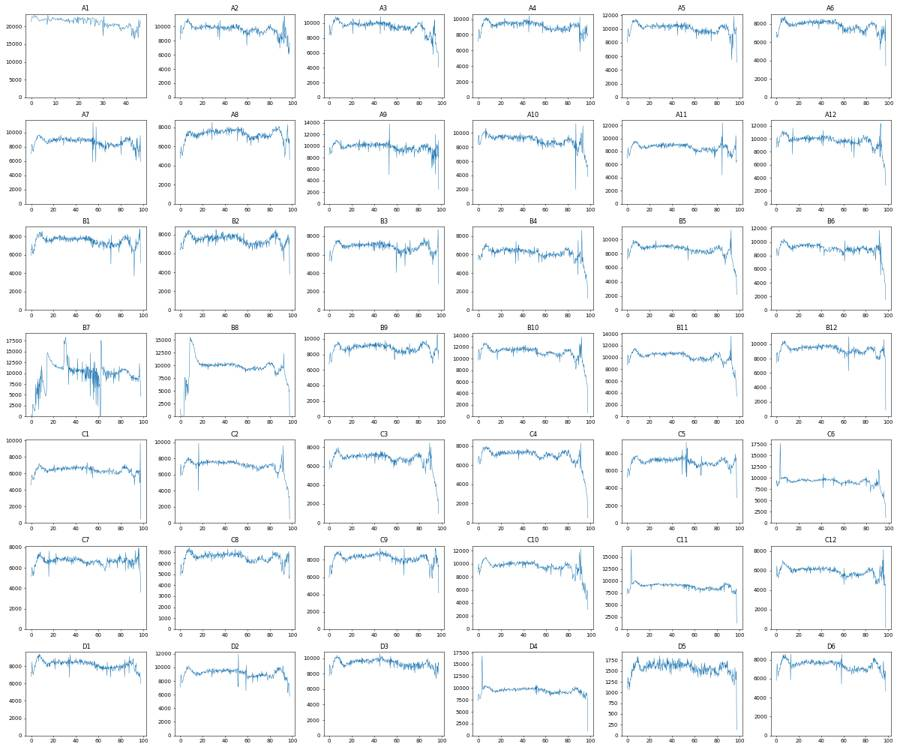
32
tool call · Bash
cd /tmp/work && cat > plot_time2.py <<'EOF'
import numpy as np, matplotlib; matplotlib.use('Agg'); import matplotlib.pyplot as plt
ws=['B7','B8','C6','C11','D4','A1']
fig,axs=plt.subplots(len(ws),2,figsize=(18,3*len(ws)))
for i,w in enumerate(ws):
d=np.load(f'cache/{w}.npz'); ev=d['ev']; t=ev[:,0]/1000.0
bins=np.arange(0, t.max()+0.1, 0.1); c,_=np.histogram(t,bins)
axs[i,0].plot(bins[:-1], c/0.1, lw=0.6); axs[i,0].set_title(w+' rate (0.1s bins)')
# FSC-A vs time scatter subsample
idx=np.arange(0,len(t),20)
axs[i,1].scatter(t[idx], np.arcsinh(ev[idx,1]/1000), s=0.2, alpha=0.3); axs[i,1].set_title(w+' asinh FSC-A vs time')
plt.tight_layout(); plt.savefig('time_zoom.png',dpi=55)
EOF
python3 -I plot_time2.py33
tool call · Read
{
"file_path": "/tmp/work/time_zoom.png"
}34
tool output
Shell cwd was reset to /task
35
tool output
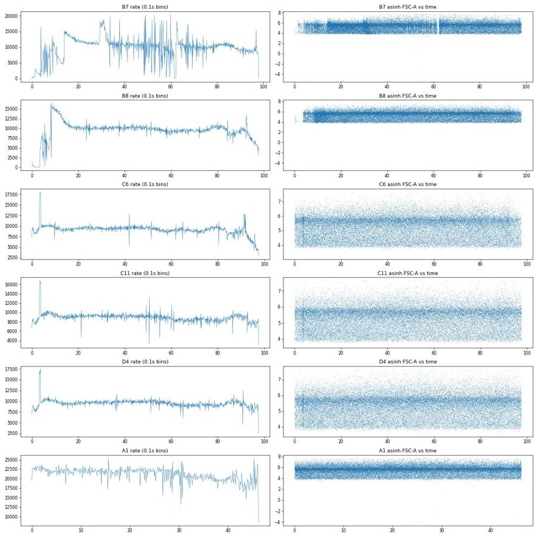
37
tool call · Bash
cd /tmp/work && cat > nonmono.py <<'EOF'
import numpy as np
for w in ['C6','C11','D4']:
d=np.load(f'cache/{w}.npz'); ev=d['ev']; t=ev[:,0]
i=np.where(np.diff(t)<0)[0]
print(w, 'nonmono idx', i, 't before/after', t[i], t[i+1])
j=i[0]
print(' times around:', t[j-5:j+6])
# events in window
lo=t[j+1]; hi=t[j]
seg1=np.where((t>=lo)&(t<=hi)&(np.arange(len(t))<=j))[0]; seg2=np.where((t>=lo)&(t<=hi)&(np.arange(len(t))>j))[0]
print(' overlap window ms', lo, hi, 'n before', len(seg1), 'n after', len(seg2))
# check for duplicates of rows
A=ev[seg1][:,1:]; B=ev[seg2][:,1:]
sa=set(map(tuple,A)); nd=sum(tuple(r) in sa for r in B)
print(' exact duplicate rows (excluding time):', nd, 'of', len(B))
# full-file duplicate check
u=np.unique(ev[:,1:6],axis=0); print(' unique rows FSC..VL1:', len(u), 'of', len(ev))
# where does segment after start; find end of second block (time goes back past hi?)
k=j+1
while k < len(t) and t[k] <= hi: k+=1
print(' second segment length to pass hi:', k-(j+1))
EOF
python3 -I nonmono.py38
tool output
C6 nonmono idx [4442] t before/after [3894.] [14.] times around: [3894. 3894. 3894. 3894. 3894. 3894. 14. 14. 14. 14. 14.] overlap window ms 14.0 3894.0 n before 4443 n after 34737 exact duplicate rows (excluding time): 0 of 34737 unique rows FSC..VL1: 891011 of 891011 second segment length to pass hi: 34737 C11 nonmono idx [4102] t before/after [3896.] [14.] times around: [3896. 3896. 3896. 3896. 3896. 3896. 14. 14. 14. 14. 14.] overlap window ms 14.0 3896.0 n before 4103 n after 31919 exact duplicate rows (excluding time): 0 of 31919 unique rows FSC..VL1: 868685 of 868685 second segment length to pass hi: 31919 D4 nonmono idx [4083] t before/after [3836.] [14.] times around: [3835. 3836. 3836. 3836. 3836. 3836. 14. 14. 14. 14. 15.] overlap window ms 14.0 3836.0 n before 4084 n after 32327 exact duplicate rows (excluding time): 0 of 32327 unique rows FSC..VL1: 925805 of 925805 second segment length to pass hi: 32327 Shell cwd was reset to /task
40
agent
Found three wells (C6, C11, D4) where the Time channel resets after the first ~4,100–4,400 events. I'm checking whether that first block looks like the same sample.
41
tool call · Bash
cd /tmp/work && cat > seg.py <<'EOF'
import numpy as np
def summ(x, names):
out={}
for ch in ['FSC-A','SSC-A','BL1-A','RL3-A','VL1-A','SSC-H']:
v=x[:,names.index(ch)]; out[ch]=np.round(np.percentile(v,[10,50,90])).astype(int).tolist()
out['GFP>2e4%']=round(100*np.mean(x[:,names.index('BL1-A')]>2e4),2)
out['RL3>1e4%']=round(100*np.mean(x[:,names.index('RL3-A')]>1e4),2)
return out
for w in ['C6','C11','D4','C5','D3','C10']:
d=np.load(f'cache/{w}.npz'); ev=d['ev']; names=list(d['names']); t=ev[:,0]
i=np.where(np.diff(t)<0)[0]
if len(i):
j=i[0]+1; a=ev[:j]; b=ev[j:]
print(w,'seg1',len(a),summ(a,names)); print(w,'seg2',len(b),summ(b,names))
bb=b[b[:,0]<=t[j-1]]; print(w,'seg2 first 3.9s',len(bb),summ(bb,names))
else:
print(w,'whole',len(ev),summ(ev,names)); print(w,'first 4s', summ(ev[t<4000],names))
EOF
python3 -I seg.py42
tool output
C6 seg1 4443 {'FSC-A': [32456, 98137, 195039], 'SSC-A': [27352, 99470, 307640], 'BL1-A': [-1, 87, 286], 'RL3-A': [295, 3301, 17788], 'VL1-A': [203, 1506, 6999], 'SSC-H': [27096, 83518, 223083], 'GFP>2e4%': 0.05, 'RL3>1e4%': 21.58}
C6 seg2 886568 {'FSC-A': [32377, 106892, 226993], 'SSC-A': [28765, 120059, 353645], 'BL1-A': [3, 96, 337], 'RL3-A': [390, 4049, 21651], 'VL1-A': [223, 2012, 9393], 'SSC-H': [28287, 98202, 235280], 'GFP>2e4%': 0.04, 'RL3>1e4%': 26.77}
C6 seg2 first 3.9s 34737 {'FSC-A': [32789, 102988, 205201], 'SSC-A': [28029, 108493, 319350], 'BL1-A': [2, 90, 301], 'RL3-A': [354, 3657, 19276], 'VL1-A': [228, 1717, 7884], 'SSC-H': [27652, 90301, 226392], 'GFP>2e4%': 0.01, 'RL3>1e4%': 23.91}
C11 seg1 4103 {'FSC-A': [33542, 101429, 196773], 'SSC-A': [27252, 102487, 289652], 'BL1-A': [2, 85, 256], 'RL3-A': [203, 3421, 19010], 'VL1-A': [199, 1664, 7532], 'SSC-H': [26825, 85628, 214497], 'GFP>2e4%': 0.02, 'RL3>1e4%': 23.74}
C11 seg2 864582 {'FSC-A': [33333, 111020, 235789], 'SSC-A': [29081, 124974, 353566], 'BL1-A': [2, 95, 318], 'RL3-A': [278, 4294, 23194], 'VL1-A': [188, 2186, 10608], 'SSC-H': [28447, 101078, 232970], 'GFP>2e4%': 0.03, 'RL3>1e4%': 28.77}
C11 seg2 first 3.9s 31919 {'FSC-A': [33155, 105815, 203251], 'SSC-A': [27349, 110602, 310218], 'BL1-A': [0, 86, 275], 'RL3-A': [220, 3762, 20236], 'VL1-A': [196, 1808, 8282], 'SSC-H': [27039, 91593, 221828], 'GFP>2e4%': 0.02, 'RL3>1e4%': 25.61}
D4 seg1 4084 {'FSC-A': [33831, 102307, 197218], 'SSC-A': [27062, 102952, 296418], 'BL1-A': [0, 89, 285], 'RL3-A': [182, 3501, 20414], 'VL1-A': [171, 1398, 6224], 'SSC-H': [26831, 85572, 215528], 'GFP>2e4%': 0.02, 'RL3>1e4%': 25.27}
D4 seg2 921721 {'FSC-A': [33824, 111983, 246608], 'SSC-A': [29203, 126322, 366816], 'BL1-A': [3, 101, 353], 'RL3-A': [264, 4574, 24684], 'VL1-A': [163, 1945, 9356], 'SSC-H': [28437, 101846, 236924], 'GFP>2e4%': 0.03, 'RL3>1e4%': 31.65}
D4 seg2 first 3.9s 32327 {'FSC-A': [33499, 104352, 207960], 'SSC-A': [27726, 107884, 310834], 'BL1-A': [1, 91, 294], 'RL3-A': [201, 3764, 21238], 'VL1-A': [173, 1545, 7048], 'SSC-H': [27014, 89034, 221289], 'GFP>2e4%': 0.02, 'RL3>1e4%': 27.17}
C5 whole 689593 {'FSC-A': [32223, 106495, 210164], 'SSC-A': [27943, 116620, 327238], 'BL1-A': [2, 90, 299], 'RL3-A': [379, 4968, 24129], 'VL1-A': [258, 1929, 8501], 'SSC-H': [27495, 96421, 228093], 'GFP>2e4%': 0.04, 'RL3>1e4%': 32.01}
C5 first 4s {'FSC-A': [32406, 99252, 187886], 'SSC-A': [26474, 101511, 287658], 'BL1-A': [0, 83, 258], 'RL3-A': [304, 4332, 21278], 'VL1-A': [236, 1543, 6752], 'SSC-H': [26111, 86348, 214227], 'GFP>2e4%': 0.02, 'RL3>1e4%': 28.49}
D3 whole 915097 {'FSC-A': [33545, 108014, 247944], 'SSC-A': [27944, 117114, 359801], 'BL1-A': [2, 99, 352], 'RL3-A': [148, 3746, 23828], 'VL1-A': [122, 1907, 10186], 'SSC-H': [27075, 94427, 232011], 'GFP>2e4%': 0.02, 'RL3>1e4%': 29.48}
D3 first 4s {'FSC-A': [33228, 100526, 208471], 'SSC-A': [26300, 100045, 305963], 'BL1-A': [-1, 89, 295], 'RL3-A': [112, 3018, 20394], 'VL1-A': [129, 1506, 7512], 'SSC-H': [25608, 83255, 217455], 'GFP>2e4%': 0.01, 'RL3>1e4%': 25.24}
C10 whole 927162 {'FSC-A': [33343, 110996, 243721], 'SSC-A': [29448, 126567, 364219], 'BL1-A': [2, 95, 334], 'RL3-A': [246, 4096, 22671], 'VL1-A': [183, 2086, 9854], 'SSC-H': [28803, 102200, 235899], 'GFP>2e4%': 0.03, 'RL3>1e4%': 28.37}
C10 first 4s {'FSC-A': [33901, 108852, 220847], 'SSC-A': [28748, 118357, 330287], 'BL1-A': [1, 90, 303], 'RL3-A': [208, 3792, 20866], 'VL1-A': [206, 1815, 8177], 'SSC-H': [28194, 96917, 227476], 'GFP>2e4%': 0.02, 'RL3>1e4%': 26.37}
Shell cwd was reset to /task44
tool call · Bash
cd /tmp/work && python3 -I -c "
import numpy as np
for w in ['C6','C11','D4']:
d=np.load(f'cache/{w}.npz'); t=d['ev'][:,0]
j=np.where(np.diff(t)<0)[0][0]+1
print(w, np.histogram(t[:j], bins=np.arange(0,4001,250))[0])
print(w, 'seg2', np.histogram(t[j:], bins=np.arange(0,4001,250))[0])
"45
tool output
C6 [ 0 0 0 0 0 0 0 0 0 0 0 0 0 1148 2043 1252] C6 seg2 [2096 2349 2315 2171 2020 2096 2103 2080 2216 2310 2173 2303 2333 2389 2395 2467] C11 [ 0 0 0 0 0 0 0 0 0 0 0 0 0 1121 1892 1090] C11 seg2 [1822 2087 2103 1993 1937 1897 1878 1993 2004 2013 2102 2151 2134 2247 2249 2263] D4 [ 0 0 0 0 0 0 0 0 0 0 0 0 0 1563 1867 654] D4 seg2 [1829 2181 2178 2100 1969 1941 1949 1941 2022 2091 2193 2193 2311 2286 2340 2384] Shell cwd was reset to /task
47
tool call · Bash
cd /tmp/work && cat > plot_scatter.py <<'EOF'
import numpy as np, pandas as pd, matplotlib; matplotlib.use('Agg'); import matplotlib.pyplot as plt
from matplotlib.colors import LogNorm
import sys
ws=sys.argv[1].split(','); mode=sys.argv[2]
fig,axs=plt.subplots(len(ws)//4 + (len(ws)%4>0),4,figsize=(20,5*(len(ws)//4 + (len(ws)%4>0)))); axs=np.atleast_1d(axs).ravel()
for i,w in enumerate(ws):
d=np.load(f'cache/{w}.npz'); ev=d['ev']; names=list(d['names'])
x=ev[:,names.index('FSC-A')]; y=ev[:,names.index('SSC-A')]
if mode=='lin':
axs[i].hist2d(x,y,bins=300,range=[[0,1.05e6],[0,1.05e6]],norm=LogNorm(),cmap='jet')
else:
axs[i].hist2d(np.log10(np.clip(x,1,None)),np.log10(np.clip(y,1,None)),bins=300,range=[[3.5,6.1],[3.5,6.1]],norm=LogNorm(),cmap='jet')
axs[i].set_title(f'{w} FSC-A vs SSC-A ({mode})')
plt.tight_layout(); plt.savefig(f'scatter_{mode}.png',dpi=50)
EOF
python3 -I plot_scatter.py A1,A2,B7,C5,D5,B1,D3,C12 lin48
tool call · Read
{
"file_path": "/tmp/work/scatter_lin.png"
}49
tool output
Shell cwd was reset to /task
50
tool output
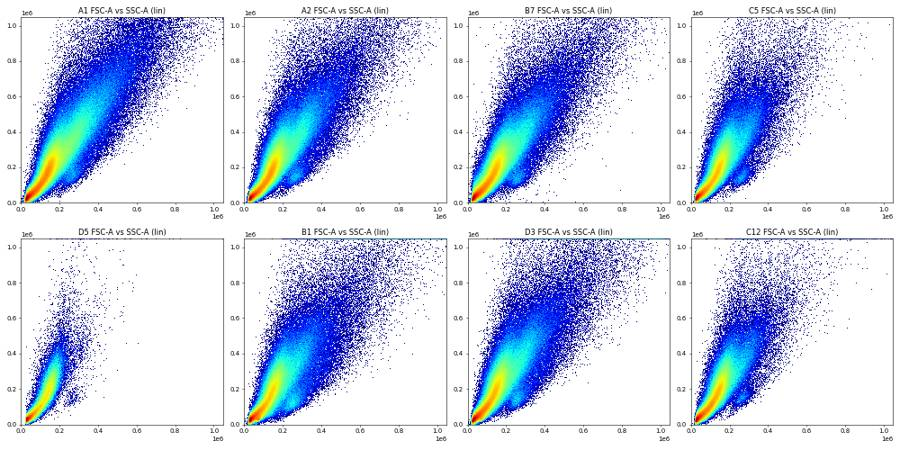
52
tool call · Bash
cd /tmp/work && python3 -I plot_scatter.py A1,A2,B7,C5,D5,B1,D3,C12 log
53
tool call · Read
{
"file_path": "/tmp/work/scatter_log.png"
}54
tool output
Shell cwd was reset to /task
55
tool output
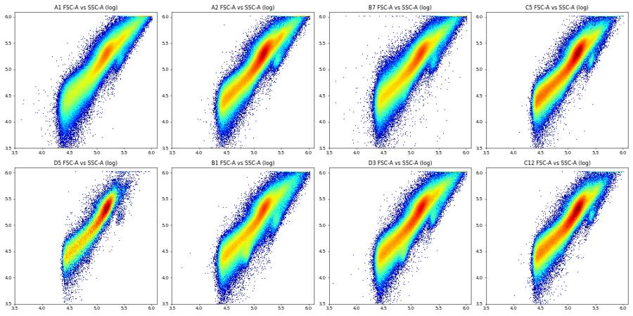
57
tool call · Bash
cd /tmp/work && python3 -I -c "
import flowkit as fk, inspect
print(inspect.signature(fk.transforms.LogicleTransform.__init__))
print(inspect.signature(fk.transforms.LogTransform.__init__) if hasattr(fk.transforms,'LogTransform') else '')
print([n for n in dir(fk.transforms) if not n.startswith('_')])
print(inspect.signature(fk.Dimension.__init__))
print(inspect.signature(fk.gates.PolygonGate.__init__)); print(inspect.signature(fk.gates.RectangleGate.__init__))
print(inspect.signature(fk.GatingStrategy.add_gate)); print(inspect.signature(fk.GatingStrategy.add_transform))
print(inspect.signature(fk.GatingStrategy.gate_sample))
print(inspect.signature(fk.Sample.__init__))
"58
tool output
(self, param_t, param_w, param_m, param_a) (self, param_t, param_m) ['AsinhTransform', 'HyperlogTransform', 'LinearTransform', 'LogTransform', 'LogicleTransform', 'RatioTransform', 'WSPBiexTransform', 'WSPLogTransform'] (self, dimension_id, compensation_ref='uncompensated', transformation_ref=None, range_min=None, range_max=None) (self, gate_name, dimensions, vertices, use_complement=False) (self, gate_name, dimensions, use_complement=False) (self, gate, gate_path, sample_id=None) (self, transform_id, transform) (self, sample, cache_events=False, verbose=False) (self, fcs_path_or_data, sample_id=None, filename_as_id=False, channel_labels=None, compensation=None, null_channel_list=None, ignore_offset_error=False, ignore_offset_discrepancy=False, use_header_offsets=False, cache_original_events=False, subsample=10000) Shell cwd was reset to /task
60
tool call · Bash
cd /tmp/work && python3 -I -c "
import numpy as np
for w in ['A1','A5','B1','D5']:
d=np.load(f'cache/{w}.npz'); ev=d['ev']; names=list(d['names'])
for ch in ['BL1-A','RL3-A','VL1-A','FSC-A','SSC-A','SSC-H']:
v=ev[:,names.index(ch)]; print(w,ch,np.round(np.percentile(v,[0.1,1,5,25,50,75,95,99,99.9])).astype(int))
"61
tool output
A1 BL1-A [-187 -55 -15 49 120 244 711 1399 5284] A1 RL3-A [ -453 -236 -55 1092 4241 11636 31915 56852 102687] A1 VL1-A [ -936 -567 -229 824 2724 6258 20564 56324 138630] A1 FSC-A [ 19478 23512 29096 66762 129067 193248 430499 723104 1048575] A1 SSC-A [ 1438 10864 21959 62230 155780 273546 631548 1048575 1048575] A1 SSC-H [ 6275 13831 23146 54423 119673 185625 289885 421410 701183] A5 BL1-A [ -684 -56 -16 45 106 205 583 1201 11689] A5 RL3-A [ -208 -95 27 1127 3836 10028 28812 51654 92968] A5 VL1-A [ -381 -167 60 879 2522 5760 17579 52644 136901] A5 FSC-A [ 21386 24557 29293 61460 121938 170573 342975 573147 984056] A5 SSC-A [ 4551 12597 22538 57210 146292 249677 526051 909574 1048575] A5 SSC-H [ 6543 13765 22760 51371 117070 183532 282820 411368 695039] B1 BL1-A [ -92 -55 -20 37 95 191 516 1013 2080] B1 RL3-A [ -244 -119 -19 684 3408 11532 31971 56336 102794] B1 VL1-A [ -433 -203 -10 632 2116 5942 28846 76201 185083] B1 FSC-A [ 21546 24587 28535 53281 105260 163366 335467 590442 1048575] B1 SSC-A [ 4486 11460 19901 42674 102788 216782 460520 830671 1048575] B1 SSC-H [ 5877 12010 19691 38620 83258 163528 264256 383634 630348] D5 BL1-A [ -93 -50 -16 38 88 160 387 801 2981] D5 RL3-A [ -94 -6 149 2681 7949 18742 52506 87887 149841] D5 VL1-A [ -46 29 131 550 1510 3619 9343 26332 81847] D5 FSC-A [ 23424 25139 28458 50138 99314 145462 196568 276595 409513] D5 SSC-A [ 5336 13015 21362 45505 106346 203976 343472 530192 984396] D5 SSC-H [ 5629 13263 21329 42888 91358 165579 257646 358757 588335] Shell cwd was reset to /task
63
thinking
Event data is cached and QC is done: B7 and B8 show disturbed flow, C6, C11 and D4 have a Time reset, D5 has few events, and A1 ran at 200 µL/min. I'm plotting scatter on logicle axes to draw the Cells gate next.
64
tool call · Bash
cd /tmp/work && cat > common.py <<'EOF'
import numpy as np, pandas as pd, flowkit as fk
LAY = pd.read_csv('/task/inputs/plate_layout.csv')
WELLS = list(LAY.well)
LGC = fk.transforms.LogicleTransform(param_t=1048576, param_w=0.5, param_m=4.5, param_a=0)
def load(w):
d=np.load(f'/tmp/work/cache/{w}.npz'); return d['ev'], list(d['names'])
def lg(x): return LGC.apply(np.asarray(x, dtype=float))
def ilg(y): return LGC.inverse(np.asarray(y, dtype=float))
EOF
cat > plot_fs.py <<'EOF'
import sys; sys.path.insert(0,'/tmp/work')
from common import *
import matplotlib; matplotlib.use('Agg'); import matplotlib.pyplot as plt
from matplotlib.colors import LogNorm
ws=sys.argv[1].split(',')
n=len(ws); nc=4; nr=(n+nc-1)//nc
fig,axs=plt.subplots(nr,nc,figsize=(5*nc,5*nr)); axs=np.atleast_1d(axs).ravel()
for i,w in enumerate(ws):
ev,names=load(w)
x=lg(ev[:,names.index('FSC-A')]); y=lg(ev[:,names.index('SSC-A')])
axs[i].hist2d(x,y,bins=250,range=[[0.3,1.02],[0.3,1.02]],norm=LogNorm(),cmap='jet')
axs[i].set_title(w); axs[i].grid(alpha=0.4)
axs[i].set_xticks(np.arange(0.3,1.02,0.05)); axs[i].set_yticks(np.arange(0.3,1.02,0.05)); axs[i].tick_params(labelsize=6)
plt.tight_layout(); plt.savefig(sys.argv[2],dpi=60)
EOF
python3 -I plot_fs.py A1,A5,B7,D5 fs1.png; python3 -I -c "
import sys; sys.path.insert(0,'/tmp/work')
from common import *
print(ilg([0.3,0.4,0.5,0.6,0.7,0.8,0.9,1.0])); print(lg([0,100,1000,1e4,25000,1e5,1e6,1048575]))"65
tool call · Read
{
"file_path": "/tmp/work/fs1.png"
}66
tool output
[9.52505492e+02 2.38668564e+03 6.24346820e+03 1.69955717e+04 4.72242396e+04 1.32372602e+05 3.72323034e+05 1.04857600e+06] [0.11111111 0.1389458 0.30530839 0.54740388 0.63791932 0.77283749 0.99542032 0.99999991] Shell cwd was reset to /task
67
tool output
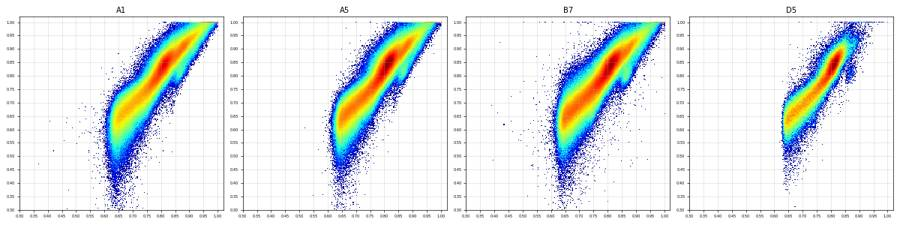
69
tool call · Bash
cd /tmp/work && cat > hist_fsc.py <<'EOF'
import sys; sys.path.insert(0,'/tmp/work')
from common import *
import matplotlib; matplotlib.use('Agg'); import matplotlib.pyplot as plt
fig,axs=plt.subplots(1,3,figsize=(21,5))
for w in WELLS:
ev,names=load(w)
f=ev[:,names.index('FSC-A')]; s=ev[:,names.index('SSC-A')]
h,b=np.histogram(np.log10(np.clip(f,1,None)),bins=200,range=(4,6.05)); axs[0].plot(b[:-1],h/h.sum(),lw=0.6,label=w)
h,b=np.histogram(np.log10(np.clip(s,1,None)),bins=200,range=(3.5,6.05)); axs[1].plot(b[:-1],h/h.sum(),lw=0.6)
h,b=np.histogram(f,bins=200,range=(0,1.05e6)); axs[2].plot(b[:-1],h/h.sum(),lw=0.6)
axs[0].set_title('log10 FSC-A'); axs[1].set_title('log10 SSC-A'); axs[2].set_title('lin FSC-A'); axs[2].set_yscale('log')
for a in axs: a.grid(alpha=.4)
axs[0].set_xticks(np.arange(4,6.05,0.1))
plt.tight_layout(); plt.savefig('hist_fsc.png',dpi=60)
EOF
python3 -I hist_fsc.py70
tool call · Read
{
"file_path": "/tmp/work/hist_fsc.png"
}71
tool output
Shell cwd was reset to /task
72
tool output
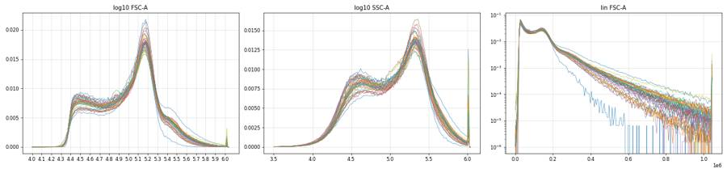
74
tool call · Bash
cd /tmp/work && cat > pooled_fs.py <<'EOF'
import sys; sys.path.insert(0,'/tmp/work')
from common import *
import matplotlib; matplotlib.use('Agg'); import matplotlib.pyplot as plt
from matplotlib.colors import LogNorm
H=None; rng=[[0.55,1.005],[0.4,1.005]]
for w in WELLS:
ev,names=load(w)
h,xe,ye=np.histogram2d(lg(ev[:,names.index('FSC-A')]),lg(ev[:,names.index('SSC-A')]),bins=300,range=rng)
H=h if H is None else H+h
np.save('H_fs.npy',H)
fig,ax=plt.subplots(figsize=(12,11))
ax.pcolormesh(xe,ye,H.T,norm=LogNorm(vmin=1),cmap='jet')
ax.set_xticks(np.arange(0.55,1.005,0.025)); ax.set_yticks(np.arange(0.4,1.005,0.025)); ax.grid(alpha=0.5); ax.tick_params(labelsize=7)
ax.set_xlabel('logicle FSC-A'); ax.set_ylabel('logicle SSC-A')
plt.tight_layout(); plt.savefig('pooled_fs.png',dpi=70)
EOF
python3 -I pooled_fs.py75
tool call · Read
{
"file_path": "/tmp/work/pooled_fs.png"
}76
tool output
Shell cwd was reset to /task
77
tool output
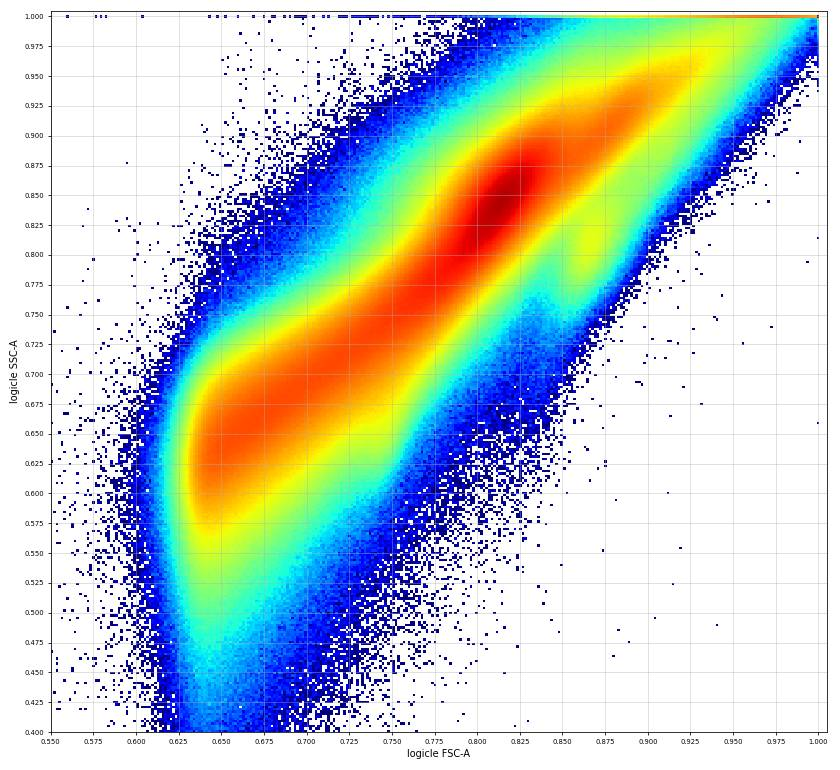
79
tool call · Bash
cd /tmp/work && python3 -I -c "
import numpy as np
H=np.load('H_fs.npy'); xe=np.linspace(0.55,1.005,301); ye=np.linspace(0.4,1.005,301)
xc=(xe[:-1]+xe[1:])/2; yc=(ye[:-1]+ye[1:])/2
X,Y=np.meshgrid(xc,yc,indexing='ij')
p0=np.array([0.67,0.665]); p1=np.array([0.815,0.85]); d=(p1-p0)/np.linalg.norm(p1-p0); n=np.array([-d[1],d[0]])
s=(X-p0[0])*d[0]+(Y-p0[1])*d[1]; o=(X-p0[0])*n[0]+(Y-p0[1])*n[1]
L=np.linalg.norm(p1-p0)
band=np.abs(o)<0.04
for f in np.arange(-0.2,1.3,0.05):
m=band&(np.abs(s-f*L)<0.025*L)
print(round(f,2), (p0+f*L*d).round(3), int(H[m].sum()))
"80
tool output
-0.2 [0.641 0.628] 446503 -0.15 [0.648 0.637] 575292 -0.1 [0.656 0.647] 673568 -0.05 [0.663 0.656] 742280 -0.0 [0.67 0.665] 775531 0.05 [0.677 0.674] 776293 0.1 [0.684 0.684] 772645 0.15 [0.692 0.693] 759569 0.2 [0.699 0.702] 751244 0.25 [0.706 0.711] 744317 0.3 [0.714 0.72 ] 734398 0.35 [0.721 0.73 ] 725501 0.4 [0.728 0.739] 732504 0.45 [0.735 0.748] 739066 0.5 [0.742 0.758] 761333 0.55 [0.75 0.767] 793552 0.6 [0.757 0.776] 838841 0.65 [0.764 0.785] 891642 0.7 [0.772 0.794] 946659 0.75 [0.779 0.804] 1019013 0.8 [0.786 0.813] 1133114 0.85 [0.793 0.822] 1296866 0.9 [0.8 0.831] 1487888 0.95 [0.808 0.841] 1626436 1.0 [0.815 0.85 ] 1643786 1.05 [0.822 0.859] 1510802 1.1 [0.829 0.868] 1275440 1.15 [0.837 0.878] 1019659 1.2 [0.844 0.887] 788917 1.25 [0.851 0.896] 624471 Shell cwd was reset to /task
82
tool call · Bash
cd /tmp/work && cat > gates_def.py <<'EOF'
# Gate vertex definitions in logicle space (LGC: T=1048576, W=0.5, M=4.5, A=0)
CELLS = [(0.690,0.765),(0.785,0.690),(0.880,0.745),(0.997,0.890),(0.997,0.997),(0.790,0.997),(0.720,0.860)]
EOF
cat > overlay_fs.py <<'EOF'
import sys; sys.path.insert(0,'/tmp/work')
from common import *; import gates_def as G; import importlib
import matplotlib; matplotlib.use('Agg'); import matplotlib.pyplot as plt
from matplotlib.colors import LogNorm
H=np.load('H_fs.npy'); xe=np.linspace(0.55,1.005,301); ye=np.linspace(0.4,1.005,301)
ws=sys.argv[1].split(',') if len(sys.argv)>1 else []
n=1+len(ws); nc=min(n,4); nr=(n+nc-1)//nc
fig,axs=plt.subplots(nr,nc,figsize=(6*nc,6*nr)); axs=np.atleast_1d(axs).ravel()
P=np.array(G.CELLS+[G.CELLS[0]])
axs[0].pcolormesh(xe,ye,H.T,norm=LogNorm(vmin=1),cmap='jet'); axs[0].plot(P[:,0],P[:,1],'k-',lw=1.5); axs[0].set_title('pooled')
for i,w in enumerate(ws):
ev,names=load(w)
axs[i+1].hist2d(lg(ev[:,names.index('FSC-A')]),lg(ev[:,names.index('SSC-A')]),bins=200,range=[[0.55,1.005],[0.4,1.005]],norm=LogNorm(),cmap='jet')
axs[i+1].plot(P[:,0],P[:,1],'k-',lw=1.5); axs[i+1].set_title(w)
for a in axs: a.grid(alpha=0.3)
plt.tight_layout(); plt.savefig('overlay_fs.png',dpi=55)
EOF
python3 -I overlay_fs.py A1,B7,D5,C12,A9,B1,D383
tool call · Read
{
"file_path": "/tmp/work/overlay_fs.png"
}84
tool output
Shell cwd was reset to /task
85
tool output
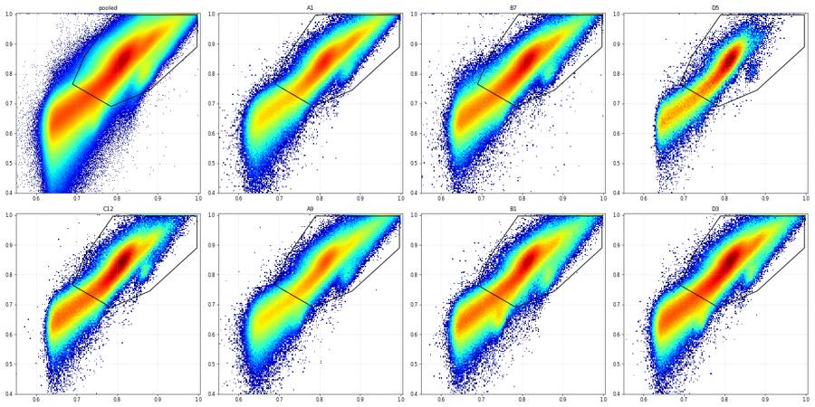
87
tool call · Bash
cd /tmp/work && cat > gatelib.py <<'EOF'
import sys; sys.path.insert(0,'/tmp/work')
from common import *
from matplotlib.path import Path
import gates_def as G
def inpoly(x,y,verts):
return Path(np.array(verts)).contains_points(np.column_stack([x,y]))
def cells_mask(ev,names):
return inpoly(lg(ev[:,names.index('FSC-A')]),lg(ev[:,names.index('SSC-A')]),G.CELLS)
EOF
cat > pooled_ss.py <<'EOF'
import sys; sys.path.insert(0,'/tmp/work')
from gatelib import *
import matplotlib; matplotlib.use('Agg'); import matplotlib.pyplot as plt
from matplotlib.colors import LogNorm
rng=[[0.6,1.005],[0.6,1.005]]; H=None; per={}
for w in WELLS:
ev,names=load(w); m=cells_mask(ev,names)
x=lg(ev[m,names.index('SSC-H')]); y=lg(ev[m,names.index('SSC-A')])
h,xe,ye=np.histogram2d(x,y,bins=300,range=rng); H=h if H is None else H+h; per[w]=h
np.save('H_ss.npy',H); np.savez('H_ss_per.npz',**per)
fig,ax=plt.subplots(figsize=(12,11))
ax.pcolormesh(xe,ye,H.T,norm=LogNorm(vmin=1),cmap='jet')
ax.set_xticks(np.arange(0.6,1.005,0.02)); ax.set_yticks(np.arange(0.6,1.005,0.02)); ax.grid(alpha=0.5); ax.tick_params(labelsize=7)
ax.plot([0.6,1],[0.6,1],'w--',lw=0.8)
ax.set_xlabel('logicle SSC-H'); ax.set_ylabel('logicle SSC-A')
plt.tight_layout(); plt.savefig('pooled_ss.png',dpi=70)
EOF
python3 -I pooled_ss.py88
tool call · Read
{
"file_path": "/tmp/work/pooled_ss.png"
}89
tool output
Shell cwd was reset to /task
90
tool output
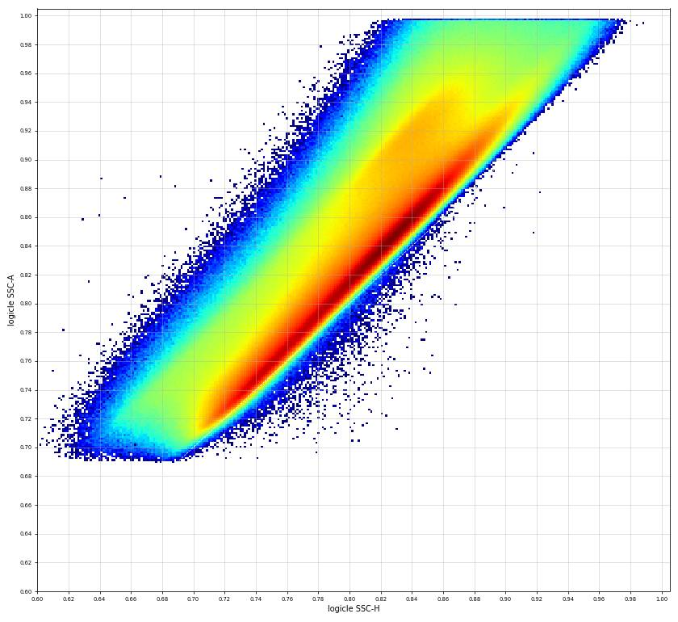
92
agent
I've drafted the Cells polygon and am now sizing the Singlets gate from the width of the SSC-H/SSC-A diagonal.
93
tool call · Bash
cd /tmp/work && python3 -I -c "
import numpy as np
H=np.load('H_ss.npy'); e=np.linspace(0.6,1.005,301); c=(e[:-1]+e[1:])/2
X,Y=np.meshgrid(c,c,indexing='ij'); D=Y-X
for h0 in np.arange(0.70,0.94,0.02):
m=(X>=h0)&(X<h0+0.02)
dd=D[m]; ww=H[m]
hist,be=np.histogram(dd,bins=np.arange(-0.03,0.20,0.005),weights=ww)
pk=be[np.argmax(hist)]
print(round(h0,2), 'peak d=%.3f'%pk, ' '.join('%d'%(v/1000) for v in hist[:36]))
print('bins start',np.arange(-0.03,0.20,0.005)[:36].round(3))
"94
tool output
0.7 peak d=0.005 0 0 0 0 0 4 29 110 93 55 59 45 27 30 25 22 15 18 16 10 10 6 3 2 1 1 0 0 0 0 0 0 0 0 0 0 0.72 peak d=0.005 0 0 0 0 1 29 179 476 300 135 118 75 39 39 31 26 18 21 18 12 13 9 4 3 2 1 0 0 0 0 0 0 0 0 0 0 0.74 peak d=0.005 0 0 0 0 1 30 195 628 482 209 177 110 56 56 42 34 22 26 23 16 18 13 7 6 4 3 1 1 1 0 0 0 0 0 0 0 0.76 peak d=0.010 0 0 0 0 0 10 87 489 599 281 228 145 75 73 54 42 27 31 28 19 23 19 11 10 6 4 2 2 1 1 0 0 0 0 0 0 0.78 peak d=0.010 0 0 0 0 0 2 33 352 788 471 345 196 102 100 74 58 37 43 39 28 35 32 19 19 12 9 5 5 3 2 2 1 0 0 0 0 0.8 peak d=0.010 0 0 0 0 0 0 9 188 837 765 589 267 124 121 91 74 48 58 55 39 52 51 33 33 22 15 9 10 7 4 4 3 2 1 1 0 0.82 peak d=0.015 0 0 0 0 0 0 2 76 614 900 883 388 158 146 110 90 60 74 72 54 73 74 51 53 36 26 15 17 14 9 9 6 4 2 2 1 0.84 peak d=0.020 0 0 0 0 0 0 0 21 240 526 767 417 163 141 101 83 56 71 70 53 72 70 48 54 38 28 18 20 17 10 11 8 6 3 2 1 0.86 peak d=0.020 0 0 0 0 0 0 0 4 54 145 321 256 115 96 66 52 35 44 43 32 42 39 26 29 23 18 11 13 11 6 6 3 1 0 0 0 0.88 peak d=0.025 0 0 0 0 0 0 0 0 12 33 91 110 66 62 42 32 20 25 24 17 21 19 12 14 12 9 5 4 1 0 0 0 0 0 0 0 0.9 peak d=0.025 0 0 0 0 0 0 0 0 2 7 21 34 28 33 24 18 11 13 12 8 9 8 4 3 1 0 0 0 0 0 0 0 0 0 0 0 0.92 peak d=0.035 0 0 0 0 0 0 0 0 0 1 4 9 9 13 12 9 5 6 4 2 1 0 0 0 0 0 0 0 0 0 0 0 0 0 0 0 bins start [-0.03 -0.025 -0.02 -0.015 -0.01 -0.005 0. 0.005 0.01 0.015 0.02 0.025 0.03 0.035 0.04 0.045 0.05 0.055 0.06 0.065 0.07 0.075 0.08 0.085 0.09 0.095 0.1 0.105 0.11 0.115 0.12 0.125 0.13 0.135 0.14 0.145] Shell cwd was reset to /task
96
tool call · Bash
cd /tmp/work && cat >> gates_def.py <<'EOF'
SINGLETS = [(0.680,0.675),(0.955,0.950),(0.955,0.995),(0.840,0.875),(0.680,0.712)]
EOF
cat > overlay_ss.py <<'EOF'
import sys; sys.path.insert(0,'/tmp/work')
from gatelib import *
import matplotlib; matplotlib.use('Agg'); import matplotlib.pyplot as plt
from matplotlib.colors import LogNorm
H=np.load('H_ss.npy'); per=np.load('H_ss_per.npz'); e=np.linspace(0.6,1.005,301)
ws=sys.argv[1].split(',')
n=1+len(ws); nc=4; nr=(n+nc-1)//nc
fig,axs=plt.subplots(nr,nc,figsize=(6*nc,6*nr)); axs=np.atleast_1d(axs).ravel()
P=np.array(G.SINGLETS+[G.SINGLETS[0]])
for i,(nm,h) in enumerate([('pooled',H)]+[(w,per[w]) for w in ws]):
axs[i].pcolormesh(e,e,h.T,norm=LogNorm(vmin=1),cmap='jet'); axs[i].plot(P[:,0],P[:,1],'k-',lw=1.2); axs[i].set_title(nm); axs[i].grid(alpha=0.3)
axs[i].set_xlim(0.66,1.0); axs[i].set_ylim(0.66,1.0)
plt.tight_layout(); plt.savefig('overlay_ss.png',dpi=55)
EOF
python3 -I overlay_ss.py A1,B7,B8,D5,C12,A9,B197
tool call · Read
{
"file_path": "/tmp/work/overlay_ss.png"
}98
tool output
Shell cwd was reset to /task
99
tool output
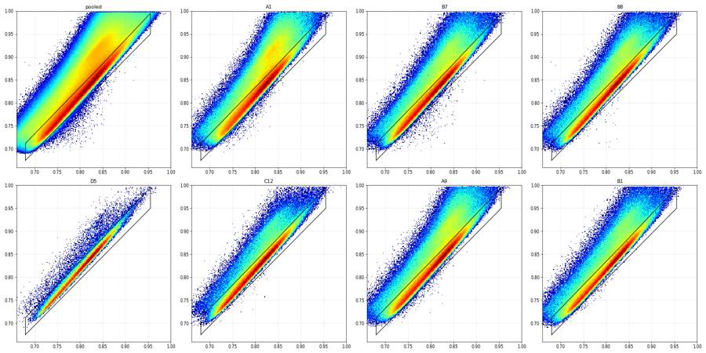
101
tool call · Bash
cd /tmp/work && cat >> gatelib.py <<'EOF'
def singlets_mask(ev,names):
return cells_mask(ev,names) & inpoly(lg(ev[:,names.index('SSC-H')]),lg(ev[:,names.index('SSC-A')]),G.SINGLETS)
EOF
cat > live_explore.py <<'EOF'
import sys; sys.path.insert(0,'/tmp/work')
from gatelib import *
import matplotlib; matplotlib.use('Agg'); import matplotlib.pyplot as plt
from matplotlib.colors import LogNorm
rng=[[0.0,1.0],[0.6,1.005]]; H=None; hists={}; sub={}
for w in WELLS:
ev,names=load(w); m=singlets_mask(ev,names)
r=lg(ev[m,names.index('RL3-A')]); s=lg(ev[m,names.index('SSC-A')])
h,xe,ye=np.histogram2d(r,s,bins=300,range=rng); H=h if H is None else H+h
hists[w]=np.histogram(r,bins=300,range=(0,1))[0]
sub[w]=np.column_stack([ev[m][:, [names.index(c) for c in ['RL3-A','BL1-A','SSC-A','VL1-A','FSC-A','Time']]]])
print(w, m.sum(), flush=True)
np.save('H_live.npy',H); np.savez('hist_rl3.npz',**hists)
np.savez('singlets_data.npz',**sub)
fig,axs=plt.subplots(1,2,figsize=(22,10))
axs[0].pcolormesh(xe,ye,H.T,norm=LogNorm(vmin=1),cmap='jet'); axs[0].set_xticks(np.arange(0,1.0,0.05)); axs[0].grid(alpha=0.4); axs[0].set_xlabel('logicle RL3-A'); axs[0].set_ylabel('logicle SSC-A')
b=np.linspace(0,1,301)[:-1]
for w,h in hists.items(): axs[1].plot(b,h/h.sum(),lw=0.6)
axs[1].set_xticks(np.arange(0,1.0,0.05)); axs[1].grid(alpha=0.4)
plt.tight_layout(); plt.savefig('live_explore.png',dpi=55)
EOF
python3 -I live_explore.py | tail -3; python3 -I -c "
import sys; sys.path.insert(0,'/tmp/work')
from common import *
print([ (round(v,2), int(ilg(v))) for v in np.arange(0.2,1.0,0.05)])"102
tool output (error)
Exit code 1
D4 474145
D5 92511
D6 392035
Traceback (most recent call last):
File "<string>", line 4, in <module>
File "/tmp/work/common.py", line 8, in ilg
def ilg(y): return LGC.inverse(np.asarray(y, dtype=float))
^^^^^^^^^^^^^^^^^^^^^^^^^^^^^^^^^^^^^^^
File "/usr/local/lib/python3.12/site-packages/flowkit/_models/transforms/_transforms.py", line 332, in inverse
return flowutils.transforms.logicle_inverse(
^^^^^^^^^^^^^^^^^^^^^^^^^^^^^^^^^^^^^
File "/usr/local/lib/python3.12/site-packages/flowutils/transforms.py", line 105, in logicle_inverse
channel_indices = range(data.shape[1])
~~~~~~~~~~^^^
IndexError: tuple index out of range104
tool call · Bash
cd /tmp/work && python3 -I -c " import sys; sys.path.insert(0,'/tmp/work') from common import * v=np.arange(0.2,1.0,0.05); print(list(zip(v.round(2), ilg(v).astype(int))))"
105
tool call · Read
{
"file_path": "/tmp/work/live_explore.png"
}106
tool output
[(0.2, 340), (0.25, 593), (0.3, 952), (0.35, 1503), (0.4, 2386), (0.45, 3836), (0.5, 6243), (0.55, 10263), (0.6, 16995), (0.65, 28283), (0.7, 47224), (0.75, 79012), (0.8, 132372), (0.85, 221947), (0.9, 372323), (0.95, 624769)] Shell cwd was reset to /task
107
tool output
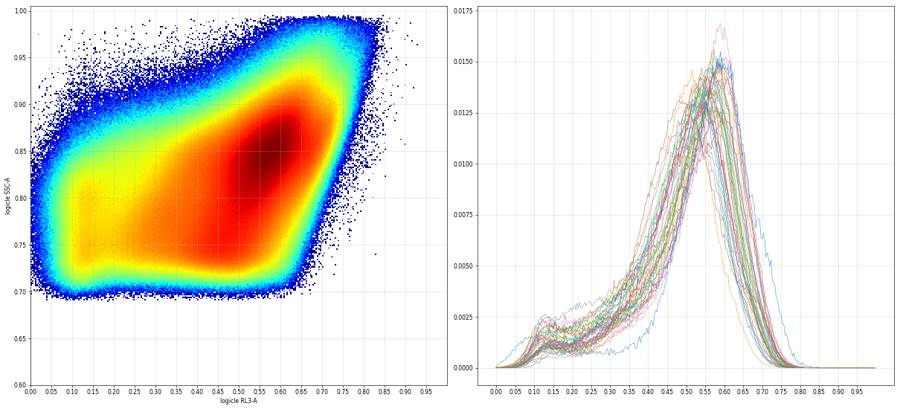
109
agent
The Zombie NIR histogram is unexpected: a small dim peak near 150 and a large peak near 13,000. I'm using GFP and NCAM against RL3-A to work out which peak is the live one.
110
tool call · Bash
cd /tmp/work && cat > live2.py <<'EOF'
import sys; sys.path.insert(0,'/tmp/work')
from common import *
import matplotlib; matplotlib.use('Agg'); import matplotlib.pyplot as plt
from matplotlib.colors import LogNorm
S=np.load('singlets_data.npz') # cols RL3,BL1,SSC,VL1,FSC,Time
H1=H2=H3=None; rng=[[0,1],[0,1]]
for w in WELLS:
a=S[w]; r=lg(a[:,0]); b=lg(a[:,1]); v=lg(a[:,3]); f=lg(a[:,4])
h1,xe,ye=np.histogram2d(r,b,bins=250,range=rng); h2,_,_=np.histogram2d(r,v,bins=250,range=rng); h3,_,_=np.histogram2d(r,f,bins=250,range=[[0,1],[0.6,1]])
H1=h1 if H1 is None else H1+h1; H2=h2 if H2 is None else H2+h2; H3=h3 if H3 is None else H3+h3
fig,axs=plt.subplots(1,3,figsize=(30,10))
for a,h,yl,yr in [(axs[0],H1,'BL1-A',(0,1)),(axs[1],H2,'VL1-A',(0,1)),(axs[2],H3,'FSC-A',(0.6,1))]:
a.pcolormesh(xe,np.linspace(yr[0],yr[1],251),h.T,norm=LogNorm(vmin=1),cmap='jet'); a.set_xlabel('RL3-A'); a.set_ylabel(yl); a.grid(alpha=0.4); a.set_xticks(np.arange(0,1,0.05))
plt.tight_layout(); plt.savefig('live2.png',dpi=45)
EOF
python3 -I live2.py111
tool call · Read
{
"file_path": "/tmp/work/live2.png"
}112
tool output
Shell cwd was reset to /task
113
tool output
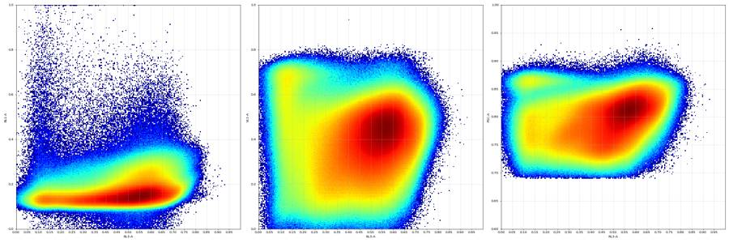
115
thinking
The dim NIR peak is the live population and the large peak is dead cells, so I'm finding the valley between them in each well.
116
tool call · Bash
cd /tmp/work && cat > valley.py <<'EOF'
import sys; sys.path.insert(0,'/tmp/work')
from common import *
from scipy.ndimage import gaussian_filter1d
S=np.load('singlets_data.npz')
bins=np.linspace(0,1,401); c=(bins[:-1]+bins[1:])/2
res=[]
for w in WELLS:
a=S[w]; r=lg(a[:,0]); v=lg(a[:,3])
h=np.histogram(r,bins)[0].astype(float); hs=gaussian_filter1d(h,3)
# dim peak in 0.05-0.17
i1=np.where((c>0.05)&(c<0.17))[0]; p1=i1[np.argmax(hs[i1])]
i2=np.where((c>c[p1])&(c<0.4))[0]; vmin=i2[np.argmin(hs[i2])]
# NCAM-high events (v>0.62) RL3 distribution
nh=r[v>0.62]
res.append((w,len(r),round(c[p1],3),round(c[vmin],3),round(hs[vmin]/hs[p1],2), np.round(np.percentile(nh,[50,90,95]),3).tolist(), round(100*np.mean(r<0.2),1), round(100*np.mean(r<0.25),1)))
for x in res: print(*x)
EOF
python3 -I valley.py117
tool output
A1 447396 0.169 0.171 1.01 [0.151, 0.571, 0.612] 7.8 11.1 A2 490508 0.124 0.226 0.7 [0.172, 0.587, 0.624] 4.9 6.5 A3 503450 0.134 0.189 0.8 [0.174, 0.565, 0.603] 5.4 8.0 A4 484019 0.129 0.209 0.86 [0.181, 0.597, 0.632] 4.7 6.5 A5 521226 0.129 0.191 0.77 [0.182, 0.571, 0.61] 4.9 6.9 A6 429214 0.126 0.184 0.79 [0.181, 0.581, 0.615] 4.0 5.6 A7 434975 0.126 0.189 0.78 [0.204, 0.634, 0.665] 4.9 6.8 A8 394475 0.144 0.204 0.84 [0.199, 0.605, 0.643] 5.2 7.5 A9 455890 0.136 0.166 0.93 [0.249, 0.636, 0.663] 6.7 9.7 A10 448300 0.141 0.201 0.78 [0.21, 0.616, 0.646] 5.6 7.8 A11 441776 0.141 0.176 0.91 [0.179, 0.586, 0.62] 6.3 9.8 A12 484829 0.146 0.161 0.99 [0.18, 0.559, 0.591] 5.6 9.2 B1 339893 0.129 0.184 0.74 [0.185, 0.596, 0.633] 7.7 10.7 B2 337546 0.126 0.209 0.73 [0.189, 0.61, 0.651] 7.2 9.8 B3 330625 0.134 0.196 0.8 [0.195, 0.628, 0.666] 4.9 6.7 B4 304167 0.151 0.209 0.86 [0.175, 0.602, 0.648] 6.4 9.2 B5 422539 0.141 0.169 0.98 [0.166, 0.56, 0.606] 7.2 10.7 B6 433978 0.169 0.171 1.01 [0.157, 0.519, 0.578] 7.9 12.5 B7 476460 0.159 0.181 0.97 [0.195, 0.621, 0.655] 3.1 4.6 B8 458524 0.144 0.169 0.98 [0.196, 0.608, 0.64] 3.4 5.5 B9 445025 0.149 0.181 0.93 [0.204, 0.624, 0.655] 3.7 5.7 B10 532739 0.169 0.171 1.01 [0.199, 0.596, 0.634] 3.4 5.5 B11 499151 0.164 0.176 0.99 [0.184, 0.58, 0.617] 3.5 5.7 B12 456931 0.136 0.184 0.93 [0.184, 0.588, 0.623] 3.2 4.9 C1 328558 0.146 0.211 0.83 [0.191, 0.613, 0.655] 2.2 3.2 C2 354280 0.149 0.196 0.89 [0.187, 0.596, 0.645] 2.9 4.3 C3 318645 0.146 0.206 0.85 [0.203, 0.631, 0.668] 4.2 5.9 C4 354062 0.156 0.196 0.91 [0.185, 0.599, 0.643] 3.0 4.5 C5 364931 0.141 0.179 0.93 [0.171, 0.572, 0.62] 2.7 4.1 C6 446773 0.141 0.176 0.91 [0.174, 0.558, 0.6] 2.7 4.3 C7 320781 0.146 0.224 0.86 [0.191, 0.608, 0.647] 3.2 4.6 C8 327106 0.161 0.209 0.89 [0.184, 0.574, 0.637] 3.7 5.3 C9 408669 0.156 0.196 0.88 [0.198, 0.6, 0.639] 4.0 6.2 C10 473496 0.156 0.191 0.92 [0.181, 0.572, 0.616] 3.9 6.1 C11 448647 0.149 0.204 0.86 [0.19, 0.585, 0.62] 3.5 5.2 C12 320019 0.139 0.214 0.7 [0.191, 0.58, 0.616] 3.0 4.1 D1 410673 0.141 0.176 0.89 [0.183, 0.572, 0.623] 3.4 5.5 D2 459573 0.169 0.171 1.0 [0.177, 0.553, 0.61] 3.6 5.9 D3 448710 0.146 0.164 0.98 [0.188, 0.581, 0.631] 4.8 8.0 D4 474145 0.151 0.179 0.94 [0.18, 0.562, 0.613] 3.7 6.0 D5 92511 0.169 0.206 0.95 [0.203, 0.663, 0.698] 1.9 3.0 D6 392035 0.169 0.184 0.99 [0.191, 0.586, 0.635] 1.8 2.8 Shell cwd was reset to /task
119
tool call · Bash
cd /tmp/work && cat > live3.py <<'EOF'
import sys; sys.path.insert(0,'/tmp/work')
from common import *
from scipy.ndimage import gaussian_filter1d
import matplotlib; matplotlib.use('Agg'); import matplotlib.pyplot as plt
from matplotlib.colors import LogNorm
S=np.load('singlets_data.npz')
fig,axs=plt.subplots(2,2,figsize=(22,14)); axs=axs.ravel()
Hs=None;
for w in WELLS:
a=S[w]; r=a[:,0]
h,b=np.histogram(r,bins=np.arange(-1000,6000,25)); axs[0].plot(b[:-1],gaussian_filter1d(h/len(r),2),lw=0.6)
h,b=np.histogram(np.arcsinh(r/150),bins=300,range=(-3,8)); axs[1].plot(b[:-1],gaussian_filter1d(h/len(r),2),lw=0.6)
hh,xe,ye=np.histogram2d(np.arcsinh(r/150),lg(a[:,3]),bins=250,range=[[-3,8],[0,1]]); Hs=hh if Hs is None else Hs+hh
axs[0].set_title('RL3-A linear (singlets)'); axs[0].grid(alpha=.4); axs[0].set_xticks(np.arange(-1000,6000,500))
axs[1].set_title('asinh(RL3-A/150)'); axs[1].grid(alpha=.4); axs[1].set_xticks(np.arange(-3,8,0.5))
axs[2].pcolormesh(xe,ye,Hs.T,norm=LogNorm(vmin=1),cmap='jet'); axs[2].set_xlabel('asinh(RL3/150)'); axs[2].set_ylabel('lgc VL1 (NCAM)'); axs[2].grid(alpha=.4); axs[2].set_xticks(np.arange(-3,8,0.5))
# asinh labels
t=np.array([-500,0,100,200,300,500,1000,2000,5000,1e4,1e5]); axs[3].plot(np.arcsinh(t/150),np.zeros_like(t),'o')
for ti in t: axs[3].text(np.arcsinh(ti/150),0.01,str(int(ti)),rotation=90)
plt.tight_layout(); plt.savefig('live3.png',dpi=45)
EOF
python3 -I live3.py120
tool call · Read
{
"file_path": "/tmp/work/live3.png"
}121
tool output
Shell cwd was reset to /task
122
tool output
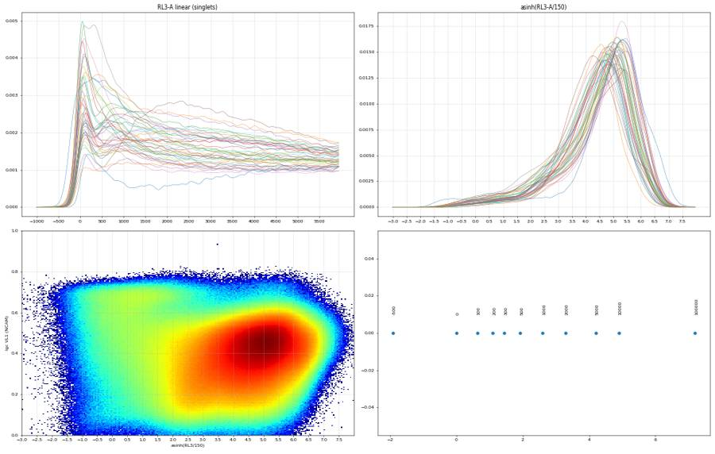
124
tool call · Bash
cd /tmp/work && cat > live4.py <<'EOF'
import sys; sys.path.insert(0,'/tmp/work')
from common import *
from scipy.ndimage import gaussian_filter1d
import matplotlib; matplotlib.use('Agg'); import matplotlib.pyplot as plt
S=np.load('singlets_data.npz')
bins=np.linspace(0,0.9,361); c=(bins[:-1]+bins[1:])/2
fig,axs=plt.subplots(7,6,figsize=(30,26)); axs=axs.ravel()
tot=np.zeros(360); totb=np.zeros(360)
for i,w in enumerate(WELLS):
a=S[w]; r=lg(a[:,0]); g=lg(a[:,1])
h=np.histogram(r,bins)[0]; tot+=h
hb=np.histogram(r[g>0.4],bins)[0]; totb+=hb
axs[i].plot(c,gaussian_filter1d(h.astype(float),2),lw=0.8); axs[i].set_yscale('log'); axs[i].set_title(w); axs[i].set_xticks(np.arange(0,0.9,0.05)); axs[i].grid(alpha=.4); axs[i].tick_params(labelsize=6)
ax2=axs[i].twinx(); ax2.plot(c,gaussian_filter1d(hb.astype(float),3),'r',lw=0.8)
plt.tight_layout(); plt.savefig('live4.png',dpi=40)
fig,ax=plt.subplots(figsize=(14,6)); ax.plot(c,tot); ax.set_yscale('log'); ax2=ax.twinx(); ax2.plot(c,totb,'r'); ax.set_xticks(np.arange(0,0.9,0.025)); ax.grid(alpha=.4); ax.tick_params(labelsize=7)
plt.tight_layout(); plt.savefig('live4_pooled.png',dpi=60)
EOF
python3 -I live4.py125
tool call · Read
{
"file_path": "/tmp/work/live4_pooled.png"
}126
tool output
Shell cwd was reset to /task
127
tool output
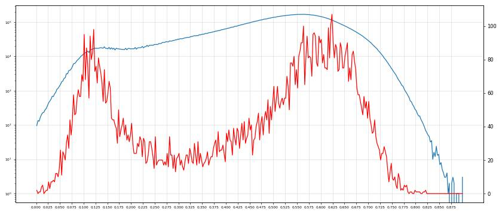
129
tool call · Read
{
"file_path": "/tmp/work/live4.png"
}130
tool output
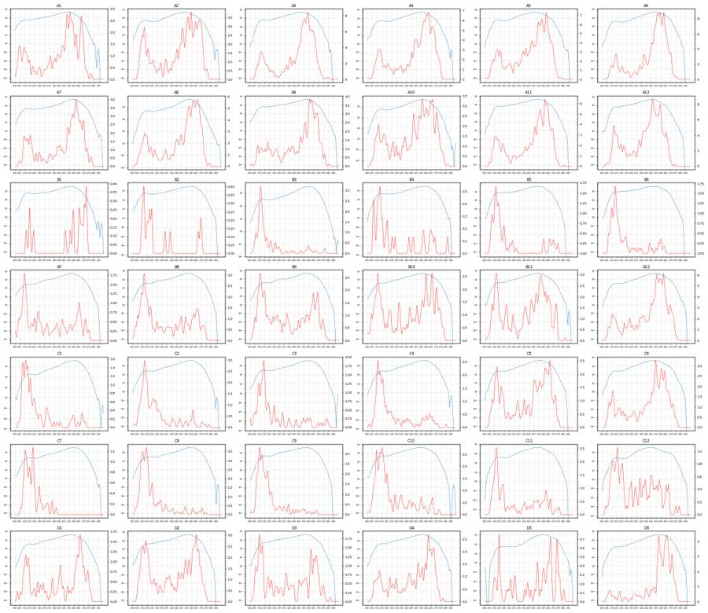
132
thinking
Live cut-off set at logicle 0.20 (about 340 raw), since the Zombie NIR valley sits at 0.16–0.23 across wells. Next I'm looking at GFP on the Live population.
133
tool call · Bash
cd /tmp/work && cat >> gates_def.py <<'EOF'
LIVE_MAX = 0.20
EOF
cat > gfp1.py <<'EOF'
import sys; sys.path.insert(0,'/tmp/work')
from common import *; import gates_def as G
from scipy.ndimage import gaussian_filter1d
import matplotlib; matplotlib.use('Agg'); import matplotlib.pyplot as plt
from matplotlib.colors import LogNorm
S=np.load('singlets_data.npz')
fig,axs=plt.subplots(7,6,figsize=(30,30)); axs=axs.ravel()
fig2,ax2=plt.subplots(figsize=(16,8))
bins=np.linspace(0,1,301); c=(bins[:-1]+bins[1:])/2
stats=[]
for i,w in enumerate(WELLS):
a=S[w]; r=lg(a[:,0]); m=r<G.LIVE_MAX
b=lg(a[m,1]); s=lg(a[m,2])
axs[i].hist2d(b,s,bins=150,range=[[0,1],[0.68,1.0]],norm=LogNorm(),cmap='jet'); axs[i].set_title(f'{w} n_live={m.sum()}'); axs[i].grid(alpha=.4); axs[i].set_xticks(np.arange(0,1,0.1))
h=np.histogram(b,bins)[0]; ax2.plot(c,gaussian_filter1d(h/h.sum(),1.5),lw=0.7,label=w)
stats.append((w,m.sum(),*[round(100*np.mean(b>t),2) for t in (0.3,0.35,0.4,0.45)]))
ax2.set_yscale('log'); ax2.set_xticks(np.arange(0,1,0.025)); ax2.grid(alpha=.4); ax2.tick_params(labelsize=7); ax2.legend(ncol=6,fontsize=6)
fig.tight_layout(); fig.savefig('gfp_live_grid.png',dpi=35); fig2.tight_layout(); fig2.savefig('gfp_hist.png',dpi=60)
for s in stats: print(*s)
EOF
python3 -I gfp1.py134
tool output
A1 34796 0.3 0.22 0.19 0.15 A2 24154 0.6 0.48 0.4 0.31 A3 27330 0.74 0.6 0.48 0.37 A4 22645 0.8 0.59 0.49 0.41 A5 25520 0.8 0.63 0.53 0.43 A6 16987 1.07 0.76 0.58 0.49 A7 21526 0.51 0.39 0.33 0.24 A8 20380 0.7 0.59 0.54 0.45 A9 30471 0.26 0.22 0.19 0.16 A10 24940 0.45 0.39 0.32 0.29 A11 27917 0.58 0.48 0.43 0.39 A12 27008 0.95 0.75 0.62 0.49 B1 26172 0.04 0.02 0.02 0.01 B2 24309 0.14 0.09 0.05 0.01 B3 16067 0.84 0.63 0.5 0.29 B4 19580 0.25 0.13 0.08 0.05 B5 30346 0.4 0.29 0.18 0.1 B6 34443 0.33 0.21 0.14 0.07 B7 14794 0.72 0.55 0.39 0.3 B8 15669 1.16 0.92 0.77 0.61 B9 16407 1.15 0.8 0.61 0.44 B10 18173 0.95 0.65 0.53 0.41 B11 17494 1.23 0.74 0.53 0.45 B12 14758 1.73 0.94 0.6 0.47 C1 7206 1.6 1.24 0.87 0.69 C2 10414 1.74 1.33 0.89 0.6 C3 13225 0.71 0.58 0.47 0.31 C4 10592 1.24 0.98 0.8 0.59 C5 9968 1.12 0.92 0.8 0.7 C6 11958 0.82 0.61 0.5 0.4 C7 10354 1.08 0.78 0.44 0.26 C8 12063 2.94 1.94 1.23 0.75 C9 16374 1.44 1.14 0.8 0.49 C10 18415 1.12 0.89 0.67 0.48 C11 15817 0.82 0.59 0.45 0.37 C12 9442 0.65 0.53 0.42 0.37 D1 14168 0.36 0.3 0.26 0.21 D2 16705 0.86 0.75 0.66 0.5 D3 21393 0.37 0.32 0.28 0.22 D4 17753 0.44 0.35 0.25 0.22 D5 1727 0.69 0.69 0.64 0.52 D6 6870 0.7 0.48 0.38 0.31 Shell cwd was reset to /task
136
tool call · Read
{
"file_path": "/tmp/work/gfp_hist.png"
}137
tool output
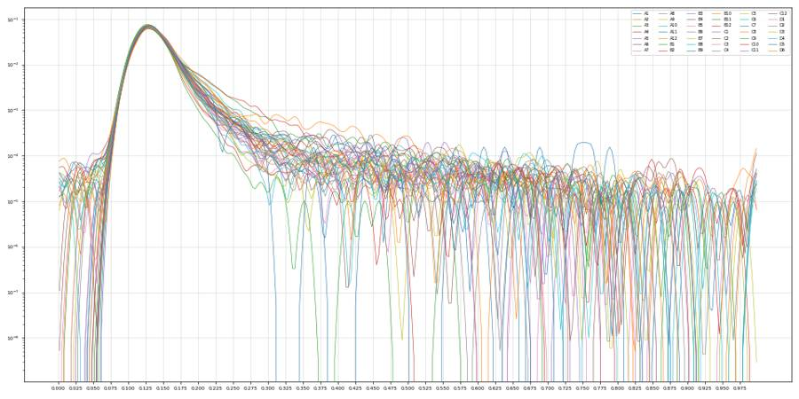
138
tool call · Read
{
"file_path": "/tmp/work/gfp_live_grid.png"
}139
tool output
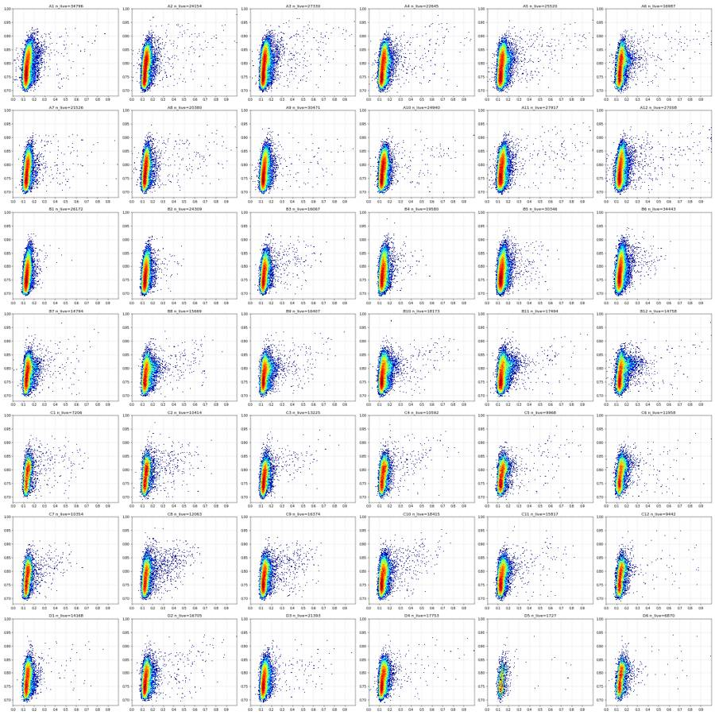
141
tool call · Bash
cd /tmp/work && cat > gfp2.py <<'EOF'
import sys; sys.path.insert(0,'/tmp/work')
from common import *; import gates_def as G
S=np.load('singlets_data.npz')
for w in ['B1','B2','B4','B6','B5','A9','A1','D1']:
a=S[w]; r=lg(a[:,0]); m=r<G.LIVE_MAX; braw=a[m,1]; b=lg(braw)
q=[50,90,99,99.5,99.8,99.9,99.95]
print(w, m.sum(), 'lgc pct', dict(zip(q,np.round(np.percentile(b,q),3))), 'raw', np.round(np.percentile(braw,q)).astype(int).tolist(), 'max', round(b.max(),3))
print(' counts above', {t: int((b>t).sum()) for t in (0.2,0.22,0.24,0.25,0.26,0.28,0.30,0.35)})
EOF
python3 -I gfp2.py; python3 -I -c "
import sys; sys.path.insert(0,'/tmp/work')
from common import *
v=np.array([0.2,0.22,0.24,0.25,0.26,0.28,0.3]); print(list(zip(v, ilg(v).astype(int))))"142
tool output
B1 26172 lgc pct {50: 0.13, 90: 0.155, 99: 0.19, 99.5: 0.204, 99.8: 0.228, 99.9: 0.248, 99.95: 0.277} raw [66, 160, 299, 360, 474, 582, 770] max 0.554
counts above {0.2: 164, 0.22: 67, 0.24: 34, 0.25: 24, 0.26: 18, 0.28: 13, 0.3: 10, 0.35: 5}
B2 24309 lgc pct {50: 0.131, 90: 0.157, 99: 0.202, 99.5: 0.222, 99.8: 0.262, 99.9: 0.334, 99.95: 0.383} raw [72, 167, 348, 442, 670, 1296, 2031] max 0.487
counts above {0.2: 256, 0.22: 131, 0.24: 71, 0.25: 61, 0.26: 52, 0.28: 43, 0.3: 35, 0.35: 22}
B4 19580 lgc pct {50: 0.133, 90: 0.163, 99: 0.22, 99.5: 0.249, 99.8: 0.315, 99.9: 0.384, 99.95: 0.436} raw [80, 190, 433, 586, 1095, 2058, 3367] max 0.579
counts above {0.2: 370, 0.22: 198, 0.24: 118, 0.25: 94, 0.26: 79, 0.28: 57, 0.3: 49, 0.35: 26}
B6 34443 lgc pct {50: 0.131, 90: 0.162, 99: 0.228, 99.5: 0.265, 99.8: 0.357, 99.9: 0.427, 99.95: 0.468} raw [72, 185, 473, 688, 1605, 3066, 4557] max 0.65
counts above {0.2: 751, 0.22: 431, 0.24: 271, 0.25: 230, 0.26: 189, 0.28: 136, 0.3: 112, 0.35: 74}
B5 30346 lgc pct {50: 0.133, 90: 0.164, 99: 0.235, 99.5: 0.276, 99.8: 0.39, 99.9: 0.447, 99.95: 0.508} raw [78, 195, 511, 761, 2172, 3743, 6733] max 0.679
counts above {0.2: 769, 0.22: 429, 0.24: 271, 0.25: 220, 0.26: 190, 0.28: 147, 0.3: 122, 0.35: 88}
A9 30471 lgc pct {50: 0.131, 90: 0.158, 99: 0.21, 99.5: 0.238, 99.8: 0.38, 99.9: 0.602, 99.95: 0.69} raw [70, 171, 383, 523, 1979, 17338, 42702] max 0.977
counts above {0.2: 409, 0.22: 227, 0.24: 146, 0.25: 123, 0.26: 107, 0.28: 90, 0.3: 80, 0.35: 68}
A1 34796 lgc pct {50: 0.131, 90: 0.164, 99: 0.237, 99.5: 0.268, 99.8: 0.365, 99.9: 0.502, 99.95: 0.643} raw [70, 192, 520, 708, 1730, 6368, 26217] max 0.869
counts above {0.2: 897, 0.22: 525, 0.24: 323, 0.25: 246, 0.26: 206, 0.28: 143, 0.3: 105, 0.35: 76}
D1 14168 lgc pct {50: 0.133, 90: 0.165, 99: 0.227, 99.5: 0.262, 99.8: 0.456, 99.9: 0.568, 99.95: 0.648} raw [80, 198, 467, 667, 4054, 12254, 27849] max 0.856
counts above {0.2: 340, 0.22: 169, 0.24: 110, 0.25: 95, 0.26: 74, 0.28: 56, 0.3: 51, 0.35: 42}
[(0.2, 340), (0.22, 432), (0.24, 536), (0.25, 593), (0.26, 654), (0.28, 791), (0.3, 952)]
Shell cwd was reset to /task144
tool call · Bash
cd /tmp/work && cat > gfp3.py <<'EOF'
import sys; sys.path.insert(0,'/tmp/work')
from common import *; import gates_def as G
import matplotlib; matplotlib.use('Agg'); import matplotlib.pyplot as plt
from matplotlib.colors import LogNorm
S=np.load('singlets_data.npz')
ws=['B1','B2','B4','B6']
fig,axs=plt.subplots(2,4,figsize=(26,11))
bins=np.linspace(0,0.6,241); c=(bins[:-1]+bins[1:])/2
for i,w in enumerate(ws):
a=S[w]; r=lg(a[:,0]); m=r<G.LIVE_MAX; b=lg(a[m,1]); s=lg(a[m,2])
h=np.histogram(b,bins)[0]
axs[0,i].step(c,h,where='mid'); axs[0,i].set_yscale('log'); axs[0,i].set_xticks(np.arange(0,0.6,0.025)); axs[0,i].tick_params(labelsize=7); axs[0,i].grid(alpha=.4); axs[0,i].set_title(w)
# gaussian fit on core
core=(b>0.08)&(b<0.17); mu=np.median(b); sd=1.4826*np.median(np.abs(b-mu))
g=len(b)*(bins[1]-bins[0])*np.exp(-0.5*((c-mu)/sd)**2)/(sd*np.sqrt(2*np.pi)); axs[0,i].plot(c,g,'r--')
axs[0,i].set_ylim(0.5,None)
axs[1,i].hist2d(b,s,bins=[200,150],range=[[0,0.6],[0.68,1.0]],norm=LogNorm(),cmap='jet'); axs[1,i].grid(alpha=.4); axs[1,i].set_xticks(np.arange(0,0.6,0.05))
print(w,'mu',round(mu,3),'robust sd',round(sd,3),'mu+3sd',round(mu+3*sd,3),'mu+4sd',round(mu+4*sd,3))
plt.tight_layout(); plt.savefig('gfp3.png',dpi=50)
EOF
python3 -I gfp3.py145
tool call · Read
{
"file_path": "/tmp/work/gfp3.png"
}146
tool output
B1 mu 0.13 robust sd 0.017 mu+3sd 0.181 mu+4sd 0.198 B2 mu 0.131 robust sd 0.017 mu+3sd 0.183 mu+4sd 0.201 B4 mu 0.133 robust sd 0.019 mu+3sd 0.19 mu+4sd 0.209 B6 mu 0.131 robust sd 0.019 mu+3sd 0.188 mu+4sd 0.206 Shell cwd was reset to /task
147
tool output
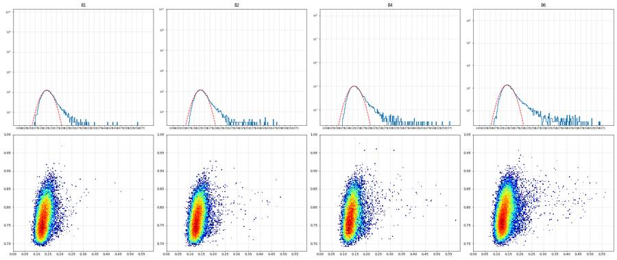
149
thinking
The GFP-negative Live population in B1 ends around logicle 0.25, so I'll set GFP_pos at ≥0.25 (about 593 raw). Next I'm building the FlowKit strategy and gating every file.
150
tool call · Bash
cd /tmp/work && cat >> gates_def.py <<'EOF'
GFP_MIN = 0.25
EOF
cat > build_and_gate.py <<'EOF'
import sys; sys.path.insert(0,'/tmp/work')
import flowkit as fk, numpy as np, pandas as pd, os, time
import gates_def as G
LAY = pd.read_csv('/task/inputs/plate_layout.csv')
OUT='/task/outputs'
gs = fk.GatingStrategy()
gs.add_transform('logicle', fk.transforms.LogicleTransform(param_t=1048576, param_w=0.5, param_m=4.5, param_a=0))
def D(ch, **kw): return fk.Dimension(ch, compensation_ref='uncompensated', transformation_ref='logicle', **kw)
cells = fk.gates.PolygonGate('Cells', [D('FSC-A'), D('SSC-A')], [list(v) for v in G.CELLS])
gs.add_gate(cells, gate_path=('root',))
sing = fk.gates.PolygonGate('Singlets', [D('SSC-H'), D('SSC-A')], [list(v) for v in G.SINGLETS])
gs.add_gate(sing, gate_path=('root','Cells'))
live = fk.gates.RectangleGate('Live', [D('RL3-A', range_max=G.LIVE_MAX)])
gs.add_gate(live, gate_path=('root','Cells','Singlets'))
gfp = fk.gates.RectangleGate('GFP_pos', [D('BL1-A', range_min=G.GFP_MIN)])
gs.add_gate(gfp, gate_path=('root','Cells','Singlets','Live'))
with open(f'{OUT}/gates.xml','wb') as fh: fk.export_gatingml(gs, fh)
gs2 = fk.parse_gating_xml(f'{OUT}/gates.xml')
print(gs2.get_gate_hierarchy(output='ascii'))
POPS=[('Cells','all_events',('root',)),('Singlets','Cells',('root','Cells')),('Live','Singlets',('root','Cells','Singlets')),('GFP_pos','Live',('root','Cells','Singlets','Live'))]
rows=[]
for fn, well in zip(LAY.file, LAY.well):
t0=time.time()
s = fk.Sample(os.path.join('/task/inputs/raw', fn))
res = gs2.gate_sample(s)
tot = s.event_count
cnt={'all_events':tot}
for pop,parent,path in POPS:
c = int(res.get_gate_membership(pop, gate_path=path).sum())
cnt[pop]=c
rows.append(dict(file=fn, well=well, population=pop, count=c, parent_population=parent, pct_of_parent=(100.0*c/cnt[parent] if cnt[parent]>0 else 0.0)))
print(well, tot, [cnt[p] for p,_,_ in POPS], round(time.time()-t0,1), flush=True)
df=pd.DataFrame(rows)
df.to_csv(f'{OUT}/counts.csv', index=False)
EOF
python3 -I build_and_gate.py 2>&1 | grep -v Warning151
tool output
root
╰── Cells
╰── Singlets
╰── Live
╰── GFP_pos
A1 978726 [713552, 447396, 34796, 246] 0.6
A2 935707 [661522, 490508, 24154, 216] 0.6
A3 925910 [664050, 503450, 27330, 373] 0.6
A4 892332 [643872, 484019, 22645, 299] 0.6
A5 986514 [704216, 521226, 25520, 358] 0.6
A6 755396 [544630, 429214, 16987, 321] 0.5
A7 848859 [585259, 434975, 21526, 145] 0.6
A8 710140 [504521, 394475, 20380, 196] 0.4
A9 958681 [648516, 455890, 30471, 123] 0.6
A10 870505 [606525, 448300, 24940, 146] 0.6
A11 844586 [574848, 441776, 27917, 245] 0.6
A12 947510 [650273, 484829, 27008, 377] 0.7
B1 733754 [465049, 339893, 26172, 24] 0.5
B2 728886 [460450, 337546, 24309, 61] 0.5
B3 667298 [427696, 330625, 16067, 178] 0.5
B4 598212 [380255, 304167, 19580, 94] 0.4
B5 837561 [556689, 422539, 30346, 220] 0.6
B6 877336 [580514, 433978, 34443, 230] 0.5
B7 954909 [649174, 476460, 14794, 193] 0.6
B8 918778 [615968, 458524, 15669, 321] 0.6
B9 862070 [590463, 445025, 16407, 300] 0.5
B10 1083648 [736469, 532739, 18173, 332] 0.7
B11 988574 [667736, 499151, 17494, 484] 0.6
B12 904103 [604738, 456931, 14758, 537] 0.6
C1 624718 [399138, 328558, 7206, 150] 0.4
C2 695572 [443600, 354280, 10414, 230] 0.4
C3 656321 [410498, 318645, 13225, 129] 0.4
C4 679504 [444866, 354062, 10592, 166] 0.4
C5 689593 [452398, 364931, 9968, 162] 0.4
C6 891011 [586425, 446773, 11958, 166] 0.6
C7 649735 [399871, 320781, 10354, 165] 0.4
C8 639518 [406202, 327106, 12063, 479] 0.4
C9 801299 [534100, 408669, 16374, 325] 0.5
C10 927162 [631895, 473496, 18415, 288] 0.6
C11 868685 [589185, 448647, 15817, 205] 0.5
C12 578214 [387626, 320019, 9442, 95] 0.4
D1 800840 [528233, 410673, 14168, 95] 0.6
D2 894591 [602140, 459573, 16705, 201] 0.6
D3 915097 [609532, 448710, 21393, 113] 0.7
D4 925805 [633766, 474145, 17753, 121] 0.6
D5 153195 [98562, 92511, 1727, 22] 0.1
D6 726651 [483949, 392035, 6870, 86] 0.5
Shell cwd was reset to /task153
thinking
FlowKit's counts agree with my numpy check, and gates.xml round-trips cleanly. I'm now checking for duplicate events across files, since three wells have out-of-order blocks at the start.
154
tool call · Bash
cd /tmp/work && cat > dups.py <<'EOF'
import sys; sys.path.insert(0,'/tmp/work')
from common import *
import collections
keys={}
for w in WELLS:
ev,names=load(w)
v=np.ascontiguousarray(ev[:,1:6]).view(np.dtype((np.void, 20))).ravel()
keys[w]=v
allk=np.concatenate([keys[w] for w in WELLS]); lab=np.concatenate([[i]*len(keys[w]) for i,w in enumerate(WELLS)])
u,inv,cnt=np.unique(allk,return_inverse=True,return_counts=True)
dup=cnt[inv]>1
print('total dup events', dup.sum())
for i,w in enumerate(WELLS):
m=dup[lab==i]
if m.sum():
# partner wells
idx=np.where(lab==i)[0][m]
partners=collections.Counter()
for k in inv[idx][:2000]:
ws=set(lab[inv==k]) if False else None
print(w, int(m.sum()), 'first dup idx', np.where(m)[0][:5])
EOF
python3 -I dups.py155
tool output
total dup events 0 Shell cwd was reset to /task
157
tool call · Bash
cd /tmp/work && cat > seg2.py <<'EOF'
import sys; sys.path.insert(0,'/tmp/work')
from gatelib import *
from scipy.stats import ks_2samp
for w in ['C6','C11','D4']:
ev,names=load(w); t=ev[:,0]
j=np.where(np.diff(t)<0)[0][0]+1
lo,hi=t[:j].min(),t[:j].max()
idx2=np.arange(len(t))>=j
win=idx2&(t>=lo)&(t<=hi)
early=idx2&(t<lo)
sm=singlets_mask(ev,names); live=sm&(lg(ev[:,names.index('RL3-A')])<G.LIVE_MAX); gfp=live&(lg(ev[:,names.index('BL1-A')])>=G.GFP_MIN)
s1=np.arange(len(t))<j
for nm,m in [('seg1',s1),('seg2 same window',win),('seg2 before window',early),('seg2 all',idx2)]:
print(w,nm,'n',m.sum(),'cells%',round(100*cells_mask(ev[m],names).mean(),1),'sing',sm[m].sum(),'live',live[m].sum(),'gfp',gfp[m].sum(),'live%sing',round(100*live[m].sum()/max(sm[m].sum(),1),2))
for ch in ['FSC-A','SSC-A','RL3-A','BL1-A','VL1-A']:
k=names.index(ch); print(' KS',ch, 'seg1 vs window p=%.3g'%ks_2samp(ev[s1,k],ev[win,k]).pvalue, ' seg1 vs before p=%.3g'%ks_2samp(ev[s1,k],ev[early,k]).pvalue, ' window vs before p=%.3g'%ks_2samp(ev[win,k],ev[early,k]).pvalue)
print(' seg1 time range',lo,hi)
EOF
python3 -I seg2.py158
tool output
C6 seg1 n 4443 cells% 63.1 sing 2341 live 86 gfp 2 live%sing 3.67 C6 seg2 same window n 5215 cells% 63.7 sing 2625 live 90 gfp 1 live%sing 3.43 C6 seg2 before window n 29522 cells% 64.7 sing 15668 live 431 gfp 8 live%sing 2.75 C6 seg2 all n 886568 cells% 65.8 sing 444432 live 11872 gfp 164 live%sing 2.67 KS FSC-A seg1 vs window p=0.0103 seg1 vs before p=0.00407 window vs before p=0.266 KS SSC-A seg1 vs window p=0.00276 seg1 vs before p=2.11e-05 window vs before p=0.304 KS RL3-A seg1 vs window p=0.137 seg1 vs before p=0.000774 window vs before p=0.424 KS BL1-A seg1 vs window p=0.00432 seg1 vs before p=0.000326 window vs before p=0.56 KS VL1-A seg1 vs window p=7.78e-06 seg1 vs before p=4.94e-05 window vs before p=0.202 seg1 time range 3350.0 3894.0 C11 seg1 n 4103 cells% 64.2 sing 2211 live 80 gfp 0 live%sing 3.62 C11 seg2 same window n 4963 cells% 65.4 sing 2629 live 95 gfp 1 live%sing 3.61 C11 seg2 before window n 26956 cells% 65.8 sing 14664 live 544 gfp 8 live%sing 3.71 C11 seg2 all n 864582 cells% 67.8 sing 446436 live 15737 gfp 205 live%sing 3.53 KS FSC-A seg1 vs window p=0.0925 seg1 vs before p=0.0115 window vs before p=0.549 KS SSC-A seg1 vs window p=0.00191 seg1 vs before p=0.00153 window vs before p=0.368 KS RL3-A seg1 vs window p=0.0116 seg1 vs before p=0.0106 window vs before p=0.535 KS BL1-A seg1 vs window p=0.0573 seg1 vs before p=0.149 window vs before p=0.408 KS VL1-A seg1 vs window p=0.000119 seg1 vs before p=0.00133 window vs before p=0.0457 seg1 time range 3345.0 3896.0 D4 seg1 n 4084 cells% 64.7 sing 2180 live 90 gfp 0 live%sing 4.13 D4 seg2 same window n 5042 cells% 66.5 sing 2709 live 129 gfp 0 live%sing 4.76 D4 seg2 before window n 27285 cells% 65.9 sing 14715 live 614 gfp 6 live%sing 4.17 D4 seg2 all n 921721 cells% 68.5 sing 471965 live 17663 gfp 121 live%sing 3.74 KS FSC-A seg1 vs window p=0.0676 seg1 vs before p=0.379 window vs before p=0.415 KS SSC-A seg1 vs window p=0.00657 seg1 vs before p=0.0152 window vs before p=0.205 KS RL3-A seg1 vs window p=0.0993 seg1 vs before p=0.0431 window vs before p=0.701 KS BL1-A seg1 vs window p=0.119 seg1 vs before p=0.646 window vs before p=0.294 KS VL1-A seg1 vs window p=0.000764 seg1 vs before p=0.00368 window vs before p=0.0449 seg1 time range 3292.0 3836.0 Shell cwd was reset to /task
160
thinking
The out-of-order block in C6, C11 and D4 is under 0.5% of events and matches the rest of each file, so I'm keeping those wells in. I'm checking end-of-run rate drops for wells that may have run dry next.
161
tool call · Bash
cd /tmp/work && cat > endrun.py <<'EOF'
import sys; sys.path.insert(0,'/tmp/work')
from common import *
import matplotlib; matplotlib.use('Agg'); import matplotlib.pyplot as plt
fig,axs=plt.subplots(7,6,figsize=(24,20)); axs=axs.ravel()
rows=[]
for i,w in enumerate(WELLS):
ev,names=load(w); t=ev[:,0]/1000
T=t.max(); bins=np.arange(T-15, T+1e-6, 0.25); c,_=np.histogram(t,bins); r=c/0.25
med=np.median(np.histogram(t,np.arange(10,min(80,T-10),1.0))[0])
axs[i].plot(bins[:-1]-T, r/med, lw=0.8); axs[i].axhline(0.5,color='r',lw=0.5); axs[i].set_ylim(0,1.6); axs[i].set_title(w)
# find time from end at which rate (1s window) stays below 70% of median
b1=np.arange(0, T+1e-6, 0.5); c1,_=np.histogram(t,b1); r1=c1/0.5/med
below=r1<0.7
# last contiguous run of below at end
k=len(r1)-1
while k>=0 and below[k]: k-=1
dur_low=(len(r1)-1-k)*0.5
ev_low=(t>b1[k+1]).sum() if dur_low>0 else 0
last1=(t>T-1).sum()/med; last2=(t>T-2).sum()/2/med; last5=(t>T-5).sum()/5/med
# scatter in last 2 s vs middle
fsc=ev[:,names.index('FSC-A')]; mid=(t>20)&(t<80); end=t>T-2
rows.append((w, int(med), round(T,1), round(last1,2), round(last2,2), round(last5,2), dur_low, int(ev_low), int(np.median(fsc[mid])), int(np.median(fsc[end]))))
plt.tight_layout(); plt.savefig('endrun.png',dpi=50)
print('well med_rate/s Tend last1s last2s last5s(rel) dur_below70%_at_end events_in_low medFSC_mid medFSC_last2s')
for r in rows: print(*r)
EOF
python3 -I endrun.py162
tool output
well med_rate/s Tend last1s last2s last5s(rel) dur_below70%_at_end events_in_low medFSC_mid medFSC_last2s A1 21595 46.2 0.96 0.91 0.89 0.0 0 131606 125168 A2 9752 97.9 0.73 0.76 0.85 1.0 10137 123648 107527 A3 9758 97.7 0.61 0.63 0.77 2.0 13342 122052 106810 A4 9366 97.7 0.92 0.89 0.88 0.0 0 126851 121085 A5 10308 97.9 0.96 0.95 0.88 0.0 0 123666 121425 A6 8012 97.1 0.91 0.91 0.86 0.0 0 125401 120254 A7 8884 97.9 0.95 0.88 0.87 0.0 0 120001 112334 A8 7404 97.9 0.88 0.92 0.88 0.0 0 122951 117785 A9 10028 97.8 0.92 0.93 0.88 0.0 0 118251 112215 A10 9246 97.7 0.56 0.6 0.73 2.0 12436 120026 98202 A11 8794 97.9 1.02 1.0 0.93 0.0 0 113497 110416 A12 9879 97.9 0.52 0.57 0.75 2.5 17291 118091 90917 B1 7654 97.9 1.04 1.03 0.97 0.0 0 108384 101776 B2 7517 97.9 0.97 1.01 0.97 0.0 0 111676 104487 B3 6965 97.9 0.98 0.96 0.91 0.0 0 109589 102610 B4 6310 97.9 0.47 0.51 0.66 2.5 9962 109325 76957 B5 8832 97.9 0.53 0.58 0.69 2.5 15481 115475 86122 B6 9107 97.8 0.45 0.53 0.66 2.5 14526 107090 86320 B7 10464 97.9 0.89 0.89 0.85 0.0 0 110205 109080 B8 10028 97.8 0.54 0.58 0.7 2.5 16629 116612 86378 B9 8862 98.0 0.97 1.04 0.98 0.0 0 117421 118108 B10 11448 97.8 0.49 0.55 0.67 2.5 18293 116981 83288 B11 10390 97.9 0.54 0.61 0.72 3.0 22683 116349 86721 B12 9434 97.8 0.85 0.91 0.94 0.0 0 115358 109721 C1 6467 97.8 1.05 1.0 0.96 0.0 0 104477 99934 C2 7416 97.8 0.45 0.51 0.62 3.0 13540 106105 72277 C3 7009 97.7 0.29 0.35 0.51 4.5 16528 107049 57947 C4 7222 97.8 0.39 0.44 0.57 3.5 14292 109007 73008 C5 7161 97.9 1.02 1.0 0.97 0.0 0 108892 104830 C6 9349 97.6 0.47 0.54 0.65 3.0 16688 110250 77073 C7 6684 97.9 0.88 0.95 1.01 0.0 0 94874 100784 C8 6667 97.9 1.0 0.99 0.95 0.0 0 102973 99459 C9 8305 97.9 0.91 0.94 0.96 0.0 0 109826 106396 C10 9797 97.5 0.52 0.51 0.6 4.0 25763 114010 70189 C11 9070 97.5 0.9 0.85 0.87 0.0 0 112626 104270 C12 6059 97.8 0.76 0.87 0.94 0.0 0 106120 101443 D1 8345 97.9 0.85 0.84 0.88 0.0 0 106041 95251 D2 9315 97.9 0.8 0.78 0.85 0.0 0 113640 103254 D3 9536 97.7 0.93 0.92 0.9 0.0 0 110619 97937 D4 9603 97.5 0.88 0.88 0.88 0.0 0 114165 103876 D5 1614 97.8 0.84 0.85 0.84 0.0 0 100760 90028 D6 7594 97.9 0.87 0.85 0.87 0.0 0 110361 99038 Shell cwd was reset to /task
163
tool call · Read
{
"file_path": "/tmp/work/endrun.png"
}164
tool output
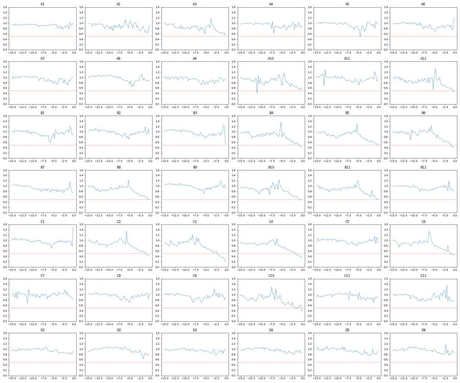
166
tool call · Bash
cd /tmp/work && cat > seg_stab.py <<'EOF'
import sys; sys.path.insert(0,'/tmp/work')
from gatelib import *
rows=[]
for w in WELLS:
ev,names=load(w); t=ev[:,0]/1000; T=t.max()
c=cells_mask(ev,names); s=c&inpoly(lg(ev[:,names.index('SSC-H')]),lg(ev[:,names.index('SSC-A')]),G.SINGLETS)
l=s&(lg(ev[:,names.index('RL3-A')])<G.LIVE_MAX); g=l&(lg(ev[:,names.index('BL1-A')])>=G.GFP_MIN)
edges=np.linspace(0,T+1e-6,11)
seg=np.digitize(t,edges)-1
cp=[100*c[seg==k].mean() for k in range(10)]; lp=[100*l[seg==k].sum()/max(s[seg==k].sum(),1) for k in range(10)]
gp=[100*g[seg==k].sum()/max(l[seg==k].sum(),1) for k in range(10)]
endm=t>T-3; midm=(t>0.2*T)&(t<0.8*T)
rows.append((w,' '.join('%.0f'%x for x in cp),' | ',' '.join('%.1f'%x for x in lp),' | ',' '.join('%.2f'%x for x in gp),' | end3s cells%% %.1f vs mid %.1f; live%%sing %.2f vs %.2f; live n end %d'%(100*c[endm].mean(),100*c[midm].mean(),100*l[endm].sum()/max(s[endm].sum(),1),100*l[midm].sum()/s[midm].sum(), l[endm].sum())))
for r in rows: print(*r)
EOF
python3 -I seg_stab.py167
tool output
A1 71 72 72 73 74 74 74 74 73 72 | 7.9 7.8 7.9 7.7 7.8 7.7 8.0 7.8 7.5 7.6 | 0.46 0.74 0.79 0.51 0.79 0.97 1.04 0.59 0.75 0.41 | end3s cells% 71.2 vs mid 73.6; live%sing 7.76 vs 7.81; live n end 2027 A2 69 68 70 71 72 72 72 71 72 69 | 5.3 5.1 5.0 4.7 4.6 4.9 4.7 5.1 4.7 5.2 | 0.73 0.95 0.52 1.01 0.94 1.12 0.90 0.91 1.02 0.88 | end3s cells% 66.6 vs mid 71.6; live%sing 5.29 vs 4.82; live n end 634 A3 70 69 71 72 73 73 73 72 73 70 | 5.7 5.5 5.5 5.3 5.3 5.3 5.3 5.3 5.5 5.6 | 1.30 1.41 1.22 1.27 1.56 1.52 1.28 1.25 1.60 1.22 | end3s cells% 68.4 vs mid 72.6; live%sing 5.65 vs 5.33; live n end 618 A4 69 70 71 73 74 74 73 73 73 71 | 5.1 4.8 4.7 4.5 4.5 4.6 4.7 4.8 4.5 4.7 | 1.47 1.42 1.06 1.46 1.41 1.33 1.02 1.58 1.31 1.11 | end3s cells% 69.7 vs mid 73.0; live%sing 4.78 vs 4.62; live n end 643 A5 70 69 70 71 73 73 72 72 72 71 | 5.2 5.2 5.0 4.8 4.7 4.8 4.8 4.8 4.7 4.9 | 1.15 1.39 1.22 1.41 1.73 1.70 1.55 1.15 1.32 1.45 | end3s cells% 70.5 vs mid 72.0; live%sing 5.30 vs 4.83; live n end 816 A6 70 70 71 72 74 74 73 73 73 71 | 4.1 4.1 3.9 3.8 3.8 4.0 4.0 3.9 3.9 4.1 | 1.95 1.91 1.56 1.88 1.71 1.68 2.31 2.32 1.43 2.23 | end3s cells% 69.9 vs mid 72.9; live%sing 4.17 vs 3.89; live n end 493 A7 66 66 68 70 70 71 70 70 70 68 | 5.2 5.2 5.0 4.7 4.6 4.9 5.1 4.9 4.8 5.0 | 0.64 0.61 0.58 0.66 0.63 0.61 0.85 0.59 0.79 0.79 | end3s cells% 66.6 vs mid 69.8; live%sing 5.36 vs 4.88; live n end 633 A8 66 68 70 71 73 73 73 72 72 71 | 5.3 5.4 5.0 5.0 4.9 5.1 5.2 5.3 5.1 5.3 | 0.57 0.90 0.88 0.84 1.02 1.05 1.11 1.43 0.84 0.97 | end3s cells% 69.6 vs mid 72.1; live%sing 5.51 vs 5.09; live n end 624 A9 65 65 67 68 69 70 69 68 68 67 | 7.1 7.0 6.7 6.4 6.4 6.9 6.6 6.7 6.5 6.6 | 0.47 0.32 0.47 0.40 0.36 0.37 0.56 0.24 0.48 0.37 | end3s cells% 65.8 vs mid 68.4; live%sing 6.90 vs 6.62; live n end 860 A10 68 67 69 70 72 72 71 70 71 67 | 6.1 5.7 5.6 5.3 5.4 5.4 5.5 5.4 5.5 5.8 | 0.69 0.67 0.76 0.49 0.52 0.42 0.47 0.86 0.46 0.47 | end3s cells% 64.0 vs mid 70.6; live%sing 5.72 vs 5.42; live n end 533 A11 66 65 67 68 70 70 69 69 69 67 | 6.7 6.5 6.4 6.1 6.2 6.3 6.2 6.2 6.1 6.5 | 0.91 1.20 0.83 0.90 0.88 0.67 0.73 0.88 1.09 0.67 | end3s cells% 66.8 vs mid 68.9; live%sing 6.81 vs 6.22; live n end 902 A12 68 66 68 69 71 70 70 69 69 66 | 5.9 5.7 5.6 5.4 5.4 5.5 5.4 5.3 5.6 5.7 | 1.08 1.40 1.21 1.79 1.19 1.37 1.19 1.96 1.61 1.21 | end3s cells% 61.7 vs mid 69.5; live%sing 5.85 vs 5.45; live n end 545 B1 60 60 62 64 65 66 65 64 65 62 | 8.6 8.3 7.9 7.3 7.5 7.8 7.3 7.6 7.1 7.7 | 0.03 0.18 0.07 0.12 0.15 0.04 0.08 0.04 0.04 0.16 | end3s cells% 62.4 vs mid 64.4; live%sing 7.95 vs 7.57; live n end 846 B2 60 59 62 64 65 66 65 64 64 62 | 7.9 7.7 7.5 6.8 6.9 7.1 7.0 7.1 6.9 7.1 | 0.29 0.31 0.23 0.25 0.12 0.08 0.23 0.17 0.44 0.36 | end3s cells% 62.0 vs mid 64.5; live%sing 7.23 vs 7.08; live n end 739 B3 61 60 63 64 66 67 66 65 66 63 | 5.2 5.0 4.9 4.7 4.8 4.9 4.7 4.9 4.7 4.9 | 1.29 0.85 0.84 1.12 1.39 0.85 0.77 1.23 1.26 1.46 | end3s cells% 62.5 vs mid 65.1; live%sing 4.95 vs 4.82; live n end 468 B4 61 60 63 64 66 66 66 64 64 60 | 7.1 6.4 6.5 6.4 6.4 6.4 6.2 6.3 6.3 6.6 | 0.26 0.20 0.62 0.40 0.65 0.68 0.38 0.57 0.41 0.68 | end3s cells% 54.6 vs mid 64.8; live%sing 6.60 vs 6.34; live n end 340 B5 64 63 66 68 68 69 68 68 67 63 | 7.7 7.5 7.0 7.0 6.8 7.0 7.1 7.1 7.0 7.8 | 0.70 0.60 0.91 0.89 0.67 0.68 0.44 0.92 0.64 0.80 | end3s cells% 59.1 vs mid 67.8; live%sing 6.97 vs 7.00; live n end 566 B6 64 64 66 67 66 66 65 69 69 66 | 8.7 8.4 8.1 7.5 7.7 7.8 7.9 7.4 7.9 8.1 | 0.69 0.85 0.68 0.64 0.54 0.47 0.86 0.88 0.53 0.53 | end3s cells% 60.1 vs mid 66.5; live%sing 7.34 vs 7.71; live n end 591 B7 64 69 67 67 69 69 70 68 69 66 | 3.6 3.4 3.3 3.2 3.0 3.0 3.0 2.9 2.8 2.7 | 0.90 1.03 1.66 1.51 1.01 1.44 1.00 1.21 1.72 1.29 | end3s cells% 67.7 vs mid 68.2; live%sing 2.58 vs 3.10; live n end 343 B8 61 66 66 68 70 69 69 68 68 64 | 3.6 3.6 3.5 3.2 3.2 3.4 3.2 3.4 3.4 3.6 | 1.81 1.64 2.23 2.11 1.67 1.78 2.17 2.94 2.32 1.82 | end3s cells% 59.0 vs mid 68.2; live%sing 3.11 vs 3.34; live n end 285 B9 65 65 68 69 70 71 70 69 70 68 | 3.9 3.7 3.8 3.6 3.6 3.7 3.6 3.7 3.6 3.5 | 1.92 2.24 2.23 1.92 1.78 1.59 1.59 1.86 1.57 1.53 | end3s cells% 68.8 vs mid 69.4; live%sing 3.47 vs 3.68; live n end 483 B10 67 66 67 68 70 70 69 68 69 65 | 3.8 3.6 3.4 3.2 3.4 3.5 3.1 3.3 3.3 3.4 | 2.08 2.00 1.16 1.70 2.04 1.61 1.87 1.67 2.73 1.28 | end3s cells% 59.1 vs mid 68.9; live%sing 2.70 vs 3.33; live n end 267 B11 66 65 67 68 70 70 69 68 68 65 | 3.8 3.7 3.5 3.4 3.5 3.5 3.3 3.4 3.4 3.5 | 2.60 2.58 2.89 2.31 3.01 3.29 2.43 3.23 2.77 2.55 | end3s cells% 60.1 vs mid 68.5; live%sing 3.53 vs 3.42; live n end 348 B12 64 64 66 67 68 69 68 68 68 65 | 3.3 3.4 3.3 3.2 3.0 3.4 3.2 3.1 3.1 3.3 | 2.96 4.32 4.60 3.41 4.14 3.57 3.30 3.56 3.73 2.72 | end3s cells% 65.6 vs mid 67.8; live%sing 3.40 vs 3.19; live n end 455 C1 61 60 63 64 66 66 65 65 65 63 | 2.1 2.3 2.3 2.2 2.1 2.2 2.2 2.3 2.0 2.2 | 1.75 1.79 2.47 3.00 1.53 2.44 1.12 2.71 2.63 1.30 | end3s cells% 63.6 vs mid 64.9; live%sing 2.29 vs 2.22; live n end 233 C2 61 61 63 65 66 66 65 65 64 59 | 3.0 2.9 3.1 2.8 2.9 3.0 3.2 2.8 2.9 2.9 | 1.58 2.64 1.57 2.18 3.43 2.59 1.26 3.09 2.44 1.21 | end3s cells% 53.8 vs mid 65.2; live%sing 2.20 vs 2.95; live n end 128 C3 59 59 62 64 65 65 65 64 63 58 | 4.7 4.3 4.2 4.1 3.9 4.2 3.9 4.0 4.2 4.0 | 0.96 1.02 1.06 0.80 1.05 1.04 1.13 0.84 1.28 0.42 | end3s cells% 46.9 vs mid 64.1; live%sing 2.95 vs 4.05; live n end 113 C4 64 63 65 66 68 68 67 66 65 62 | 3.4 3.0 3.1 3.0 3.0 3.0 2.8 2.9 3.0 2.9 | 1.81 1.40 1.22 1.17 1.36 2.29 1.69 1.52 1.97 1.16 | end3s cells% 54.5 vs mid 66.6; live%sing 2.42 vs 2.95; live n end 126 C5 63 62 64 66 68 68 67 66 68 65 | 2.7 2.8 2.9 2.7 2.8 2.6 2.6 2.6 2.7 2.9 | 1.73 1.09 1.95 0.91 1.88 1.83 1.90 1.44 1.43 2.09 | end3s cells% 64.9 vs mid 66.5; live%sing 3.01 vs 2.69; live n end 341 C6 63 63 65 67 68 68 67 67 67 63 | 2.8 2.8 2.8 2.5 2.6 2.7 2.7 2.6 2.6 2.7 … [2,605 more characters not shown]
169
thinking
Gating fractions hold steady across time deciles in every well, so the end-of-run tapers are mostly debris. Next I'm checking staining consistency (NCAM, Zombie, scatter ratios) to catch any mis-stained well.
170
tool call · Bash
cd /tmp/work && cat > stain_qc.py <<'EOF'
import sys; sys.path.insert(0,'/tmp/work')
from common import *; import gates_def as G
c=pd.read_csv('/task/outputs/counts.csv')
p=c.pivot(index='well',columns='population',values='count').loc[WELLS]
S=np.load('singlets_data.npz')
tot={w:None for w in WELLS}
rows=[]
for w in WELLS:
a=S[w]; r=lg(a[:,0]); live=r<G.LIVE_MAX
v=a[:,3]; b=a[:,1]
rows.append(dict(well=w, sing_per_cells=round(100*p.loc[w,'Singlets']/p.loc[w,'Cells'],1), live_pct=round(100*p.loc[w,'Live']/p.loc[w,'Singlets'],2), gfp_pct=round(100*p.loc[w,'GFP_pos']/p.loc[w,'Live'],2),
VL1_med_live=int(np.median(v[live])), VL1_med_dead=int(np.median(v[~live])), RL3_med_dead=int(np.median(a[~live,0])), RL3_med_live=int(np.median(a[live,0])),
BL1_med_live=int(np.median(b[live])), BL1_p99_live=int(np.percentile(b[live],99)), FSC_med_live=int(np.median(a[live,4])), SSC_med_live=int(np.median(a[live,2]))))
df=pd.DataFrame(rows); pd.set_option('display.width',250); pd.set_option('display.max_rows',100)
print(df)
print(df.describe().round(1))
EOF
python3 -I stain_qc.py171
tool output
well sing_per_cells live_pct ... BL1_p99_live FSC_med_live SSC_med_live
0 A1 62.7 7.78 ... 520 104868 107740
1 A2 74.1 4.92 ... 553 115456 113448
2 A3 75.8 5.43 ... 724 113597 115669
3 A4 75.2 4.68 ... 740 112233 111241
4 A5 74.0 4.90 ... 753 110796 112110
5 A6 78.8 3.96 ... 991 115624 115135
6 A7 74.3 4.95 ... 444 108077 99467
7 A8 78.2 5.17 ... 559 112986 106433
8 A9 70.3 6.68 ... 383 103128 96370
9 A10 73.9 5.56 ... 411 110220 103971
10 A11 76.9 6.32 ... 538 107564 107110
11 A12 74.6 5.57 ... 854 105468 104082
12 B1 73.1 7.70 ... 299 112921 91965
13 B2 73.3 7.20 ... 347 114122 92207
14 B3 77.3 4.86 ... 681 115474 96897
15 B4 80.0 6.44 ... 433 114757 97723
16 B5 75.9 7.18 ... 510 108554 98932
17 B6 74.8 7.94 ... 473 105480 103133
18 B7 73.4 3.10 ... 697 109695 105675
19 B8 74.4 3.42 ... 1182 108974 100167
20 B9 75.4 3.69 ... 1130 111423 101462
21 B10 72.3 3.41 ... 914 102860 99274
22 B11 74.8 3.50 ... 1100 104732 100470
23 B12 75.6 3.23 ... 1421 108466 103453
24 C1 82.3 2.19 ... 1978 121187 112074
25 C2 79.9 2.94 ... 2135 120097 109622
26 C3 77.6 4.15 ... 574 114051 94616
27 C4 79.6 2.99 ... 1407 113629 106301
28 C5 80.7 2.73 ... 1195 113545 106321
29 C6 76.2 2.68 ... 779 108002 103982
30 C7 80.2 3.23 ... 1043 124911 105830
31 C8 80.5 3.69 ... 2904 117768 104077
32 C9 76.5 4.01 ... 1796 109194 100350
33 C10 74.9 3.89 ... 1184 104930 99191
34 C11 76.1 3.53 ... 749 107665 102039
35 C12 82.6 2.95 ... 592 112685 105586
36 D1 77.7 3.45 ... 467 110886 100557
37 D2 76.3 3.63 ... 713 108081 98626
38 D3 73.6 4.77 ... 424 101842 93561
39 D4 74.8 3.74 ... 478 106430 99216
40 D5 93.9 1.87 ... 666 105499 97708
41 D6 81.0 1.75 ... 697 113350 108932
[42 rows x 12 columns]
sing_per_cells live_pct ... FSC_med_live SSC_med_live
count 42.0 42.0 ... 42.0 42.0
mean 76.5 4.4 ... 110743.5 103160.1
std 4.5 1.6 ... 5095.5 6015.8
min 62.7 1.8 ... 101842.0 91965.0
25% 74.3 3.3 ... 107589.2 99197.2
50% 75.8 3.9 ... 110508.0 103293.0
75% 78.6 5.4 ... 113621.0 106405.0
max 93.9 7.9 ... 124911.0 115669.0
[8 rows x 11 columns]
Shell cwd was reset to /task172
tool call · Bash
cd /tmp/work && sed -i 's/^df=pd.DataFrame(rows); pd.set_option.*$/df=pd.DataFrame(rows); pd.set_option("display.width",300); pd.set_option("display.max_rows",100); pd.set_option("display.max_columns",30)/' stain_qc.py && python3 -I stain_qc.py | head -44173
tool output
well sing_per_cells live_pct gfp_pct VL1_med_live VL1_med_dead RL3_med_dead RL3_med_live BL1_med_live BL1_p99_live FSC_med_live SSC_med_live 0 A1 62.7 7.78 0.71 2132 2739 6268 53 70 520 104868 107740 1 A2 74.1 4.92 0.89 3916 2932 6966 79 79 553 115456 113448 2 A3 75.8 5.43 1.36 3134 2642 6021 99 80 724 113597 115669 3 A4 75.2 4.68 1.32 3632 2977 7947 92 83 740 112233 111241 4 A5 74.0 4.90 1.40 3663 2802 5825 94 80 753 110796 112110 5 A6 78.8 3.96 1.89 4239 2890 7506 97 90 991 115624 115135 6 A7 74.3 4.95 0.67 3589 2809 12236 69 74 444 108077 99467 7 A8 78.2 5.17 0.96 4205 2739 10318 118 77 559 112986 106433 8 A9 70.3 6.68 0.40 2530 2618 8930 98 70 383 103128 96370 9 A10 73.9 5.56 0.59 4292 2729 8573 107 75 411 110220 103971 10 A11 76.9 6.32 0.88 3491 2575 6456 124 80 538 107564 107110 11 A12 74.6 5.57 1.40 2602 2611 5116 140 78 854 105468 104082 12 B1 73.1 7.70 0.09 3529 2723 8550 92 66 299 112921 91965 13 B2 73.3 7.20 0.25 3395 2667 9530 87 72 347 114122 92207 14 B3 77.3 4.86 1.11 5339 2658 12167 91 77 681 115474 96897 15 B4 80.0 6.44 0.48 2300 2358 9297 121 80 433 114757 97723 16 B5 75.9 7.18 0.72 2174 2405 6643 126 78 510 108554 98932 17 B6 74.8 7.94 0.67 2777 2377 5489 135 72 473 105480 103133 18 B7 73.4 3.10 1.30 8884 2789 10030 83 84 697 109695 105675 19 B8 74.4 3.42 2.05 5981 2779 9495 117 86 1182 108974 100167 20 B9 75.4 3.69 1.83 7387 2699 10212 120 82 1130 111423 101462 21 B10 72.3 3.41 1.83 4680 2469 8615 115 78 914 102860 99274 22 B11 74.8 3.50 2.77 4822 2658 7057 129 86 1100 104732 100470 23 B12 75.6 3.23 3.64 7248 2906 7706 115 90 1421 108466 103453 24 C1 82.3 2.19 2.08 12551 2514 12632 123 85 1978 121187 112074 25 C2 79.9 2.94 2.21 9996 2508 11446 123 88 2135 120097 109622 26 C3 77.6 4.15 0.98 5656 2568 11804 108 79 574 114051 94616 27 C4 79.6 2.99 1.57 9549 2617 9963 125 87 1407 113629 106301 28 C5 80.7 2.73 1.63 9290 2535 8984 128 85 1195 113545 106321 29 C6 76.2 2.68 1.39 8183 2526 6937 116 82 779 108002 103982 30 C7 80.2 3.23 1.59 10066 2378 11945 119 80 1043 124911 105830 31 C8 80.5 3.69 3.97 5119 2249 11754 129 86 2904 117768 104077 32 C9 76.5 4.01 1.98 6191 2515 8181 135 76 1796 109194 100350 33 C10 74.9 3.89 1.56 5266 2457 6992 132 73 1184 104930 99191 34 C11 76.1 3.53 1.30 7362 2624 7265 124 79 749 107665 102039 35 C12 82.6 2.95 1.01 9755 2745 5814 122 83 592 112685 105586 36 D1 77.7 3.45 0.67 8577 2479 8899 120 80 467 110886 100557 37 D2 76.3 3.63 1.20 5234 2408 8779 131 … [846 more characters not shown]
175
tool call · Bash
cd /tmp/work && cat > cmp_a1.py <<'EOF'
import sys; sys.path.insert(0,'/tmp/work')
from gatelib import *
import matplotlib; matplotlib.use('Agg'); import matplotlib.pyplot as plt
from matplotlib.colors import LogNorm
from scipy.ndimage import gaussian_filter1d
ws=['A1','A2','A3','A9']
fig,axs=plt.subplots(len(ws),4,figsize=(24,6*len(ws)))
for i,w in enumerate(ws):
ev,names=load(w); col=lambda ch: ev[:,names.index(ch)]
c=cells_mask(ev,names); s=singlets_mask(ev,names)
axs[i,0].hist2d(lg(col('SSC-H')[c]),lg(col('SSC-A')[c]),bins=200,range=[[0.65,1],[0.65,1]],norm=LogNorm(),cmap='jet'); P=np.array(G.SINGLETS+[G.SINGLETS[0]]); axs[i,0].plot(P[:,0],P[:,1],'k'); axs[i,0].set_title(w+' singlets')
axs[i,1].hist2d(lg(col('RL3-A')[s]),lg(col('SSC-A')[s]),bins=200,range=[[0,1],[0.68,1]],norm=LogNorm(),cmap='jet'); axs[i,1].axvline(G.LIVE_MAX,color='k'); axs[i,1].set_title(w+' RL3 vs SSC')
axs[i,2].hist2d(lg(col('RL3-A')[s]),lg(col('VL1-A')[s]),bins=200,range=[[0,1],[0,1]],norm=LogNorm(),cmap='jet'); axs[i,2].axvline(G.LIVE_MAX,color='k'); axs[i,2].set_title(w+' RL3 vs NCAM')
l=s&(lg(col('RL3-A'))<G.LIVE_MAX)
axs[i,3].hist2d(lg(col('BL1-A')[l]),lg(col('SSC-A')[l]),bins=200,range=[[0,1],[0.68,1]],norm=LogNorm(),cmap='jet'); axs[i,3].axvline(G.GFP_MIN,color='k'); axs[i,3].set_title(w+' GFP vs SSC (Live)')
for a in axs.ravel(): a.grid(alpha=.3)
plt.tight_layout(); plt.savefig('cmp_a1.png',dpi=40)
EOF
python3 -I cmp_a1.py176
tool call · Read
{
"file_path": "/tmp/work/cmp_a1.png"
}177
tool output
Shell cwd was reset to /task
178
tool output
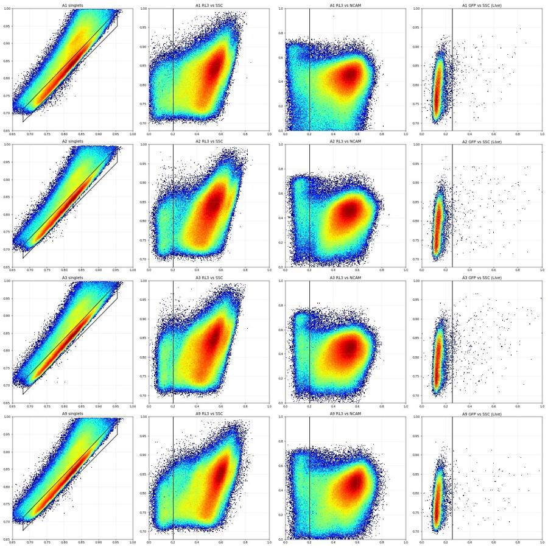
180
thinking
A1 is an outlier on this plate: it ran at 200 µL/min, has the lowest Singlets/Cells (62.7%) and 17.6% coincident events, and its Live fraction is 1.6× its duplicate's. Next I'll pull exact time positions for the B7/B8 flow disturbances as evidence.
181
tool call · Bash
cd /tmp/work && cat > b78.py <<'EOF'
import sys; sys.path.insert(0,'/tmp/work')
from common import *
for w in ['B7','B8','B9','A2']:
ev,names=load(w); t=ev[:,0]/1000
b=np.arange(0,t.max(),0.1); c,_=np.histogram(t,b); r=c/0.1
med=np.median(r[(b[:-1]>20)&(b[:-1]<90)])
low=r<0.25*med; high=r>1.4*med
def runs(mask):
out=[]; i=0
while i<len(mask):
if mask[i]:
j=i
while j<len(mask) and mask[j]: j+=1
out.append((round(b[i],1),round(b[j],1))); i=j
else: i+=1
return out
print(w,'median rate(0.1s bins, 20-90s)',int(med),'n low bins',low.sum(),'n high bins',high.sum())
print(' low (<25% median) runs:',runs(low)[:30])
print(' high (>140%) runs:',runs(high)[:30])
for a,z in [(0,1),(1,3),(3,5),(5,8),(8,10),(10,15),(15,30),(30,35),(35,62),(62,90)]:
m=(t>=a)&(t<z); print(' %d-%ds: %d ev/s'%(a,z,m.sum()/(z-a)), end=';')
print()
# cumulative fraction of events in disturbed window
EOF
python3 -I b78.py182
tool output
B7 median rate(0.1s bins, 20-90s) 10650 n low bins 65 n high bins 51 low (<25% median) runs: [(0.0, 1.4), (1.8, 3.9), (4.1, 4.2), (4.3, 4.4), (5.2, 5.3), (5.6, 5.7), (6.1, 6.2), (6.5, 6.6), (6.8, 6.9), (7.9, 8.1), (9.1, 9.2), (48.4, 48.5), (48.8, 48.9), (51.7, 51.9), (52.9, 53.0), (53.3, 53.4), (55.2, 55.3), (55.9, 56.0), (58.1, 58.3), (59.6, 59.8), (61.5, 62.3)] high (>140%) runs: [(4.0, 4.1), (14.1, 14.2), (14.5, 14.6), (14.7, 14.8), (15.0, 15.1), (29.5, 31.8), (33.8, 33.9), (37.9, 38.0), (48.6, 48.7), (48.9, 49.0), (49.2, 49.3), (51.9, 52.0), (53.0, 53.1), (53.4, 53.5), (55.4, 55.5), (56.0, 56.1), (56.6, 56.8), (58.3, 58.4), (59.9, 60.0), (62.5, 63.1), (67.2, 67.3), (67.6, 67.7), (96.9, 97.0)] 0-1s: 312 ev/s; 1-3s: 1783 ev/s; 3-5s: 3669 ev/s; 5-8s: 6106 ev/s; 8-10s: 9076 ev/s; 10-15s: 7868 ev/s; 15-30s: 12158 ev/s; 30-35s: 13664 ev/s; 35-62s: 9729 ev/s; 62-90s: 10146 ev/s; B8 median rate(0.1s bins, 20-90s) 9830 n low bins 40 n high bins 38 low (<25% median) runs: [(0.0, 3.6), (5.0, 5.1), (5.7, 5.8), (6.2, 6.3), (6.4, 6.5)] high (>140%) runs: [(8.2, 8.3), (8.6, 11.9), (12.0, 12.3), (12.5, 12.6)] 0-1s: 646 ev/s; 1-3s: 63 ev/s; 3-5s: 4232 ev/s; 5-8s: 5917 ev/s; 8-10s: 13531 ev/s; 10-15s: 13248 ev/s; 15-30s: 10184 ev/s; 30-35s: 10083 ev/s; 35-62s: 9897 ev/s; 62-90s: 9498 ev/s; B9 median rate(0.1s bins, 20-90s) 8950 n low bins 1 n high bins 1 low (<25% median) runs: [(58.5, 58.6)] high (>140%) runs: [(58.6, 58.7)] 0-1s: 7452 ev/s; 1-3s: 7487 ev/s; 3-5s: 8576 ev/s; 5-8s: 9251 ev/s; 8-10s: 9252 ev/s; 10-15s: 8655 ev/s; 15-30s: 8908 ev/s; 30-35s: 9115 ev/s; 35-62s: 8993 ev/s; 62-90s: 8738 ev/s; A2 median rate(0.1s bins, 20-90s) 9670 n low bins 0 n high bins 0 low (<25% median) runs: [] high (>140%) runs: [] 0-1s: 9349 ev/s; 1-3s: 9309 ev/s; 3-5s: 10174 ev/s; 5-8s: 10737 ev/s; 8-10s: 10400 ev/s; 10-15s: 9855 ev/s; 15-30s: 9902 ev/s; 30-35s: 9833 ev/s; 35-62s: 9647 ev/s; 62-90s: 9272 ev/s; Shell cwd was reset to /task
184
agent
Now computing a uniform QC table for all 42 wells to build flags.csv.
185
tool call · Bash
cd /tmp/work && cat > qc_table.py <<'EOF'
import sys; sys.path.insert(0,'/tmp/work')
from common import *
import flowio
cnt=pd.read_csv('/task/outputs/counts.csv').pivot(index='well',columns='population',values='count')
rows=[]
for fn,w in zip(LAY.file,LAY.well):
ev,names=load(w); t=ev[:,0]/1000; T=t.max()
meta=flowio.FlowData('/task/inputs/raw/'+fn, only_text=True).text
b=np.arange(0,T,0.1); c,_=np.histogram(t,b); r=c/0.1
med=np.median(r[(b[:-1]>20)&(b[:-1]<min(90,T-5))]) if T>50 else np.median(r[(b[:-1]>5)&(b[:-1]<T-5)])
core=(b[:-1]>=1)&(b[:-1]<T-5)
nlow=int((r[core]<0.25*med).sum()); nhigh=int((r[core]>1.4*med).sum())
b1=np.arange(0,T,1.0); c1,_=np.histogram(t,b1); c1=c1[:-1] if len(c1)>1 else c1
cv=c1[1:].std()/c1[1:].mean()
first2=((t<2).sum()/2)/med; last2=((t>T-2).sum()/2)/med
pm={ch: 100*np.mean(ev[:,names.index(ch)]>=1048575*0.999) for ch in ['FSC-A','SSC-A','BL1-A','RL3-A']}
nonmono=int((np.diff(ev[:,0])<0).sum())
nm_n = int(np.where(np.diff(ev[:,0])<0)[0][0]+1) if nonmono else 0
rows.append(dict(file=fn,well=w,total=len(t),Cells=cnt.loc[w,'Cells'],Singlets=cnt.loc[w,'Singlets'],Live=cnt.loc[w,'Live'],GFP_pos=cnt.loc[w,'GFP_pos'],
flow_ul_min=int(meta['#flowrate']),coinc_pct=round(100*int(meta['#coincidentcount'])/len(t),1),run_s=round(T,1),med_rate=int(med),rate_cv1s=round(cv,3),
n_low01=nlow,n_high01=nhigh,first2=round(first2,2),last2=round(last2,2),
pmax_fsc=round(pm['FSC-A'],2),pmax_ssc=round(pm['SSC-A'],2),pmax_bl1=round(pm['BL1-A'],3),pmax_rl3=round(pm['RL3-A'],3),time_reset=nonmono,reset_n=nm_n))
df=pd.DataFrame(rows); df.to_csv('/tmp/work/qc_table.csv',index=False)
pd.set_option('display.width',300); pd.set_option('display.max_rows',100); pd.set_option('display.max_columns',30)
print(df.drop(columns=['file']))
EOF
python3 -I qc_table.py186
tool output
well total Cells Singlets Live GFP_pos flow_ul_min coinc_pct run_s med_rate rate_cv1s n_low01 n_high01 first2 last2 pmax_fsc pmax_ssc pmax_bl1 pmax_rl3 time_reset reset_n 0 A1 978726 713552 447396 34796 246 200 17.6 46.200001 21645 0.053 0 0 1.04 0.91 0.19 1.18 0.001 0.000 0 0 1 A2 935707 661522 490508 24154 216 100 10.3 97.900002 9670 0.055 0 0 0.95 0.76 0.07 0.50 0.002 0.000 0 0 2 A3 925910 664050 503450 27330 373 100 9.8 97.699997 9670 0.070 0 0 0.92 0.63 0.05 0.47 0.002 0.000 0 0 3 A4 892332 643872 484019 22645 299 100 10.0 97.699997 9280 0.054 0 1 0.86 0.90 0.08 0.53 0.007 0.000 0 0 4 A5 986514 704216 521226 25520 358 100 10.6 97.900002 10200 0.059 0 2 0.89 0.96 0.08 0.61 0.010 0.000 0 0 5 A6 755396 544630 429214 16987 321 100 8.2 97.099998 7920 0.062 0 0 0.85 0.92 0.03 0.35 0.011 0.000 0 0 6 A7 848859 585259 434975 21526 145 100 9.6 97.900002 8790 0.054 1 2 0.88 0.89 0.09 0.54 0.003 0.000 0 0 7 A8 710140 504521 394475 20380 196 100 8.0 97.900002 7460 0.067 0 0 0.72 0.92 0.07 0.44 0.005 0.000 0 0 8 A9 958681 648516 455890 30471 123 100 11.4 97.800003 9980 0.057 2 4 0.91 0.94 0.32 1.09 0.002 0.000 0 0 9 A10 870505 606525 448300 24940 146 100 10.0 97.699997 9030 0.073 2 2 0.97 0.62 0.14 0.63 0.003 0.000 0 0 10 A11 844586 574848 441776 27917 245 100 8.8 97.900002 8730 0.054 1 1 0.88 1.01 0.04 0.38 0.008 0.000 0 0 11 A12 947510 650273 484829 27008 377 100 10.0 97.900002 9830 0.065 1 1 0.96 0.57 0.09 0.55 0.011 0.000 0 0 12 B1 733754 465049 339893 26172 24 100 8.9 97.900002 7580 0.061 0 1 0.85 1.04 0.11 0.48 0.000 0.000 0 0 13 B2 728886 460450 337546 24309 61 100 8.9 97.900002 7490 0.056 0 2 0.90 1.01 0.13 0.53 0.000 0.000 0 0 14 B3 667298 427696 330625 16067 178 100 7.6 97.900002 6950 0.059 2 3 0.85 0.96 0.07 0.35 0.000 0.000 0 0 15 B4 598212 380255 304167 19580 94 100 6.7 97.900002 6220 0.071 4 5 0.91 0.52 0.04 0.32 0.000 0.000 0 0 16 B5 837561 556689 422539 30346 220 100 8.8 97.900002 8660 0.069 0 1 0.92 0.59 0.04 0.41 0.000 0.000 0 0 17 B6 877336 580514 433978 34443 230 100 9.1 97.800003 9100 0.065 0 1 0.93 0.53 0.05 0.48 0.000 0.000 0 0 18 B7 954909 649174 476460 14794 193 100 10.3 97.900002 10650 0.259 55 50 0.10 0.88 0.12 0.56 0.000 0.001 0 0 19 B8 918778 615968 458524 15669 321 100 10.0 97.800003 9830 0.224 30 38 0.04 0.59 0.04 0.38 0.000 0.000 0 0 20 B9 862070 590463 445025 16407 300 100 9.2 98.000000 8950 0.051 1 1 0.83 1.03 0.05 0.40 0.000 0.000 0 0 21 B10 1083648 736469 532739 18173 332 100 11.0 97.800003 11260 0.070 0 0 0.95 0.56 0.06 0.61 0.001 0.000 0 0 22 B11 988574 667736 499151 17494 484 100 9.9 97.900002 10310 0.067 0 1 0.92 0.61 0.03 0.44 0.004 0.000 0 0 23 B12 904103 604738 456931 14758 537 100 9.3 97.800003 9390 0.049 0 0 0.87 0.92 0.03 0.38 0.012 0.000 0 0 24 C1 624718 399138 328558 7206 150 100 6.1 97.800003 6460 0.050 0 0 0.82 1.00 0.01 0.15 0.000 0.000 0 0 25 C2 695572 443600 354280 10414 230 100 7.0 97.800003 7280 0.076 0 4 0.87 0.52 0.01 0.20 0.000 0.000 0 0 26 C3 656321 410498 318645 13225 129 100 7.3 97.699997 6940 0.091 0 2 0.88 0.36 0.04 0.29 0.000 0.000 0 0 27 C4 679504 444866 354062 10592 166 100 7.1 97.800003 7140 0.083 0 0 0.90 0.45 0.01 0.20 0.000 0.000 0 0 28 C5 689593 452398 364931 9968 162 100 6.9 97.900002 7150 0.050 2 2 0.82 1.01 … [2,714 more characters not shown]
188
tool call · Bash
cd /tmp/work && cat > res_qc.py <<'EOF'
import sys; sys.path.insert(0,'/tmp/work')
from gatelib import *
out=[]
for w in WELLS:
ev,names=load(w); c=cells_mask(ev,names); col=lambda ch: lg(ev[c,names.index(ch)])
d=col('SSC-A')-col('SSC-H'); h=col('SSC-H'); m=(h>0.76)&(h<0.80)
dd=d[m]; mode=np.percentile(dd,10)
# width of singlet ridge: robust sd of lower half around 10th-30th pct
w_r=np.percentile(dd,25)-np.percentile(dd,5)
s=singlets_mask(ev,names); l=s&(lg(ev[:,names.index('RL3-A')])<G.LIVE_MAX)
b=lg(ev[l,names.index('BL1-A')]); mad=1.4826*np.median(np.abs(b-np.median(b)))
f=lg(ev[l,names.index('FSC-A')]); madf=1.4826*np.median(np.abs(f-np.median(f)))
out.append((w, round(w_r,4), round(mad,4), round(madf,4)))
o=pd.DataFrame(out,columns=['well','ridge_p25-p5','BL1_live_rSD','FSC_live_rSD'])
print(o.to_string()); print(o.describe())
EOF
python3 -I res_qc.py189
tool output
well ridge_p25-p5 BL1_live_rSD FSC_live_rSD
0 A1 0.0073 0.0196 0.0368
1 A2 0.0054 0.0198 0.0401
2 A3 0.0052 0.0198 0.0394
3 A4 0.0052 0.0206 0.0392
4 A5 0.0054 0.0203 0.0383
5 A6 0.0047 0.0210 0.0384
6 A7 0.0051 0.0179 0.0338
7 A8 0.0048 0.0186 0.0365
8 A9 0.0059 0.0178 0.0327
9 A10 0.0055 0.0188 0.0362
10 A11 0.0051 0.0198 0.0378
11 A12 0.0053 0.0202 0.0384
12 B1 0.0051 0.0172 0.0364
13 B2 0.0050 0.0174 0.0361
14 B3 0.0048 0.0186 0.0374
15 B4 0.0045 0.0190 0.0402
16 B5 0.0050 0.0186 0.0388
17 B6 0.0053 0.0188 0.0400
18 B7 0.0058 0.0210 0.0426
19 B8 0.0052 0.0223 0.0410
20 B9 0.0053 0.0206 0.0394
21 B10 0.0056 0.0207 0.0371
22 B11 0.0053 0.0223 0.0385
23 B12 0.0052 0.0227 0.0389
24 C1 0.0044 0.0202 0.0470
25 C2 0.0047 0.0206 0.0465
26 C3 0.0048 0.0190 0.0375
27 C4 0.0048 0.0203 0.0431
28 C5 0.0047 0.0207 0.0449
29 C6 0.0051 0.0212 0.0418
30 C7 0.0046 0.0199 0.0490
31 C8 0.0046 0.0210 0.0498
32 C9 0.0052 0.0190 0.0409
33 C10 0.0054 0.0190 0.0394
34 C11 0.0053 0.0195 0.0395
35 C12 0.0049 0.0202 0.0391
36 D1 0.0049 0.0199 0.0390
37 D2 0.0051 0.0203 0.0407
38 D3 0.0054 0.0180 0.0346
39 D4 0.0053 0.0190 0.0385
40 D5 0.0038 0.0183 0.0346
41 D6 0.0046 0.0214 0.0432
ridge_p25-p5 BL1_live_rSD FSC_live_rSD
count 42.000000 42.000000 42.000000
mean 0.005110 0.019783 0.039598
std 0.000524 0.001305 0.003755
min 0.003800 0.017200 0.032700
25% 0.004800 0.018850 0.037425
50% 0.005100 0.019850 0.039050
75% 0.005300 0.020600 0.040850
max 0.007300 0.022700 0.049800
Shell cwd was reset to /task191
tool call · Bash
cd /tmp/work && python3 -I -c "
import sys; sys.path.insert(0,'/tmp/work')
from common import *; import gates_def as G
S=np.load('singlets_data.npz')
for w in ['A1','A2','A3','A4','A5','A6','A9','A10','B1','B6']:
a=S[w]; r=lg(a[:,0]); v=lg(a[:,3]); live=r<G.LIVE_MAX
print(w, 'live%%sing %.2f'%(100*live.mean()), 'NCAMhi(>0.6) live %%sing %.2f'%(100*(live&(v>0.6)).mean()), 'NCAMlo(<0.45) live %%sing %.2f'%(100*(live&(v<0.45)).mean()), 'frac of live NCAMlo %.2f'%((live&(v<0.45)).sum()/live.sum()))
"192
tool output
A1 live%sing 7.78 NCAMhi(>0.6) live %sing 0.89 NCAMlo(<0.45) live %sing 4.97 frac of live NCAMlo 0.64 A2 live%sing 4.92 NCAMhi(>0.6) live %sing 1.06 NCAMlo(<0.45) live %sing 2.44 frac of live NCAMlo 0.50 A3 live%sing 5.43 NCAMhi(>0.6) live %sing 0.89 NCAMlo(<0.45) live %sing 2.97 frac of live NCAMlo 0.55 A4 live%sing 4.68 NCAMhi(>0.6) live %sing 0.88 NCAMlo(<0.45) live %sing 2.41 frac of live NCAMlo 0.51 A5 live%sing 4.90 NCAMhi(>0.6) live %sing 0.86 NCAMlo(<0.45) live %sing 2.50 frac of live NCAMlo 0.51 A6 live%sing 3.96 NCAMhi(>0.6) live %sing 0.95 NCAMlo(<0.45) live %sing 1.89 frac of live NCAMlo 0.48 A9 live%sing 6.68 NCAMhi(>0.6) live %sing 0.87 NCAMlo(<0.45) live %sing 3.95 frac of live NCAMlo 0.59 A10 live%sing 5.56 NCAMhi(>0.6) live %sing 1.25 NCAMlo(<0.45) live %sing 2.64 frac of live NCAMlo 0.47 B1 live%sing 7.70 NCAMhi(>0.6) live %sing 1.83 NCAMlo(<0.45) live %sing 3.95 frac of live NCAMlo 0.51 B6 live%sing 7.94 NCAMhi(>0.6) live %sing 1.66 NCAMlo(<0.45) live %sing 4.39 frac of live NCAMlo 0.55 Shell cwd was reset to /task
194
thinking
I've flagged cluster A1 as `other` at medium confidence, since its extra Live events are NCAM-low, pointing to an acquisition artifact. Next I'm checking the exported Gating-ML.
195
tool call · Bash
cd /task/outputs && cat gates.xml | head -80; wc -l counts.csv; head -5 counts.csv
196
tool output
<?xml version='1.0' encoding='UTF-8'?>
<gating:Gating-ML xmlns:gating="http://www.isac-net.org/std/Gating-ML/v2.0/gating" xmlns:data-type="http://www.isac-net.org/std/Gating-ML/v2.0/datatypes" xmlns:transforms="http://www.isac-net.org/std/Gating-ML/v2.0/transformations">
<transforms:transformation transforms:id="logicle">
<transforms:logicle transforms:T="1048576" transforms:W="0.5" transforms:M="4.5" transforms:A="0"/>
</transforms:transformation>
<gating:PolygonGate gating:id="Cells">
<gating:dimension gating:compensation-ref="uncompensated" gating:transformation-ref="logicle">
<data-type:fcs-dimension data-type:name="FSC-A"/>
</gating:dimension>
<gating:dimension gating:compensation-ref="uncompensated" gating:transformation-ref="logicle">
<data-type:fcs-dimension data-type:name="SSC-A"/>
</gating:dimension>
<gating:vertex>
<gating:coordinate data-type:value="0.69"/>
<gating:coordinate data-type:value="0.765"/>
</gating:vertex>
<gating:vertex>
<gating:coordinate data-type:value="0.785"/>
<gating:coordinate data-type:value="0.69"/>
</gating:vertex>
<gating:vertex>
<gating:coordinate data-type:value="0.88"/>
<gating:coordinate data-type:value="0.745"/>
</gating:vertex>
<gating:vertex>
<gating:coordinate data-type:value="0.997"/>
<gating:coordinate data-type:value="0.89"/>
</gating:vertex>
<gating:vertex>
<gating:coordinate data-type:value="0.997"/>
<gating:coordinate data-type:value="0.997"/>
</gating:vertex>
<gating:vertex>
<gating:coordinate data-type:value="0.79"/>
<gating:coordinate data-type:value="0.997"/>
</gating:vertex>
<gating:vertex>
<gating:coordinate data-type:value="0.72"/>
<gating:coordinate data-type:value="0.86"/>
</gating:vertex>
</gating:PolygonGate>
<gating:PolygonGate gating:id="Singlets" gating:parent_id="Cells">
<gating:dimension gating:compensation-ref="uncompensated" gating:transformation-ref="logicle">
<data-type:fcs-dimension data-type:name="SSC-H"/>
</gating:dimension>
<gating:dimension gating:compensation-ref="uncompensated" gating:transformation-ref="logicle">
<data-type:fcs-dimension data-type:name="SSC-A"/>
</gating:dimension>
<gating:vertex>
<gating:coordinate data-type:value="0.68"/>
<gating:coordinate data-type:value="0.675"/>
</gating:vertex>
<gating:vertex>
<gating:coordinate data-type:value="0.955"/>
<gating:coordinate data-type:value="0.95"/>
</gating:vertex>
<gating:vertex>
<gating:coordinate data-type:value="0.955"/>
<gating:coordinate data-type:value="0.995"/>
</gating:vertex>
<gating:vertex>
<gating:coordinate data-type:value="0.84"/>
<gating:coordinate data-type:value="0.875"/>
</gating:vertex>
<gating:vertex>
<gating:coordinate data-type:value="0.68"/>
<gating:coordinate data-type:value="0.712"/>
</gating:vertex>
</gating:PolygonGate>
<gating:RectangleGate gating:id="Live" gating:parent_id="Singlets">
<gating:dimension gating:compensation-ref="uncompensated" gating:transformation-ref="logicle" gating:max="0.2">
<data-type:fcs-dimension data-type:name="RL3-A"/>
</gating:dimension>
</gating:RectangleGate>
<gating:RectangleGate gating:id="GFP_pos" gating:parent_id="Live">
<gating:dimension gating:compensation-ref="uncompensated" gating:transformation-ref="logicle" gating:min="0.25">
<data-type:fcs-dimension data-type:name="BL1-A"/>
</gating:dimension>
</gating:RectangleGate>
</gating:Gating-ML>
169 counts.csv
file,well,population,count,parent_population,pct_of_parent
Serotype panel_2_Rep2_Group_A1.fcs,A1,Cells,713552,all_events,72.90620664006065
Serotype panel_2_Rep2_Group_A1.fcs,A1,Singlets,447396,Cells,62.69984528107272
Serotype panel_2_Rep2_Group_A1.fcs,A1,Live,34796,Singlets,7.777449954849843
Serotype panel_2_Rep2_Group_A1.fcs,A1,GFP_pos,246,Live,0.7069778135417865198
agent
The Gating-ML looks right. Now writing flags.csv from the QC table.
199
tool call · Bash
cd /tmp/work && cat > write_flags.py <<'EOF'
import pandas as pd, numpy as np
q=pd.read_csv('/tmp/work/qc_table.csv')
plate_med_rate=int(q[q.well!='A1'].med_rate.median())
def base(r):
return (f"total {r.total:,} events; Cells {r.Cells:,}, Singlets {r.Singlets:,}, Live {r.Live:,}, GFP_pos {r.GFP_pos:,}; "
f"flow {r.flow_ul_min} uL/min, run {r.run_s:.1f} s, median rate {r.med_rate:,} ev/s, 1-s rate CV {r.rate_cv1s:.3f}; "
f"0.1-s bins <25%/>140% of median: {r.n_low01}/{r.n_high01}; first 2 s {100*r.first2:.0f}% and last 2 s {100*r.last2:.0f}% of median rate; "
f"% at scale max FSC-A {r.pmax_fsc:.2f}, SSC-A {r.pmax_ssc:.2f}, BL1-A {r.pmax_bl1:.3f}, RL3-A {r.pmax_rl3:.3f}")
special = {
'B7': ('no','clog_or_interrupted_flow',
"unstable flow over the first ~63 s: 312 ev/s in 0-1 s and 1,783 ev/s in 1-3 s (median 10,650 ev/s); 0.1-s bins near zero at 0-3.9 s, 5-9 s, 48-62 s (gap 61.5-62.3 s); bursts to >140% at 14-15 s, 29.5-31.8 s (13,664 ev/s over 30-35 s) and 48-63 s; 55 low and 50 high 0.1-s bins vs <=8 in every other well apart from B8; Live/Singlets drifts 3.6% -> 2.7% across the run; confidence: high"),
'B8': ('no','clog_or_interrupted_flow',
"flow stalled at the start, then surged: 646 ev/s in 0-1 s, 63 ev/s in 1-3 s, 4,232 ev/s in 3-5 s, then a surge to 13,500 ev/s over 8-15 s (>140% of the 9,830 ev/s median) before settling after ~15 s; 30 low and 38 high 0.1-s bins (other wells apart from B7 <=8); acquired right after the clogged B7; Cells% 61% in the first run decile vs 66-70% later; confidence: medium"),
'D5': ('no','too_few_events',
"only 153,195 events (plate range otherwise 578,214-1,083,648) at a steady but low 1,590 ev/s for the whole 97.8 s run (1-s CV 0.065, so a dilute sample rather than a clog); Live 1,727 (next lowest D6 6,870; plate median ~17,000) and GFP_pos 22, so %GFP_pos has ~21% Poisson CV; scatter also atypical (Singlets/Cells 93.9% vs 63-83% elsewhere; coincident events 1.5%); confidence: high"),
'A1': ('no','other',
f"acquired at 200 uL/min ($#FLOWRATE) while every other well ran at 100 uL/min: run only 46.2 s, 21,645 ev/s (plate median {plate_med_rate:,}), coincident events 17.6% of total (others 1.5-11.4%); Singlets/Cells 62.7% is the plate minimum (others 70.3-93.9%) and the SSC-H/SSC-A singlet diagonal is 1.4x wider (p25-p5 0.0073 vs median 0.0051); Live/Singlets 7.78% vs 4.92% in its duplicate A2, with the excess in NCAM-low events (NCAM-low Live 4.97% of Singlets vs 1.9-3.0% in A2-A6; NCAM-high Live 0.89% vs 0.86-1.06%); not comparable with the rest of the plate; confidence: medium"),
}
notes = {
'C6': "Time resets once: the first 4,443 events carry timestamps 3.35-3.89 s, then Time restarts at 14 ms and runs continuously (no gap). These events are 0.5% of the file, overlap the same time window and give similar fractions (Live/Singlets 3.7% vs 3.4%), so the well is kept",
'C11': "Time resets once: the first 4,103 events carry timestamps 3.35-3.90 s, then Time restarts at 14 ms and runs continuously. These events are 0.5% of the file with similar fractions (Live/Singlets 3.6% vs 3.6%), so the well is kept",
'D4': "Time resets once: the first 4,084 events carry timestamps 3.29-3.84 s, then Time restarts at 14 ms and runs continuously. These events are 0.4% of the file with similar fractions (Live/Singlets 4.1% vs 4.8%), so the well is kept",
}
rows=[]
for r in q.itertuples():
ev=base(r)
if r.well in special:
u,cat,extra=special[r.well]; ev=ev+"; "+extra
else:
u,cat='yes','ok'
add=[]
if r.well in notes: add.append(notes[r.well])
if r.last2<0.6: add.append(f"end-of-run taper only (rate falls to {100*r.last2:.0f}% of median in the last 2 s; affected events <3% of the file and mostly debris outside Cells; gated fractions stable across run deciles)")
if add: ev=ev+"; "+"; ".join(add)
rows.append(dict(file=r.file, well=r.well, usable=u, reason_category=cat, evidence=ev))
f=pd.DataFrame(rows); f.to_csv('/task/outputs/flags.csv', index=False)
print(f[['well','usable','reason_category']].to_string()); print(f.evidence.str.len().describe())
EOF
python3 -I write_flags.py | tail -12; grep -E "B7|D5|C3" /task/outputs/flags.csv200
tool output
39 D4 yes ok 40 D5 no too_few_events 41 D6 yes ok count 42.000000 mean 401.500000 std 150.606619 min 299.000000 25% 301.000000 50% 301.500000 75% 478.000000 max 872.000000 Name: evidence, dtype: float64 Serotype panel_2_Rep2_Group_B7.fcs,B7,no,clog_or_interrupted_flow,"total 954,909 events; Cells 649,174, Singlets 476,460, Live 14,794, GFP_pos 193; flow 100 uL/min, run 97.9 s, median rate 10,650 ev/s, 1-s rate CV 0.259; 0.1-s bins <25%/>140% of median: 55/50; first 2 s 10% and last 2 s 88% of median rate; % at scale max FSC-A 0.12, SSC-A 0.56, BL1-A 0.000, RL3-A 0.001; unstable flow over the first ~63 s: 312 ev/s in 0-1 s and 1,783 ev/s in 1-3 s (median 10,650 ev/s); 0.1-s bins near zero at 0-3.9 s, 5-9 s, 48-62 s (gap 61.5-62.3 s); bursts to >140% at 14-15 s, 29.5-31.8 s (13,664 ev/s over 30-35 s) and 48-63 s; 55 low and 50 high 0.1-s bins vs <=8 in every other well apart from B8; Live/Singlets drifts 3.6% -> 2.7% across the run; confidence: high" Serotype panel_2_Rep2_Group_B8.fcs,B8,no,clog_or_interrupted_flow,"total 918,778 events; Cells 615,968, Singlets 458,524, Live 15,669, GFP_pos 321; flow 100 uL/min, run 97.8 s, median rate 9,830 ev/s, 1-s rate CV 0.224; 0.1-s bins <25%/>140% of median: 30/38; first 2 s 4% and last 2 s 59% of median rate; % at scale max FSC-A 0.04, SSC-A 0.38, BL1-A 0.000, RL3-A 0.000; flow stalled at the start, then surged: 646 ev/s in 0-1 s, 63 ev/s in 1-3 s, 4,232 ev/s in 3-5 s, then a surge to 13,500 ev/s over 8-15 s (>140% of the 9,830 ev/s median) before settling after ~15 s; 30 low and 38 high 0.1-s bins (other wells apart from B7 <=8); acquired right after the clogged B7; Cells% 61% in the first run decile vs 66-70% later; confidence: medium" Serotype panel_2_Rep2_Group_C3.fcs,C3,yes,ok,"total 656,321 events; Cells 410,498, Singlets 318,645, Live 13,225, GFP_pos 129; flow 100 uL/min, run 97.7 s, median rate 6,940 ev/s, 1-s rate CV 0.091; 0.1-s bins <25%/>140% of median: 0/2; first 2 s 88% and last 2 s 36% of median rate; % at scale max FSC-A 0.04, SSC-A 0.29, BL1-A 0.000, RL3-A 0.000; end-of-run taper only (rate falls to 36% of median in the last 2 s; affected events <3% of the file and mostly debris outside Cells; gated fractions stable across run deciles)" Serotype panel_2_Rep2_Group_D5.fcs,D5,no,too_few_events,"total 153,195 events; Cells 98,562, Singlets 92,511, Live 1,727, GFP_pos 22; flow 100 uL/min, run 97.8 s, median rate 1,590 ev/s, 1-s rate CV 0.065; 0.1-s bins <25%/>140% of median: 0/0; first 2 s 75% and last 2 s 86% of median rate; % at scale max FSC-A 0.00, SSC-A 0.08, BL1-A 0.005, RL3-A 0.000; only 153,195 events (plate range otherwise 578,214-1,083,648) at a steady but low 1,590 ev/s for the whole 97.8 s run (1-s CV 0.065, so a dilute sample rather than a clog); Live 1,727 (next lowest D6 6,870; plate median ~17,000) and GFP_pos 22, so %GFP_pos has ~21% Poisson CV; scatter also atypical (Singlets/Cells 93.9% vs 63-83% elsewhere; coincident events 1.5%); confidence: high" Shell cwd was reset to /task
202
tool call · Bash
cd /tmp/work && python3 -I -c "
import pandas as pd; q=pd.read_csv('qc_table.csv'); print(q.Live.median(), q.Live.describe()); print((q.Singlets/q.Cells*100).sort_values().round(1).values)"203
tool output
17240.5 count 42.000000 mean 18484.047619 std 7628.866530 min 1727.000000 25% 13460.750000 50% 17240.500000 75% 24270.250000 max 34796.000000 Name: Live, dtype: float64 [62.7 70.3 72.3 73.1 73.3 73.4 73.6 73.9 74. 74.1 74.3 74.4 74.6 74.8 74.8 74.8 74.9 75.2 75.4 75.6 75.8 75.9 76.1 76.2 76.3 76.5 76.9 77.3 77.6 77.7 78.2 78.8 79.6 79.9 80. 80.2 80.5 80.7 81. 82.3 82.6 93.9] Shell cwd was reset to /task
204
tool call · Bash
cd /tmp/work && python3 - <<'EOF'
import re
s=open('write_flags.py').read()
s=s.replace("0.1-s bins near zero at 0-3.9 s, 5-9 s, 48-62 s (gap 61.5-62.3 s)","0.1-s bins below 25% of median at 0-3.9 s, repeatedly at 4-9 s and 48-62 s (longest 61.5-62.3 s)")
s=s.replace("plate median ~17,000","plate median 17,240")
s=s.replace("end-of-run taper only (rate falls to {100*r.last2:.0f}% of median in the last 2 s; affected events <3% of the file and mostly debris outside Cells; gated fractions stable across run deciles)",
"end-of-run taper only (rate falls to {100*r.last2:.0f}% of median in the last 2 s; <3% of events, enriched for debris outside Cells; Live/Singlets stable across run deciles), not ran dry")
open('write_flags.py','w').write(s)
EOF
python3 -I write_flags.py >/dev/null && python3 -I -c "
import pandas as pd; f=pd.read_csv('/task/outputs/flags.csv'); print(f.shape, f.usable.value_counts().to_dict(), f.reason_category.value_counts().to_dict())
for e in f[f.usable=='no'].evidence: print(e[-20:])
print(f.loc[f.well=='C6','evidence'].values[0])"205
tool output
(42, 5) {'yes': 38, 'no': 4} {'ok': 38, 'clog_or_interrupted_flow': 2, 'other': 1, 'too_few_events': 1}
; confidence: medium
un; confidence: high
; confidence: medium
%); confidence: high
total 891,011 events; Cells 586,425, Singlets 446,773, Live 11,958, GFP_pos 166; flow 100 uL/min, run 97.6 s, median rate 9,260 ev/s, 1-s rate CV 0.091; 0.1-s bins <25%/>140% of median: 0/8; first 2 s 93% and last 2 s 55% of median rate; % at scale max FSC-A 0.02, SSC-A 0.32, BL1-A 0.003, RL3-A 0.000; Time resets once: the first 4,443 events carry timestamps 3.35-3.89 s, then Time restarts at 14 ms and runs continuously (no gap). These events are 0.5% of the file, overlap the same time window and give similar fractions (Live/Singlets 3.7% vs 3.4%), so the well is kept; end-of-run taper only (rate falls to 55% of median in the last 2 s; <3% of events, enriched for debris outside Cells; Live/Singlets stable across run deciles), not ran dry
Shell cwd was reset to /task207
agent
Flags are written: 4 unusable (A1, B7, B8, D5) and 38 ok. Next I'm saving gate and QC overview figures to outputs, then writing notes.md.
208
tool call · Bash
cd /tmp/work && cat > fig_out.py <<'EOF'
import sys; sys.path.insert(0,'/tmp/work')
from gatelib import *
import matplotlib; matplotlib.use('Agg'); import matplotlib.pyplot as plt
from matplotlib.colors import LogNorm
S=np.load('singlets_data.npz')
fig,axs=plt.subplots(2,3,figsize=(18,11)); axs=axs.ravel()
H=np.load('H_fs.npy'); xe=np.linspace(0.55,1.005,301); ye=np.linspace(0.4,1.005,301)
axs[0].pcolormesh(xe,ye,H.T,norm=LogNorm(vmin=1),cmap='viridis'); P=np.array(G.CELLS+[G.CELLS[0]]); axs[0].plot(P[:,0],P[:,1],'r-',lw=1.5)
axs[0].set_xlabel('FSC-A (logicle)'); axs[0].set_ylabel('SSC-A (logicle)'); axs[0].set_title('Cells: all events, 42 wells pooled')
H=np.load('H_ss.npy'); e=np.linspace(0.6,1.005,301)
axs[1].pcolormesh(e,e,H.T,norm=LogNorm(vmin=1),cmap='viridis'); P=np.array(G.SINGLETS+[G.SINGLETS[0]]); axs[1].plot(P[:,0],P[:,1],'r-',lw=1.5)
axs[1].set_xlim(0.66,1.0); axs[1].set_ylim(0.66,1.0); axs[1].set_xlabel('SSC-H (logicle)'); axs[1].set_ylabel('SSC-A (logicle)'); axs[1].set_title('Singlets: Cells, pooled')
H=np.load('H_live.npy'); xe=np.linspace(0,1,301); ye=np.linspace(0.6,1.005,301)
axs[2].pcolormesh(xe,ye,H.T,norm=LogNorm(vmin=1),cmap='viridis'); axs[2].axvline(G.LIVE_MAX,color='r'); axs[2].set_ylim(0.68,1.0)
axs[2].set_xlabel('RL3-A Zombie NIR (logicle)'); axs[2].set_ylabel('SSC-A (logicle)'); axs[2].set_title('Live: RL3-A <= 0.20 (~340), Singlets pooled')
bins=np.linspace(0,0.9,361); c=(bins[:-1]+bins[1:])/2
for w in WELLS:
r=lg(S[w][:,0]); h=np.histogram(r,bins)[0]; axs[3].plot(c,h/h.sum(),lw=0.5,color='gray',alpha=0.6)
axs[3].axvline(G.LIVE_MAX,color='r'); axs[3].set_yscale('log'); axs[3].set_xlabel('RL3-A (logicle)'); axs[3].set_title('RL3-A on Singlets, each well (valley 0.16-0.23)')
for ax,w in [(axs[4],'B1'),(axs[5],'C8')]:
a=S[w]; m=lg(a[:,0])<G.LIVE_MAX
ax.hist2d(lg(a[m,1]),lg(a[m,2]),bins=[200,120],range=[[0,1],[0.68,1]],norm=LogNorm(),cmap='viridis'); ax.axvline(G.GFP_MIN,color='r')
ax.set_xlabel('BL1-A GFP (logicle)'); ax.set_ylabel('SSC-A (logicle)'); ax.set_title(f'GFP_pos: BL1-A >= 0.25 (~593), Live of {w}')
for a in axs: a.grid(alpha=0.25)
plt.tight_layout(); plt.savefig('/task/outputs/gates_overview.png',dpi=70)
fig,axs=plt.subplots(2,4,figsize=(22,8)); axs=axs.ravel()
for i,w in enumerate(['B7','B8','D5','A1','A2','C6','C3','B9']):
ev,names=load(w); t=ev[:,0]/1000; b=np.arange(0,t.max()+0.1,0.1); h,_=np.histogram(t,b)
axs[i].plot(b[:-1],h/0.1,lw=0.6); axs[i].set_title(f'{w}: events/s (0.1-s bins)'); axs[i].set_xlabel('Time (s)'); axs[i].set_ylim(0,None); axs[i].grid(alpha=.3)
plt.tight_layout(); plt.savefig('/task/outputs/qc_event_rate.png',dpi=60)
EOF
python3 -I fig_out.py209
tool call · Read
{
"file_path": "/task/outputs/gates_overview.png"
}210
tool output
Shell cwd was reset to /task
211
tool output
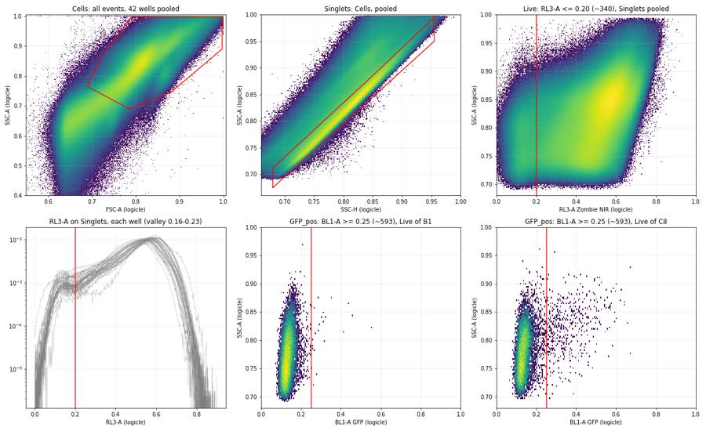
213
tool call · Write
{
"file_path": "/task/outputs/notes.md",
"content": "# Plate 230306: AAV serotype panel, rep 2, FlowKit gating notes\n\n## Gates\nI built one `GatingStrategy` (`gates.xml`, which reloads with `parse_gating_xml`) and applied it unchanged to all 42 wells. All dimensions use uncompensated data on one logicle axis (T=1,048,576, W=0.5, M=4.5, A=0). There is no subsampling. `counts.csv` comes from `gate_sample` on the reloaded XML, and an independent numpy re-gating gave the same counts. I drew the scatter gates on all 42 wells pooled, then checked them well by well (`gates_overview.png`).\n- **Cells** (PolygonGate, FSC-A x SSC-A): the pooled plot shows a debris cloud (logicle ~0.67/0.66, ~30k/29k raw) and a cell cloud (~0.82/0.85, ~150k/190k raw). The lower-left edge runs perpendicular to the debris-to-cell axis at the density minimum (~0.72/0.73). The top and right edges sit at 0.997, which excludes events piled at 1,048,575.\n- **Singlets** (PolygonGate, SSC-H x SSC-A): I profiled SSC-A minus SSC-H in each SSC-H bin. The singlet ridge peaks at +0.005 to +0.025 and falls to background by +0.03 to +0.04. The band runs from -0.005 to +0.032/+0.040, widening with SSC-H. Events whose SSC-A is too high for their SSC-H (doublets and aggregates) fall outside it.\n- **Live** (1-D RectangleGate, RL3-A <= 0.20, about 340 raw): Singlets have a small Zombie NIR-dim population (peak 0.12-0.17, about 100-250 raw) and a dominant bright population (peak ~0.57, about 13,000 raw). The dim cells are the live ones: they are NCAM-bright, have higher FSC and carry most GFP-bright events. The bright ones are dead. The valley minimum, found in each well, lies at 0.16-0.23 (pooled 0.19-0.20), so I used one cut at 0.20. Live is only 1.8-7.9% of Singlets in every well.\n- **GFP_pos** (1-D RectangleGate, BL1-A >= 0.25, about 593 raw, open to the top of the axis): with no untransduced well, I judged the edge of the GFP-negative population on B1, the well with the fewest GFP-bright events, and checked it on B2 and B4. In B1's Live cells, BL1-A has a median of 0.13, a 99.5th percentile of 0.204 and a 99.9th of 0.248; above 0.25 the events are sparse (24 of 26,172). The cut sits just above that edge and is the same for every well. GFP_pos/Live is 0.09-3.97%.\n\n## Quality control\n- **Headers:** all 42 files are Attune NxT, 06-Mar-2023. $WELLID and $FIL match the file names and `plate_layout.csv`. Voltages match the notebook in every file (FSC 30, SSC 300, BL1 250, VL1 300, RL3 300), $PnS labels match the dyes, and the stored spillover is identity. Flow rate is 100 uL/min in every well except A1 (200).\n- **Time:** I checked event rate in 1-s and 0.1-s bins, counting 0.1-s bins below 25% or above 140% of each well's median rate. I also checked the rate in the first and last 2 s, whether Time is monotonic, and Cells%, Live/Singlets and GFP_pos/Live in 10 time deciles.\n- **Saturation:** the largest % of events at 1,048,575 is FSC-A 0.32%, SSC-A 1.18%, BL1-A 0.012% and RL3-A 0.001%. The Cells gate removes the scatter pile-up, so no well is flagged for saturation.\n- **Events:** I checked total and gated counts in every well, and found no events duplicated across files.\n- **Unusable (4 wells):**\n - B7: clog over the first ~63 s, with 55 low and 50 high 0.1-s bins (high confidence).\n - B8: flow stalled for 0-3.6 s, then surged at 8-15 s (medium confidence).\n - D5: too few events (153,195 total, 1,727 Live, 22 GFP_pos) at a steady 1,590 events/s, i.e. a dilute sample, not a clog (high confidence).\n - A1 (`other`): acquired at 200 uL/min. It has 17.6% coincident events, the plate's lowest Singlets/Cells (62.7%), a wider singlet diagonal, and a Live fraction 1.6x its duplicate A2 that is made up of NCAM-low events (medium confidence).\n- **Kept, with notes:**\n - C6, C11 and D4 each start with an out-of-order block of 4,084-4,443 events (\u22640.5% of the file) timestamped 3.3-3.9 s, after which Time restarts at 14 ms. The block looks like the same sample.\n - 11 wells taper at the end of the run (the last 2 s run at 36-59% of the median rate; C3 is the lowest). This is under 3% of events, enriched for debris, and not a ran-dry profile.\n- No `bad_control` flags were possible because the plate has no control wells. Nothing in the data suggested a mislabeled well.\n\n## Deviations\nNone. All four gates use the populations, order, axes and parents in `gating_strategy.md`. Live and GFP_pos use the 1-D RectangleGate form that it lists as accepted, drawn on logicle axes as its FlowKit notes suggest.\n"
}214
tool output
File created successfully at: /task/outputs/notes.md (file state is current in your context — no need to Read it back)
216
tool call · Bash
cd /tmp/work && python3 -I -c "
import sys; sys.path.insert(0,'/tmp/work')
from common import *
v=np.array([0.67,0.66,0.72,0.73,0.82,0.85,0.12,0.13,0.15,0.17,0.57,0.20,0.25]); print(list(zip(v, ilg(v).round(0))))
import pandas as pd
f=pd.read_csv('/task/outputs/flags.csv'); print(f[f.evidence.str.contains('taper')].well.tolist())
q=pd.read_csv('qc_table.csv'); print(q[q.last2<0.6][['well','last2']].values.tolist())
"217
tool output
[(0.67, 34710.0), (0.66, 31331.0), (0.72, 58008.0), (0.73, 64298.0), (0.82, 162759.0), (0.85, 221948.0), (0.12, 32.0), (0.13, 68.0), (0.15, 141.0), (0.17, 217.0), (0.57, 12549.0), (0.2, 340.0), (0.25, 593.0)] ['A12', 'B4', 'B5', 'B6', 'B10', 'C2', 'C3', 'C4', 'C6', 'C10'] [['A12', 0.57], ['B4', 0.52], ['B5', 0.59], ['B6', 0.53], ['B8', 0.59], ['B10', 0.56], ['C2', 0.52], ['C3', 0.36], ['C4', 0.45], ['C6', 0.55], ['C10', 0.51]] Shell cwd was reset to /task
218
tool call · Bash
cd /task/outputs && python3 - <<'EOF'
p='/task/outputs/notes.md'; s=open(p).read()
rep=[("a debris cloud (logicle ~0.67/0.66, ~30k/29k raw) and a cell cloud (~0.82/0.85, ~150k/190k raw)","a debris cloud (logicle ~0.67/0.66, ~35k/31k raw) and a cell cloud (~0.82/0.85, ~163k/222k raw)"),
("at the density minimum (~0.72/0.73)","at the density minimum (~0.72/0.73, ~58k/64k raw)"),
("(peak 0.12-0.17, about 100-250 raw)","(peak 0.12-0.17, about 30-220 raw)"),
("(peak ~0.57, about 13,000 raw)","(peak ~0.57, about 12,500 raw)"),
(" - 11 wells taper at the end of the run (the last 2 s run at 36-59% of the median rate; C3 is the lowest)."," - 10 kept wells taper at the end of the run (A12, B4, B5, B6, B10, C2, C3, C4, C6, C10; the last 2 s run at 36-59% of the median rate, C3 lowest).")]
for a,b in rep:
assert a in s, a; s=s.replace(a,b)
open(p,'w').write(s)
EOF
wc -w /task/outputs/notes.md; ls -la /task/outputs219
tool output
769 /task/outputs/notes.md total 568 drwxr-xr-x 2 root root 4096 Nov 10 17:35 . drwxr-xr-x 4 root root 4096 Nov 10 17:00 .. -rw-r--r-- 1 root root 13056 Nov 10 17:28 counts.csv -rw-r--r-- 1 root root 18984 Nov 10 17:34 flags.csv -rw-r--r-- 1 root root 3644 Nov 10 17:27 gates.xml -rw-r--r-- 1 root root 366076 Nov 10 17:35 gates_overview.png -rw-r--r-- 1 root root 4521 Nov 10 17:35 notes.md -rw-r--r-- 1 root root 151835 Nov 10 17:35 qc_event_rate.png
221
tool call · Bash
cd /tmp/work && python3 -I - <<'EOF'
import pandas as pd, numpy as np, flowkit as fk, re
lay=pd.read_csv('/task/inputs/plate_layout.csv')
c=pd.read_csv('/task/outputs/counts.csv'); f=pd.read_csv('/task/outputs/flags.csv')
assert list(c.columns)==['file','well','population','count','parent_population','pct_of_parent'] and len(c)==168
assert list(f.columns)==['file','well','usable','reason_category','evidence'] and len(f)==42
assert set(zip(c.file,c.well))==set(zip(lay.file,lay.well)) and list(zip(f.file,f.well))==list(zip(lay.file,lay.well))
assert c.population.tolist()==['Cells','Singlets','Live','GFP_pos']*42
assert c['count'].dtype.kind=='i' and c.pct_of_parent.between(0,100).all()
pm={'Cells':'all_events','Singlets':'Cells','Live':'Singlets','GFP_pos':'Live'}; assert (c.parent_population==c.population.map(pm)).all()
assert ((f.usable=='yes')==(f.reason_category=='ok')).all()
assert f[f.usable=='no'].evidence.str.contains(r'confidence: (high|medium|low)$').all()
cats={'ok','clog_or_interrupted_flow','ran_dry','too_few_events','saturation','bad_control','mislabeled_or_unexpected','other'}; assert set(f.reason_category)<=cats
# recompute pct from counts
p=c.pivot(index='well',columns='population',values='count')
gs=fk.parse_gating_xml('/task/outputs/gates.xml')
for w in ['D5','A1','C6']:
fn=lay.loc[lay.well==w,'file'].item(); s=fk.Sample('/task/inputs/raw/'+fn); r=gs.gate_sample(s)
got=[int(r.get_gate_membership(g).sum()) for g in ['Cells','Singlets','Live','GFP_pos']]
assert got==[p.loc[w,g] for g in ['Cells','Singlets','Live','GFP_pos']], (w,got)
tot=s.event_count; assert abs(c[(c.well==w)&(c.population=='Cells')].pct_of_parent.item()-100*got[0]/tot)<1e-9
print('all checks pass'); print(f[f.usable=='no'][['well','reason_category']].to_string(index=False))
EOF222
tool output
<stdin>:11: UserWarning: This pattern is interpreted as a regular expression, and has match groups. To actually get the groups, use str.extract. all checks pass well reason_category A1 other B7 clog_or_interrupted_flow B8 clog_or_interrupted_flow D5 too_few_events Shell cwd was reset to /task
224
agent
I gated all 42 wells with one FlowKit strategy and four wells should not be used: A1, B7, B8 and D5. `gates.xml` reloads with `parse_gating_xml`, `counts.csv` comes from `gate_sample` on that reloaded file, and a separate numpy re-gating gave the same counts. All three CSV/markdown deliverables pass format checks (168 count rows, 42 flag rows).
**Gates** (uncompensated data, one logicle axis for everything, no per-well changes):
- **Cells:** a polygon on FSC-A × SSC-A. Its lower-left edge sits at the density minimum between debris and cells, and its top and right edges cut off events piled at the scale maximum.
- **Singlets:** a narrow band along the SSC-H × SSC-A diagonal, sized from the measured width of the singlet ridge.
- **Live:** RL3-A ≤ 0.20 on the logicle scale (about 340 raw), set in the valley, which falls at 0.16–0.23 in every well. The dim Zombie NIR population is clearly the live one: it is NCAM-bright, larger on FSC, and holds most of the GFP-bright cells. Only 1.8–7.9% of singlets are live in any well.
- **GFP_pos:** BL1-A ≥ 0.25 (about 593 raw), just above the edge of the GFP-negative cells in B1, the well with the fewest GFP-bright events. GFP_pos ranges from 0.09% to 3.97% of Live cells.
**Unusable wells:**
| Well | Category | Confidence | Main evidence |
|---|---|---|---|
| B7 | clog_or_interrupted_flow | high | Rate swings between near zero and bursts over the first ~63 s (55 low and 50 high 0.1-s bins; no other well except B8 has more than 8) |
| B8 | clog_or_interrupted_flow | medium | Flow stalled for 0–3.6 s, then surged to 13,500 events/s over 8–15 s |
| D5 | too_few_events | high | 153,195 events at a steady 1,590/s (a dilute sample, not a clog); only 1,727 Live and 22 GFP_pos |
| A1 | other | medium | Run at 200 µL/min while every other well ran at 100; 17.6% coincident events, the plate's lowest singlet fraction, and a Live fraction 1.6× its duplicate A2, made up of NCAM-low events |
**Kept, with notes in the evidence column:**
- **C6, C11, D4:** each file starts with an out-of-order block of about 4,100–4,400 events (≤0.5% of the file), after which the Time channel restarts. The block looks like the same sample, so I didn't exclude these wells.
- **10 wells:** the event rate tapers in the last 2 s, down to 36% of the median in C3. This affects under 3% of events, mostly debris, and doesn't look like a run that went dry.
- **No saturation flags:** at most 1.18% of events sit at the scale maximum (SSC-A), and the Cells gate removes them.
**Judgment calls you may want to revisit:**
- **A1 and B8** are the least certain flags. A1's results could be kept if the higher flow rate is acceptable to you, and B8 is stable after about 15 s.
- **The GFP cut-off** was set without an untransduced control, so the GFP_pos percentages depend on B1 being a fair stand-in for GFP-negative cells.
Files are in `/task/outputs/`:
- `gates.xml`
- `counts.csv`
- `flags.csv`
- `notes.md`
- `gates_overview.png`
- `qc_event_rate.png`
final result
I gated all 42 wells with one FlowKit strategy and four wells should not be used: A1, B7, B8 and D5. `gates.xml` reloads with `parse_gating_xml`, `counts.csv` comes from `gate_sample` on that reloaded file, and a separate numpy re-gating gave the same counts. All three CSV/markdown deliverables pass format checks (168 count rows, 42 flag rows). **Gates** (uncompensated data, one logicle axis for everything, no per-well changes): - **Cells:** a polygon on FSC-A × SSC-A. Its lower-left edge sits at the density minimum between debris and cells, and its top and right edges cut off events piled at the scale maximum. - **Singlets:** a narrow band along the SSC-H × SSC-A diagonal, sized from the measured width of the singlet ridge. - **Live:** RL3-A ≤ 0.20 on the logicle scale (about 340 raw), set in the valley, which falls at 0.16–0.23 in every well. The dim Zombie NIR population is clearly the live one: it is NCAM-bright, larger on FSC, and holds most of the GFP-bright cells. Only 1.8–7.9% of singlets are live in any well. - **GFP_pos:** BL1-A ≥ 0.25 (about 593 raw), just above the edge of the GFP-negative cells in B1, the well with the fewest GFP-bright events. GFP_pos ranges from 0.09% to 3.97% of Live cells. **Unusable wells:** | Well | Category | Confidence | Main evidence | |---|---|---|---| | B7 | clog_or_interrupted_flow | high | Rate swings between near zero and bursts over the first ~63 s (55 low and 50 high 0.1-s bins; no other well except B8 has more than 8) | | B8 | clog_or_interrupted_flow | medium | Flow stalled for 0–3.6 s, then surged to 13,500 events/s over 8–15 s | | D5 | too_few_events | high | 153,195 events at a steady 1,590/s (a dilute sample, not a clog); only 1,727 Live and 22 GFP_pos | | A1 | other | medium | Run at 200 µL/min while every other well ran at 100; 17.6% coincident events, the plate's lowest singlet fraction, and a Live fraction 1.6× its duplicate A2, made up of NCAM-low events | **Kept, with notes in the evidence column:** - **C6, C11, D4:** each file starts with an out-of-order block of about 4,100–4,400 events (≤0.5% of the file), after which the Time channel restarts. The block looks like the same sample, so I didn't exclude these wells. - **10 wells:** the event rate tapers in the last 2 s, down to 36% of the median in C3. This affects under 3% of events, mostly debris, and doesn't look like a run that went dry. - **No saturation flags:** at most 1.18% of events sit at the scale maximum (SSC-A), and the Cells gate removes them. **Judgment calls you may want to revisit:** - **A1 and B8** are the least certain flags. A1's results could be kept if the higher flow rate is acceptable to you, and B8 is stable after about 15 s. - **The GFP cut-off** was set without an untransduced control, so the GFP_pos percentages depend on B1 being a fair stand-in for GFP-negative cells. Files are in `/task/outputs/`: - `gates.xml` - `counts.csv` - `flags.csv` - `notes.md` - `gates_overview.png` - `qc_event_rate.png`